%load_ext CythonInference in Probabilistic Models - Sampling Methods
Michael Habeck - Jena University Hospital - michael.habeck@uni-jena.de
Wolfhart Feldmeier - Jena University Hospital - wolfhart.feldmeier@uni-jena.de
Dates and course organization
Six weeks, two 2-hour lectures plus one 2-hour exercises session per week
Lectures on Monday and Friday, exercises on Wednesday
Timetable
| Lecture | Date | Weekday | Time | Topic |
|---|---|---|---|---|
| 1 | Dec 16, 2022 | Fri | 10:15 - 11:45 | Introduction |
| 2 | Jan 02, 2023 | Mon | 10:15 - 11:45 | Direct Sampling Methods |
| Ex 1 | Jan 04, 2023 | Wed | 10:15 - 11:45 | Exercises for lectures 1-2 |
| 3 | Jan 06, 2023 | Fri | 10:15 - 11:45 | Rejection & Importance Sampling |
| 4 | Jan 09, 2023 | Mon | 10:15 - 11:45 | Markov chains, MCMC |
| Ex 2 | Jan 11, 2023 | Wed | 10:15 - 11:45 | Exercises for lectures 3-4 |
| 5 | Jan 13, 2023 | Fri | 10:15 - 11:45 | The Metropolis-Hastings algorithm |
| 6 | Jan 16, 2023 | Mon | 10:15 - 11:45 | Gibbs sampling |
| Ex 3 | Jan 18, 2023 | Wed | 10:15 - 11:45 | Exercises for lectures 5-6 |
| 7 | Jan 20, 2023 | Fri | 10:15 - 11:45 | Hamiltonian Monte Carlo |
| 8 | Jan 23, 2023 | Mon | 10:15 - 11:45 | Practical aspects of HMC |
| Ex 4 | Jan 25, 2023 | Wed | 10:15 - 11:45 | Exercises for lectures 7-8 |
| 9 | Jan 27, 2023 | Fri | 10:15 - 11:45 | Slice sampling |
| 10 | Jan 30, 2023 | Mon | 10:15 - 11:45 | Practical aspects, Diagnostics |
| Ex 5 | Feb 01, 2023 | Wed | 10:15 - 11:45 | Exercises for lectures 9-10 |
| 11 | Feb 03, 2023 | Fri | 10:15 - 11:45 | TBA |
| 12 | Feb 06, 2023 | Mon | 10:15 - 11:45 | TBA |
| Ex 6 | Feb 08, 2023 | Wed | 10:15 - 11:45 | Exercises for lectures 11-12 |
| 13 | Feb 10, 2023 | Fri | 10:15 - 11:45 | TBA |
Topics
Lecture 1: Introduction
- Motivation
- Monte Carlo approximation
- An inefficient way of computing \(\pi\)
Lecture 2: Direct Sampling Methods
- Can we beat the curse of dimensionality?
- Random number generation
- Direct sampling by variable transformation methods
Lecture 3: Rejection and Importance Sampling
- More direct sampling methods
- Rejection sampling
- Importance sampling
Lecture 4: Markov chains
- Markov chains
- Some mathematical facts about Markov chains
Lecture 5: The Metropolis-Hastings Algorithm
- Fundamental theorem of Markov chains
- Metropolis-Hastings algorithm
Lecture 6: Gibbs sampling
- Recap: Metropolis-Hastings algorithm
- Combining Markov chains
- Gibbs sampling
- Auxiliary variable methods
Lecture 7: Hamiltonian Monte Carlo
- Recap: MCMC + Gibbs Sampling
- More on auxiliary variable methods
- Hamiltonian Monte Carlo
Lecture 8: Hamiltonian Monte Carlo, Practical Issues
- Hamiltonian Monte Carlo continued
- Practical Issues (convergence, diagnostic checks)
Lecture 9: Slice sampling
- General slice sampling
- Neal’s bracketing method
Lecture 10: Practical Aspects of MCMC
- Convergence, diagnostic checks
Lectures 11-13: TBA
Possible topics
- Annealed Importance Sampling
- Nested Sampling
- Parallel Tempering / Replica-exchange Monte Carlo
- Sequential Monte Carlo (SMC)
- Graphical models
- Ising model
- Simulator models
- Stochastic differential equation & Langevin dynamics
- Bridge sampling, thermodynamic integration
- Partition function estimation
- Intractable models
- Exchange algorithm
- Adaptive Monte Carlo methods
- Wang-Landau
- Exact sampling: coupling from the past
Literature
Matti Vihola: Lectures on Stochastic Simulation
Radford Neal: Probabilistic Inference Using Markov Chain Monte Carlo Methods
Chris Bishop: Pattern Recognition and Machine Learning, Chap. 11
David MacKay: Information Theory, Inference, and Learning Algorithms, Chap. 29 + 30
Iain Murray: Advances in Markov chain Monte Carlo methods
Andrieu, de Freitas, Doucet, Jordan: An Introduction to MCMC for Machine Learning
Charles Geyer: Introduction to Markov Chain Monte Carlo
Jun S. Liu: Monte Carlo Strategies in Scientific Computing
David A Levin, Yuval Peres: Markov chains and mixing times
Lecture 1: Introduction
Outline
- Motivation
- Monte Carlo approximation
- An inefficient way of computing \(\pi\)
Why do we need sampling methods?
Solving inference problems
A major motivation is to use sampling methods for doing Bayesian inference and more generally for solving inference in probabilistic models. But sampling methods are also very important in many other domains such as Physics, Chemistry etc. Monte Carlo techniques are also essential in machine learning.
Being good Bayesians we are interested in the following computational tasks
Marginalization: Integrating or summing out uninteresting parameters in a probabilistic model
Conditioning: Fixing some variables and evaluating probabilities conditioned on the fixed variables. For example, conditioning on the observed data in order to compute the posterior probability
Expectation: Computing the mean value of some function (e.g. computation of the model evidence)
Bayesian inference
At its most fundamental level, Bayesian inference involves applying the sum and product rule of probability theory to learn a model from some information:
\[ \underbrace{\Pr(\theta\mid D, M)}_{Posterior}\,\, \underbrace{\Pr(D\mid M)}_{Evidence} = \underbrace{\Pr(D\mid \theta, M)}_{Likelihood}\,\, \underbrace{\Pr(\theta\mid M)}_{Prior} \tag{1}\]
where \(D\) are the data, \(M\) is a model with parameters \(\theta\).
There are two main tasks in Bayesian inference:
estimation of the model parameters \(\theta\),
comparison of model \(M\) to alternative model \(M'\).
First task requires computations with the (unnormalized) posterior \(\Pr(\theta\mid{}D,M)\) or \(\Pr(D\mid{}\theta,M)\,\Pr(\theta\mid{}M)\). The second task involves computation of the model evidence:
\[ \Pr(D\mid{}M) = \int \Pr(D\mid{}\theta, M)\, \Pr(\theta\mid{}M)\, d\theta \tag{2}\]
Other important integrals that need to be computed in Bayesian analysis are:
Marginal posterior: \[ \Pr(\theta_1\mid{}D,M) = \int \Pr(\theta_1, \theta_2\mid{}D, M)\, d{\theta_2} \]
Getting rid of nuisance parameters: \[ \Pr(D\mid{}\theta_1, M) = \int \Pr(D, \theta_2 \mid{} \theta_1, M) \, d{\theta_2} \]
Getting rid of hyperparameters: \[ \Pr(\theta\mid{}D, M) \propto \int \Pr(D\mid{}\theta, M)\, \Pr(\theta\mid{}\alpha, M)\, \Pr(\alpha\mid{}M)\, d{\alpha} \]
Evaluation of predictive distributions: \[ \Pr(y\mid{}D,M) = \int \Pr(y\mid{}\theta, M)\, \Pr(\theta \mid{} D, M)\, d{\theta} \]
Use of Monte Carlo methods in machine learning
Monte Carlo methods are also crucial in machine learning. A straightforward application is relevant to supervised learning with large datasets. Assume that the risk functional, which we minimize to train a model \(f(x)\), is
\[ R(f) = \sum_{n=1}^N \ell(y_n, f(x_n)) \]
where \(\ell(\cdot, \cdot)\) is a loss function that assesses the discrepancy between the observation \(y_n\) and the prediction \(f(x_n)\) based on a (non-parametric) model \(f(x)\). For large \(N\), evaluation of \(R(f)\) can be very costly. A simple strategy to overcome this problem is to train a surrogate of the risk obtained by randomly selecting a small subset from the data, a mini-batch \(B\), and use
\[ \hat R_B(f) = \frac{N}{|B|} \sum_{n\in B} \ell(y_n, f(x_n)) \]
as a cost function for training \(f(x)\). Stochastic gradient descent follows the gradient of the surrogate rather than the full empirical risk, for example, when training deep neural nets.
Another application is learning of intractable models in representation learning (unsupervised learning). Many important models such as Boltzmann machines or restrictive Boltzmann machines are members of the exponential family involving a vector of features \(f(y)\):
\[ \Pr(y\mid{}\theta) = \frac{1}{Z(\theta)} \exp\bigl\{\theta^T\!\!f(y)\bigr\}\,\,\,\text{with}\,\,\, Z(\theta) = \int \exp\bigl\{\theta^T\!\!f(y)\bigr\} dy. \]
The normalizing constant \(Z(\theta)\) is called the partition function (by borrowing the terminology from Statistical Physics). \(Z(\theta)\) is often intractable, meaning that we don’t have a closed form expression for evaluating \(Z(\theta)\). Computation of \(Z(\theta)\) is formally analogous to computing the model evidence in Bayesian inference.
The log likelihood of observing \(y\) is
\[ \log \Pr(y\mid{}\theta) = \theta^T\!\!f(y) - \log Z(\theta) \]
and maximized by following its gradient
\[ \nabla_\theta \log \Pr(y\mid{}\theta) = f(y) - \mathbb E_{\Pr(y\mid{}\theta)}[f]\,\,\,\text{where}\,\,\,\mathbb E_{\Pr(y\mid{}\theta)}[f] = \int f(y) \Pr(y\mid{}\theta)\, dy = \sum_{y \in \mathcal X} f(y)\, \Pr(y \mid{} \theta) \]
If computation of \(Z(\theta)\) is challenging, then also the expectation of the features \(\mathbb E[f]\) is oftentimes not available in analytically closed form. In this case, one often resorts to a Monte Carlo approximation of \(\mathbb E[f]\), for example, in the contrastive divergence approach by Geoffrey Hinton.
Generating representative states
In addition to the motivation coming from (Bayesian) learning, we also need sampling methods to answer queries over probabilistic models approximately. A sum over the entire sample space is approximated by a (weighted) sum over representative samples. Another motivation for developing sampling methods is to generate representative configurations for visualization.
Example: Sampling protein structures
As an example for a high-dimensional continuous sample space, we consider the three-dimensional structure of large biomolecules such as proteins. Here, the parameters \(x\) are the angles parameterizing a protein configuration (these are the so-called dihedral angles, rotational degrees of freedom about chemical bonds). Proteins are linear polymers, i.e. chain molecules with a backbone from which side-chain branch off. Here is an example of a protein structure that was computed with Monte Carlo methods by sampling a posterior distribution over the dihedral angles.
Example: Sampling of Ising models
Ising models are very simple graphical models. Each node can have two colors only, \(\{-1, +1\}\). The graph is a regular square lattice with nearest neighbor edges but no connections otherwise (except for the periodic boundary conditions). The Ising model originates in Statistical Physics and was introduced in 1925 by Ernst Ising as a model for spontaneous magnetization observed in ferromagnetic materials.
The probability of a state \(x\in\{-1, +1\}^{L\times L}\) is
\[ p(x) = \frac{1}{Z(\beta)} \exp\biggl\{\beta \sum_{i\sim j} x_i x_j \biggr\} = \frac{1}{Z(\beta)} \exp\bigl\{-\beta\, E(x) \bigr\} \]
where the sum runs over all nearest neighbors \(i\sim j\) on the square lattice of edge length \(L\), i.e. each spin has four neighbors with whom it interacts. The energy (negative log probability)
\[ E(x) = -\sum_{i\sim j} x_i x_j \]
favors configurations in which neighboring spins are aligned. The partition function is
\[ Z(\beta) = \sum_{i\sim j} \exp\bigl\{-\beta\, E(x) \bigr\} \]
The parameters \(\beta > 0\) is the inverse temperature (from a physical perspective). For \(\beta=0\), we have a uniform distribution over the hypercube. For increasing \(\beta\), the configurations become more and more fragmented forming patches of spins with the same orientation. For large \(\beta\) (such as 1), practically only the configurations with all spins up \(x_i=+1\) or down \(x_i=-1\) have a non-vanishing probability.
%%cython
cimport cython
import numpy as np
cimport numpy as np
import matplotlib.pylab as plt
from libc.math cimport exp
from libc.stdlib cimport rand
cdef extern from "limits.h":
int RAND_MAX
@cython.boundscheck(False)
@cython.wraparound(False)
def ising_energy(np.int64_t[:, :] x):
cdef int N = x.shape[0]
cdef int M = x.shape[1]
cdef int E = 0
cdef int i, j
for i in range(N):
for j in range(M):
E += x[i,j] * (x[i,(j+1)%M] + x[(i+1)%N, j])
return -E
@cython.boundscheck(False)
@cython.wraparound(False)
def ising_sweep(np.int64_t[:, :] x, float beta=0.4):
cdef int N = x.shape[0]
cdef int M = x.shape[1]
cdef int n_offset, m_offset, n, m
for n_offset in range(2):
for m_offset in range(2):
for n in range(n_offset, N, 2):
for m in range(m_offset, M, 2):
ising_flip(x, n, m, beta)
return np.array(x)
@cython.boundscheck(False)
@cython.wraparound(False)
cdef ising_flip(np.int64_t[:, :] x, int i, int j, float beta):
cdef int total = 0
cdef int N = x.shape[0]
cdef int M = x.shape[1]
cdef float dE = 2 * x[i, j] * (x[(i-1)%N,j] + x[(i+1)%N,j] + \
x[i,(j-1)%M] + x[i,(j+1)%M])
if dE <= 0:
x[i, j] *= -1
elif exp(-dE * beta) * RAND_MAX > rand():
x[i, j] *= -1In file included from /opt/hostedtoolcache/Python/3.10.9/x64/lib/python3.10/site-packages/numpy/core/include/numpy/ndarraytypes.h:1948,
from /opt/hostedtoolcache/Python/3.10.9/x64/lib/python3.10/site-packages/numpy/core/include/numpy/ndarrayobject.h:12,
from /opt/hostedtoolcache/Python/3.10.9/x64/lib/python3.10/site-packages/numpy/core/include/numpy/arrayobject.h:5,
from /home/runner/.cache/ipython/cython/_cython_magic_7bae0d7313cdd423600d65a294630b12.c:769:
/opt/hostedtoolcache/Python/3.10.9/x64/lib/python3.10/site-packages/numpy/core/include/numpy/npy_1_7_deprecated_api.h:17:2: warning: #warning "Using deprecated NumPy API, disable it with " "#define NPY_NO_DEPRECATED_API NPY_1_7_API_VERSION" [-Wcpp]
17 | #warning "Using deprecated NumPy API, disable it with " \
| ^~~~~~~L = 2**8
x = np.random.choice([-1,1],size=(L,L))
betas = [0., 0.3, 0.4, 0.44, 0.45, 0.8]
X = [x.copy()]
for beta in betas[1:]:
X.append(x.copy())
for _ in range(100):
ising_sweep(X[-1], beta)
fig, ax = plt.subplots(2, len(betas)//2, figsize=(12, 6))
ax = list(ax.flat)
for a, beta, x in zip(ax, betas, X):
a.set_title(r'$\beta={0:.2f}$'.format(beta))
a.matshow(x, cmap=plt.cm.gray_r)
a.xaxis.set_visible(False)
a.yaxis.set_visible(False)
fig.tight_layout()
Notation and conventions
Most of the time I will consider a probability density function (pdf) or probability mass function (pmf) \(p(x)\) where \(x\) could be a parameter vector of a probabilistic model (e.g. in case we want to do computations with the posterior) or the observations from which we want to learn a model. For continuous sample spaces \(\mathcal X\), we are dealing with a pdf. In case of a discrete sample space \(\mathcal X\) (finite or countably infinite), \(p(x)\) is a pmf.
It is generally hard to compute normalized probabilities, but also not really necessary for many sampling algorithms. Therefore, often \(p(x)\) is just a nonnegative function, and we assume that the integral \(\int_{\mathcal X} p(x)dx < \infty\) or sum \(\sum_{x\in\mathcal X} p(x) < \infty\) is finite.
Often, the computation that we need to carry out can be expressed as the expectation of some quantity under a probability. We will denote expectations by
\[ \mathbb{E}_{p}[f] = \int_{\mathcal X} f(x)\, p(x)\, dx \] e.g. the model evidence used in Bayesian model comparison is \(\Pr(D\mid{}M) = \mathbb E_{\Pr(\theta\mid{}M)}[\Pr(D\mid{}\theta,M)]\).
The notation \[ x \sim p(x) \tag{3}\]
means that \(x\) follows the distribution \(p\)
At \(\beta = \frac{\log(1 + \sqrt 2)}{2} \approx 0.44\), something peculiar happens. The “attractive forces” that tend to align neighboring spins become so dominant that large regions form. Across these regions, all spins have a similar orientation. This is a phase transition. Similar phenomena occur also in learning large probabilistic models where the prior and the likelihood often favor distinct regions in parameter space.
In graphical models such as the Ising model all computations are finite but have an exponential complexity. For a square lattice of length \(L\) there are \(2^{L^2}\) possible states. Visiting all states is not an option even for small to moderate lattice sizes such as \(L=32\). In this case, we have \(2^{1024}\) states. Compare this to the number of atoms in the universe which is estimated to be approx. \(2^{266}\). As an aside, according to Eddington the number of electrons in the universe is in fact
\(15747724136275002577605653961181555468044717914527116709366231425076185631031296 \approx 2^{263}\)
Anyways, if each atom were a computing device and running since the Bing Bang, i.e. for \(13.5 \text{ billion years} \approx 2^{59} s\), at a rate of \(3.3 \text{Gz} =2^{32}\) Hz, then we could have visited \(2^{357}\) states. This is only a vanishingly small fraction of the entire state space of the \(32\times 32\) Ising model. We would have to wait for \(2^{667} \simeq 10^{201}\) universe life times until we had visited all possible states.
For a thorough discussion read the Chap. 29 in David MacKay’s book Information Theory, Inference, and Learning Algorithms.
Monte Carlo methods
The basic idea of Monte Carlo methods is to use a random process to compute a (deterministic) quantity. That is, we give up deterministic guarantees and satisfy ourselves with statistical guarantees: we resort to gambling (therefore the name “Monte Carlo”). For a historical background on the beginning of modern Monte Carlo methods have a look at the recollections of pioneers Nick Metropolis (The Beginning of the Monte Carlo Method) and Roger Eckhard (Stan Ulam, John von Neumann, and the Monte Carlo Method). Using a random experiment to compute a quantity is at least as old as Buffon’s needle problem:

Figure from McCracken: The Monte Carlo Method.
The idea of the Monte Carlo method for probabilistic inference is simple: Instead of computing the integral/sum by systematically visiting all possible states in \(\mathcal X\), we (randomly) pick those states that are likely to contribute strongly to the sum/integral:
\[ \mathbb{E}_{p}[f] = \int_{\mathcal X} f(x)\, p(x)\, dx \approx \hat f_S := \frac{1}{S} \sum_{s=1}^S f(x^{(s)})\,\,\,\text{with}\,\,\, x^{(s)} \sim p(x) \tag{4}\] where \(x^{(s)}\) are \(S\in\mathbb N\) samples from \(p(x)\) (the index \(s\) enumerates all samples) and \(\hat f_S\) is a Monte Carlo estimate or Monte Carlo approximation of \(\mathbb E_p[f]\). Our hope is that with \(S\to\infty\), the approximation becomes better and better. This is indeed the case, as we will see in a second.
Monte Carlo as density estimation
The Monte Carlo approximation can also be viewed as a density estimation approach since the estimate \(\hat f_S\) can be interpreted as the expectation under the approximate probability \[ \hat p_S(x) = \frac{1}{S} \sum_{s=1}^S \delta(x - x^{(s)}) \tag{5}\] where \(\delta(\cdot)\) is the delta distribution: \[ \hat f_S := \frac{1}{S} \sum_{s=1}^S f(x^{(s)}) = \mathbb E_{\hat p_S}[f] \tag{6}\] We approximate the true probability \(p(x)\) with a Monte Carlo estimate \(\hat p_S(x)\) obtained at \(S\) samples \(x^{(s)}\) where
\[ |\hat p_S - p| \to 0\,\,\, \text{for}\,\,\, S\to \infty \]
in some appropriate norm \(|\cdot|\).
Why does it work?
Unbiasedness
The joint distribution of all Monte Carlo samples is simply a product density, because all samples are generated independently of each other: \[ p_S(x^{(1)}, \ldots, x^{(S)}) = \prod_{s=1}^S p(x^{(s)}) \tag{7}\]
The Monte Carlo estimate \(\hat f_S\) is a random quantity, because with each realization of \(x^{(1)}, \ldots, x^{(S)}\) we obtain a different result. We can compute the first two moments of \(\hat f_S\):
\[ \mathbb E_{p_S}[\hat f_S] = \frac{1}{S} \sum_{s=1}^S \mathbb{E}_p[f(x^{(s)})] = \mathbb{E}_p[f] =: \mu \tag{8}\] That is, the Monte Carlo estimate of \(\mathbb E_p[f]\) is unbiased.
How accurate is the estimate on average (i.e. how close do we get to the true value if we run many replications of the sampling procedure)? To answer this question, we compute the variance
\[ \text{var}_{p_S}[\hat f_S] = \mathbb{E}_{p_S}\bigl[(\hat f_S - \mu)^2\bigr] = \frac{1}{S} \text{var}_{p}[f]\, . \tag{9}\]
To see the validity of the last result, we first write
\[ \begin{aligned} \text{var}_{p_S}[\hat f_S] &= \mathbb{E}_{p_S}\bigl[(\hat f_S - \mu)^2\bigr] \\ &= \mathbb{E}_{p_S}\bigl[\frac{1}{S^2} \sum_{s,s'} \underbrace{(f(x^{(s)}) - \mu)}_{\tilde f(x^{(s)})} (f(x^{(s')}) - \mu))\bigr] \\ &= \mathbb{E}_{p_S}\bigl[\frac{1}{S^2} \sum_{s,s'} \tilde f(x^{(s)}) \tilde f(x^{(s')}) \bigr] \\ \end{aligned} \]
where \(\tilde f(x^{(s)}) := f(x^{(s)}) - \mu\) has a vanishing first moment:
\[ \mathbb{E}_{p_S}\bigl[ \tilde f(x^{(s)}) \bigr] = \mathbb{E}_{p(x^{(s)})}\bigl[ \tilde f(x^{(s)}) \bigr] = \mathbb{E}_{p}[f] - \mu = 0\, . \]
The second moment is identical to the variance of f:
\[ \mathbb{E}_{p_S}\bigl[( \tilde f(x^{(s)}) )^2 \bigr] = \mathbb{E}_{p(x^{(s)})} \bigl[( \tilde f(x^{(s)}) )^2 \bigr] = \mathbb{E}_{p}[(f - \mu)^2] = \text{var}_{p}[f]\, . \]
It follows that \[ \begin{aligned} \text{var}_{p_S}[\hat f_S] &= \mathbb{E}_{p_S}\bigl[\frac{1}{S^2} \sum_{s,s'} \tilde f(x^{(s)}) \tilde f(x^{(s')}) \bigr] \\ &= \frac{1}{S^2} \sum_{s,s'} \mathbb{E}_{p_S}\bigl[\tilde f(x^{(s)}) \tilde f(x^{(s')}) \bigr] \\ &= \frac{1}{S^2} \sum_{s} \mathbb{E}_{p_S}\bigl[(\tilde f(x^{(s)}))^2 \bigr] + \frac{1}{S^2} \sum_{s\not= s'} \mathbb{E}_{p_S}\bigl[\tilde f(x^{(s)}) \tilde f(x^{(s')}) \bigr] \\ &= \frac{1}{S} \text{var}_{p}[f] + \frac{1}{S^2} \sum_{s\not= s'} \underbrace{\mathbb{E}_{p(x^{(s)})}\bigl[\tilde f(x^{(s)})\bigr]}_{0} \, \mathbb{E}_{p(x^{(s')})}\bigl[ \tilde f(x^{(s')}) \bigr] \\ &= \frac{1}{S} \text{var}_{p}[f] \\ \end{aligned} \]
where we’ve made use of the linearity of expectations in the second equality, and of the independence of the samples (eq. Equation 7) in the third.
The result shows that Monte Carlo error bars shrink like \(1/\sqrt{S}\):
\[ \sigma(\hat f_S) := \sqrt{\text{var}[\hat f_S]} = \sigma(f) / \sqrt{S} \tag{10}\]
where the proportionality constant \(\sigma(f)=\sqrt{\text{var}[f]}\) depends on the specific estimation problem. In practice, \(\sigma(f)\) is not available (after all we are doing Monte Carlo because we cannot do the sum/integrals that are necessary to compute means and variances…). However, we can use Monte Carlo to estimate \(\sigma(f)\).
Asymptotic guarantees
So far, we studied the behavior of the Monte Carlo estimator for fixed number of samples \(S\) and many repetitions. Let us now look at the limit \(S\to\infty\). We have (almost surely)
\[ \hat f_S \overset{S\to\infty}{\longrightarrow} \mu = \mathbb E_p[f] \tag{11}\]
This result is known as the strong law of large numbers.
If \(\text{var}[f] < \infty\), then the Central limit theorem (CLT), a fundamental theorem in Statistics, guarantees that Monte Carlo works:
\[ \hat f_S \overset{S\to\infty}{\longrightarrow} \mathcal N\left(\mathbb E_p[f], \sigma(f)^2/S\right) \tag{12}\]
where \(\mathcal N(\mu, \sigma^2)\) is the Normal distribution with mean \(\mu\) and variance \(\sigma\).
But these are only statistical, asymptotic guarantees for the convergence of Monte Carlo methods.
Application: A slightly silly way to estimate \(\pi\)
Let us use a simple Monte Carlo approach to estimate \(\pi\). We have
\[ \pi = \int_{[-1,1]^2} \mathbb 1(x^2 + y^2 < 1)\, \, dx dy = \int_{\mathcal X} f(x, y)\, p(x, y)\, dxdy \tag{13}\]
where \(\mathbb 1(\cdot)\) is the indicator function. In this example, the distribution \(p(x,y)=1/4\) is the uniform distribution over the square \(\mathcal X = [-1, 1]^2\) and \(f(x, y) = 4\cdot\mathbb 1(x^2 + y^2 < 1)\). We have:
\[ \mathbb E[f] = \pi\,\,\,\text{and}\,\,\,\text{var}[f] = (4-\pi)\, \pi \]
This integral can be approximated by:
\[ \pi \approx \frac{1}{S} \sum_{s=1}^S f(x^{(s)}, y^{(s)}) \tag{14}\]
where \((x^{(s)}, y^{(s)})\) are picked randomly from the unit square. The approximate value of \(\pi\) is just four times the fraction of sampling points that land in the unit disk.
Let’s code it in Python:
# graphical illustration
from matplotlib.patches import Circle
S = 1000
x = np.random.uniform(-1, +1, size=(2, S))
r = np.sum(x**2, axis=0)
circle = Circle((0.,0.), radius=1., facecolor='b', alpha=0.1, edgecolor='k', lw=2)
fig, ax = plt.subplots(1, 1, figsize=(5, 5))
ax.scatter(*x[:,r<=1], color='b', s=20)
ax.scatter(*x[:,r>1], color='r', s=20)
ax.add_patch(circle)
fig.tight_layout()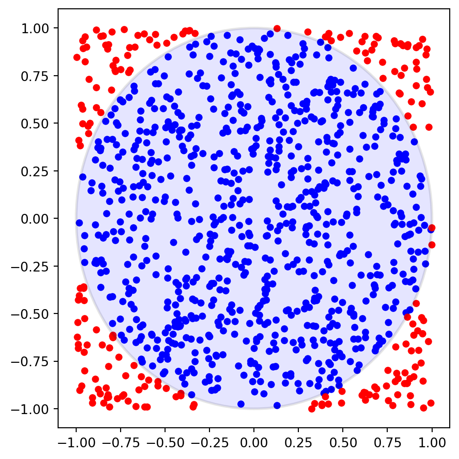
def estimate_pi(S):
"""
Monte Carlo estimate of pi.
Parameters
----------
S : number of samples
"""
# pick S points from unit square
x = np.random.uniform(-1, 1, size=(2, int(S)))
# compute squared distance from center
r = np.sum(x**2, axis=0)
# fraction of points in unit circle
return 4 * np.mean(r < 1)How well does this simple Monte Carlo procedure work, if we increase the number of sampling points?
S = np.logspace(3, 6, 10)
estimates = list(map(estimate_pi, S))
kw = dict(xlabel=r'number of samples $S$')
fig, ax = plt.subplots(1, 2, figsize=(10, 5), subplot_kw=kw)
ax[0].plot(S, estimates, color='k', lw=3)
ax[0].axhline(np.pi, ls='--', color='r', lw=3)
ax[0].set_ylabel(r'estimated $\pi$')
ax[1].plot(S, np.fabs(np.array(estimates)-np.pi), color='k', lw=3)
ax[1].set_ylabel(r'error')
fig.tight_layout()
np.round(np.transpose([S, estimates]), 3)array([[1.00000000e+03, 3.12400000e+00],
[2.15443500e+03, 3.12200000e+00],
[4.64158900e+03, 3.20100000e+00],
[1.00000000e+04, 3.12900000e+00],
[2.15443470e+04, 3.15200000e+00],
[4.64158880e+04, 3.13500000e+00],
[1.00000000e+05, 3.13800000e+00],
[2.15443469e+05, 3.14100000e+00],
[4.64158883e+05, 3.14200000e+00],
[1.00000000e+06, 3.14200000e+00]])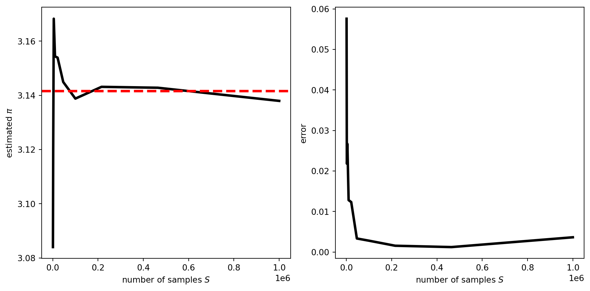
To quantify the statistical error, we run multiple replications of the procedure:
n_rep = 200
estimates = np.array([list(map(estimate_pi, S)) for _ in range(n_rep)])mean_pi = estimates.mean(0)
std_pi = estimates.std(0)
var = np.pi * (4.0 - np.pi)
fig, ax = plt.subplots(1, 1, figsize=(8, 5), subplot_kw=kw)
ax.fill_between(S, mean_pi - np.pi + std_pi, mean_pi - np.pi - std_pi,
color='k', alpha=0.1)
ax.plot(S, mean_pi - np.pi, lw=3, color='k')
ax.plot(S, -(var/S)**0.5, color='r', ls='--')
ax.plot(S, +(var/S)**0.5, color='r', ls='--')
ax.set_ylabel(r'Monte Carlo error')
ax.semilogx()
fig.tight_layout()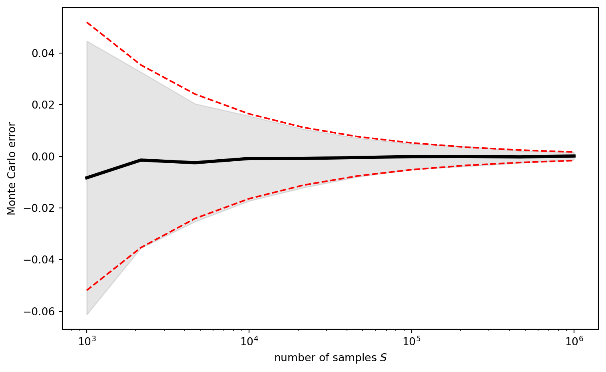
Lecture 2: Direct Sampling Methods
Outline
- Can we beat the curse of dimensionality?
- Random number generation
- Direct sampling by variable transformation methods
A warning
Alan Sokal (Monte Carlo methods in statistical mechanics):
Monte Carlo is an extremely bad method; it should be used only when all alternative methods are worse.
Why is this so? As we saw Monte Carlo methods have a statistical error that roughly scales with \(1/\sqrt{\text{computational budget}}\). Typically, for low-dimensional problems other numerical methods scale much better. For example, even simple quadrature methods such as Simpon’s rule have an error that scales with \(\mathcal O(S^{-4/D})\) rather than \(\mathcal O(S^{-1/2})\) where \(D\) is the dimension of the integrand. This means that for \(D\le 8\), Simpson’s rule will be more efficient than Monte Carlo. However, in higher dimensions this is often no longer the case, and we have to resort to Monte Carlo methods.
Our specific application of Monte Carlo (estimation of \(\pi\)) is a clear case where Sokal’s warning applies. If we use numerical quadrature, we can achieve a high accuracy with much less effort:
import numpy as np
import matplotlib.pylab as plt
from scipy.integrate import quad
val, err, info = quad(lambda x: (1-x**2)**(1/2), 0., 1., full_output=True)
print(f'estimate: {4*val} based on {info["neval"]} points')
print(f'accuracy: {abs(4*val-np.pi)}')estimate: 3.1415926535897922 based on 231 points
accuracy: 8.881784197001252e-16Do we beat the curse of dimensionality?
Although Monte Carlo doesn’t depend explicitly on the dimension of the sample space, it does so in practice. If we go back to our expression for the Monte Carlo error (Eq. Equation 10)
\[ \sigma(\hat f_S) = \sigma(f) / \sqrt{S} \]
for a generalized version of the \(\pi\) estimation approach, then the dependence on the dimension of the sampling problem becomes apparent.
In the generalized version, we estimate the volume of a \(D\)-dimensional unit-ball \(V(D)\) by the following Monte Carlo procedure:
- Pick a point from a unit hypercube (assuming that this can be done easily)
- Check if point lies inside ball
Written out in equations where \(x\) is now a \(D\)-dimensional vector:
\[ V(D) = \int \mathbb 1(\|x\| \le 1) dx = \int p(x)\, f(x)\, dx \] with \[ f(x) = 2^D\, \mathbb 1(\|x\| \le 1)\,\,\, \text{and} \,\,\, p(x) = \frac{1}{2^D} \mathbb 1(x \in [-1, 1]^D) \]
We can compute how the Monte Carlo error scales by evaluating the mean and variance of \(f\):
\[ \begin{aligned} \mathbb E[f] &= V(D)\\ \text{var}[f] &= \mathbb E[f^2] - V^2(D) = 2^D V(D) - V^2(D) = \bigl(2^D - V(D)\bigr)\, V(D) \end{aligned} \]
Therefore, the error of the above Monte Carlo procedure scales with \(D\) as follows:
\[ \sigma(\hat f) = \sqrt{\frac{\bigl(2^D - V(D)\bigr)\, V(D)}{S}} \]
We have:
\[ V(D) = \frac{\pi^{D/2}}{\Gamma(D/2+1)} \approx \frac{1}{\sqrt{D\pi}} \left(\frac{2\pi e}{D}\right)^{D/2} \]
Therefore, overall:
\[ \sigma(\hat f) \approx (8e\pi/D)^{D/4} \bigl/\bigr. (\pi D)^{1/4} \sqrt{S} \]
from scipy.special import gammaln, lambertw
def estimate_volume(D, S):
"""
D : dimension of embedding space
S : number of sampling points
"""
volcube = 2**D
points = np.random.uniform(-1., 1., size=(S, D))
distance = np.linalg.norm(points, axis=1)
return np.mean(distance <= 1.) * volcube
def volball(D):
"""
Volume of a unit ball in D dimensions
See: https://en.wikipedia.org/wiki/Volume_of_an_n-ball
"""
logvol = 0.5 * D * np.log(np.pi) - gammaln(D/2 + 1)
return np.exp(logvol)S = 10000
n_trials = 1000
dims = np.arange(1, 30)
vols = np.array([[estimate_volume(D, S) for _ in range(n_trials)] for D in dims])# show results
dims = np.arange(len(vols))+1
kw = dict(xlabel=r'dimension $D$')
fig, ax = plt.subplots(1, 2, figsize=(8, 4), subplot_kw=kw)
ax[0].fill_between(dims, vols.mean(1) + vols.std(1),
vols.mean(1) - vols.std(1), color='k', alpha=0.1)
ax[0].plot(dims, vols.mean(1), lw=3, color='k', label='estimated volume')
ax[0].plot(dims, volball(dims), lw=2, color='r', ls='--', label='true volume')
ax[0].set_ylabel('volume of unit ball')
ax[0].legend()
ax[0].set_ylim(-1., 6.)
# Monte Carlo error
dims = np.arange(1, 100)
err = np.sqrt((2.**dims - volball(dims)) * volball(dims))
approx_err = (np.pi*dims)**(-1/4) * (8*np.pi*np.e/dims)**(dims/4)
dim_crit = -1/lambertw(-1/(8*np.pi)).real
ax[1].plot(dims, err, lw=3, color='k')
ax[1].plot(dims, approx_err, lw=2, color='r', ls='--', label='approx. error')
ax[1].axvline(dim_crit, lw=2, color='b', ls='--', label='largest MC error\n' + r'at $D=24$')
ax[1].set_ylabel('MC error')
ax[1].legend()
fig.tight_layout()
print(volball(np.arange(1, 10)))[2. 3.14159265 4.1887902 4.9348022 5.26378901 5.16771278
4.72476597 4.05871213 3.2985089 ]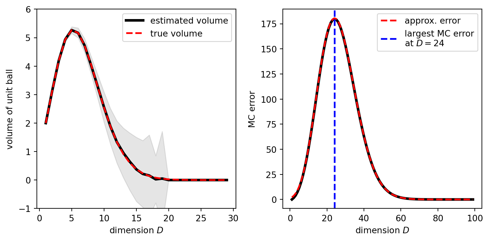
The Monte Carlo error depends on the dimension in a non-trivial fashion. The dimension with the largest scaling factor \(\sigma(f)\) is approximately
\[ D_{\text{max. error}} \approx -1 / W(-1/(8\pi)) \approx 24 \]
where \(W\) is the Lambert W function. Another problem is that the chance of hitting a point in the unit ball by sampling from the hypercube \([-1, 1]^D\) dwindles dramatically as \(D\) decreases, since
\[ \text{acceptance rate} = \frac{\text{ volume ball}}{\text{ volume cube}} = \frac{V(D)}{2^D} \to 0 \]
That is, although the Monte Carlo error decays beyond \(D > 24\), the generation of a point inside the ball becomes extremely rare.
Pros and Cons of Monte Carlo
Pros of the Monte Carlo method:
Monte Carlo methods are widely applicable. For instance, \(f\) and \(p\) need not be continuous, differentiable etc.
Monte Carlo is often easy to implement.
Monte Carlo can work well in multiple dimensions, where grid-based methods can be inefficient/inapplicable. This is supported by the “\(\mathcal O(1/\sqrt{S})\) rate of convergence” which is independent of the dimension.
Cons:
Even though the Monte Carlo rate is usually \(\mathcal O(1/\sqrt{S})\), the constants involved may grow exponentially in dimension.
Deterministic methods may have better rate of convergence than the Monte Carlo rate \(1/\sqrt{S}\) (but may also deteriorate faster when dimension increases).
Monte Carlo estimate is always random, so we never have a guaranteed tolerance, but only statistical evidence (consistent confidence intervals at best).
Pseudo-random Number Generators
Monte Carlo Estimation depends on the availability of uniform random numbers (we needed these in order to generate points in the hypercube). One possibility to generate random numbers is to do random experiments such as rolling a die. Swiss Astronomer Rudolf Wolf rolled a pair of dice 20000 times (see e.g. Wolf dice data). He also performed Buffon’s needle experiment to verify the value of \(\pi\). Francis Galton designed a device, the quincunx or Galton board, for generating randomly distributed balls or beans that follow a Gaussian distribution (in fact Binomial distribution). Here is a nice animation and an interactive online tool. The RAND cooperation used an electrical roulette wheel to generate 1 million random numbers that were published as a book. More hardware implementations for generating random numbers have been developed (see wikipedia for more information). For example, RDRAND extracts random numbers from an Intel on-chip hardware random number generator.
# simulation of Galton board
class GaltonBoard:
# directions into which ball can jump
left, right = -0.5, +0.5
def __init__(self, n_beans=1e4, n_pegs=20):
"""
n_beans : int or float
number of beans that will run through board
n_pegs : int > 0
number of pegs from top to bottom
"""
self.n_beans = int(n_beans)
self.n_pegs = int(n_pegs)
def simulate_jumps(self):
"""Simulate all jumps as a random walk. """
return np.random.choice([GaltonBoard.left, GaltonBoard.right],
size=(self.n_beans, self.n_pegs))
def sample_positions(self):
"""Simulate jumps and return final position of beans by adding up
all steps for left/right.
"""
return self.simulate_jumps().sum(1)
board = GaltonBoard(n_beans=1e3, n_pegs=99)
# accumulate
x, counts = np.unique(board.sample_positions(), return_counts=True)
# convert counts to probability
p = counts.astype('d') / counts.sum()
# fit Gaussian
mu = np.dot(p, x)
sigma = np.dot(p, (x-mu)**2)**(1/2)
t = np.linspace(-1., 1., 1000) * 5 * sigma + mu
g = np.exp(-0.5 * (t-mu)**2/sigma**2 - 0.5 * np.log(2*np.pi*sigma**2))
g *= np.diff(x).min()
# compare results graphically
fig, ax = plt.subplots(1, 1)
ax.bar(x, p, color='k', alpha=0.2)
ax.plot(t, g, lw=3, color='k')
fig.tight_layout()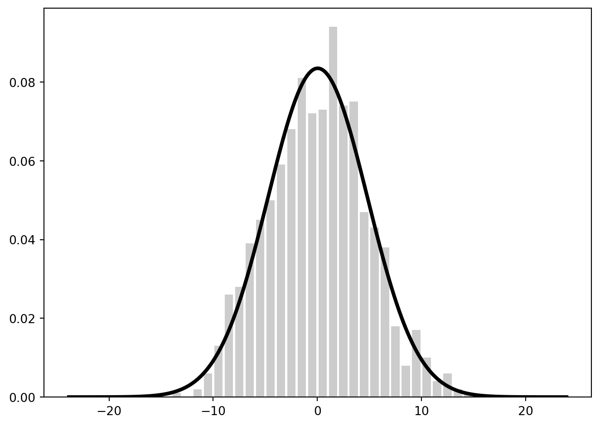
Linear congruential generator
Pseudo random number generators (PRNGs) are typically used to produce uniformly distributed pseudo random numbers. One of the standard PRGNs is the linear congruential generator (LCG) introduced by D. H. Lehmer. LCG uses a recurrence relation to generate a new random number \(x^{(s+1)}\) from a current one \(x^{(s)}\):
\[ x^{(s+1)} = (a x^{(s)} + c)\, \text{mod}\, m \]
with
modulus \(m > 0\)
multiplier \(a\) where \(0 < a < m\)
increment \(c\) where \(0 \le c < m\)
seed \(x^{(0)}\) where \(0 \le x^{(0)} < m\)
This is an iterative linear mapping combined with the modulo operation resulting in a discontinuity as soon as the next number escapes from the interval \([0,m-1]\). The initial value \(x^{(0)}\) is called the random seed or just seed. LCGs produce periodic random numbers: as soon as a number is visited twice it will produce the exact same sequence of random numbers. This will happen after at most \(m\) iterations. Therefore, the period of the sequence is \(m\) or smaller, and we have to choose large \(m\) in order to not exhaust our random numbers too quickly. Moreover, we should also choose the increment \(c\) and multiplier \(a\) such that they are smaller than \(m\). By construction, \(x^{(s)}\in[m]\) and \(u^{(s)} = x^{(s)}/m\) are uniformly distributed random numbers in \([0,1)\). Among the most widely used PRNGs is the Mersenne Twister.
"""
Pseudo random number generator
"""
class PRNG:
"""PRNG
Pseudo-random number generator implemented as iterator. Using a linear
congruential generator (LCG) to generate random numbers. Default settings
for modulus, multiplier and period are taken from Numerical Recipes.
Example
-------
>>> prng = PRNG(maximum=1e4)
x = list(prng)
>>> len(x)
10000
Details:
* https://en.wikipedia.org/wiki/Linear_congruential_generator
"""
def __init__(self, m=2**32, a=1664525, c=1013904223, seed=10, maximum=1e6):
"""
Parameters
----------
m : int > 0
modulus or period
a : int > 0
multiplier (should be smaller than modulus)
c : int >= 0
increment (should be smaller than modulus)
seed : int >= 0
initial state (should be smaller than modulus)
maximum : float or int
maximum number of random numbers to be generated by PRNG
"""
def check_int(i, lower=0, upper=None):
valid = type(i) is int and i >= lower
if upper is not None:
valid &= i < upper
return valid
msg = '"{0}" must be int >= {1}'
assert check_int(m, 1), msg.format('m', 1)
assert check_int(a, 1, m), msg.format('a', 1)
assert check_int(c, 0, m), msg.format('c', 0)
assert check_int(seed, 0, m), msg.format('seed', 0)
self.a, self.c, self.m, self.seed = a, c, m, seed
self._max = int(maximum)
self._reset()
def _reset(self):
self.x = self.seed
self._counter = 0
def __next__(self):
"""
Using recurrence relation
X_{n+1} = (a X_n + c) mod m
to generate new random number
"""
if self._counter >= self._max:
raise StopIteration
self.x = (self.a * self.x + self.c) % self.m
self._counter += 1
return self.x
def __iter__(self):
self._reset()
return self
class Uniform(PRNG):
"""Pseudo-random numbers between 0 and 1. """
def __next__(self):
return super().__next__() / float(self.m)The quality of a LCG depends on the choice of the four “magic numbers” \(a, c, m\) and \(x^{(0)}\). Let us look at what happens for small periods \(m\) (you can also do this with a nice online app and another app). Let’s do it with our Python code:
prng = PRNG(m=181, a=40, c=0, seed=1, maximum=1000)
x = np.array(list(prng))
X = np.fft.fft(x)
kw = dict(s=40, color='k', alpha=0.7)
fig, ax = plt.subplots(1, 3, figsize=(12, 3))
ax[0].scatter(np.arange(100), x[:100], **kw)
ax[0].plot(x[:100], color='k', lw=2, alpha=0.5)
ax[0].set_xlabel(r'iteration $s$')
ax[0].set_ylabel(r'pseudo random number $x^{(s)}$')
ax[1].scatter(x[:100], x[1:101], **kw)
ax[1].set_xlabel(r'$x^{(s)}$')
ax[1].set_ylabel(r'$x^{(s+1)}$')
ax[2].plot(np.abs(np.fft.fftshift(X))[1:len(x)//2],
lw=3, color='k', alpha=0.7)
ax[2].set_xlabel('spatial frequency')
ax[2].set_ylabel(r'spectrum $|FT|$')
fig.tight_layout()
As shown in this simple example, LCGs can suffer from serious deficits and biases. A famous example is IBM’s RANDU algorithm, according to Donald Knuth a “truly horrible” algorithm. A whole array of randomness tests has been developed ever since. For example, in the spectral test successive random numbers are plotted against each other, thereby revealing nonrandom structures in the pseudo random number sequence.
# LCG from Numerical Recipes
n_samples = 1e5
prng = PRNG(maximum=n_samples)
x = np.array(list(prng))
u = x / float(prng.m)
kw = dict(s=5, color='k', alpha=0.2)
fig, ax = plt.subplots(1, 2, figsize=(8, 4))
ax[0].hist(u, bins=100, density=True, color='k', alpha=0.2)
ax[1].scatter(x[:5000], x[1:5001], **kw)
ax[1].set_xlabel(r'$x^{(s)}$')
ax[1].set_ylabel(r'$x^{(s+1)}$')
fig.tight_layout() Sampling a discrete model
Assuming that we have a good source for pseudo random numbers, let us first look at how to use these for sampling a discrete model. The sample space is finite or countably infinite: \(\mathcal X = \{x_1, \ldots, x_N\}\), where \(N=\infty\) is also possible. Without loss of generality we assume \(p_i>0\) (zero-probability states are excluded from the sample space).
How can we use uniform random numbers from \([0, 1]\) to generate samples from \(p\)? For given \(u\sim \mathcal U(0,1)\) pick state \(i\in[N]\) such that
\[ i = \min\bigl\{j \in\mathbb N\, :\, \sum_{k=1}^j p_k \ge u \bigr\} \tag{15}\]
Here and in the following \(\mathcal U(0,1)\) denotes the uniform distribution over the unit interval, i.e. \(x\sim U(0,1)\) has density \(p(x) = \mathbb 1(0 < x < 1)\).
Why is this procedure correct? Let us call \(c_i = \sum_{k=1}^i p_k\), then \(c_1 = p_1 > 0\) and \(c_N = 1\). Moreover, define \(c_0:= 0\). All \(c_i\in(0,1]\) (except \(c_0\)) and sorted \(c_{i-1} < c_i\) (since all \(p_i>0\)). So the intervals \(I_i=[c_{i-1}, c_i)\) form a partition of \([0,1)\) and the uniform distribution \(\mathbb 1\bigl(x\in[0,1)\bigr)\) can be written as a mixture of uniform distributions:
\[ \mathbb 1\bigl(x\in[0,1)\bigr) = \sum_{i=1}^{N} \mathbb 1\bigl(x\in[c_{i-1}, c_{i})\bigr) \]
Criterion (Eq. Equation 15) picks the interval with \(u\in[c_{i-1}, c_{i})=:I_i\). The length of each interval \(I_i\) is \(c_i - c_{i-1} = p_i\), and equal to the chance of landing in \(I_i\). Therefor the generated \(x_i\) will follow \(p\).
# illustration discrete sampling
N = 10
p = np.random.random(N)
p /= p.sum()
i = np.arange(N+1)
c = np.append(0., np.add.accumulate(p))
fig, ax = plt.subplots(figsize=(10, 6))
ax.barh(i, c, color='k', alpha=0.5)
ax.set_ylabel(r'$i$', fontsize=16)
ax.set_xticks(c)
ax.set_xticklabels([r'$c_{{{}}}$'.format(ii) for ii in i])
for cc in c:
ax.axvline(cc, ls='--', color='r', lw=2, alpha=0.3)
fig.tight_layout()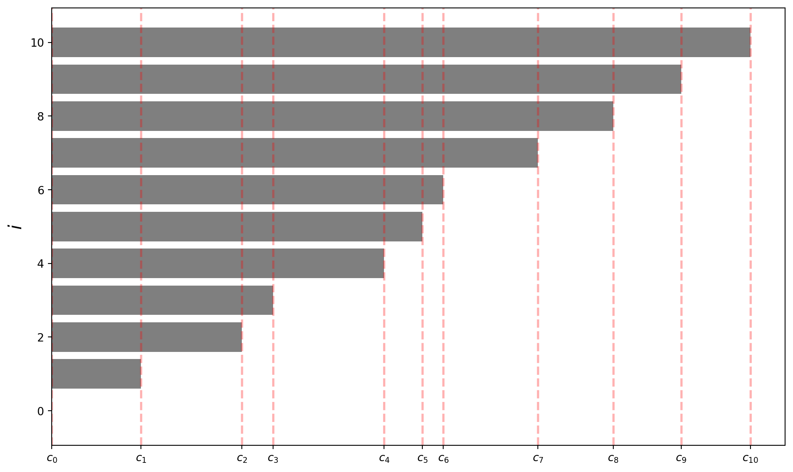
Sampling from the Poisson distribution
The Poisson distribution is a pmf over the sample space \(\mathbb N\), i.e. \(x=0, 1, 2, \ldots\) and defined as
\[ p(x) = \frac{\lambda^x}{x!} e^{-\lambda}, \,\,\, \lambda > 0 \tag{16}\]
the parameter \(\lambda\) is called rate. The mean and variance of \(x\) are
\[ \mathbb E[x] = \lambda, \,\,\, \text{var}[x] = \lambda\,. \]
# Sampling from the Poisson distribution
# - this is how it's *not* done in practice -
from scipy.special import gammaln
def sample_poisson(S, rate=1., return_cdf=True):
"""
S : number of samples
rate : rate of Poisson distribution
"""
# uniform random numbers
u = np.random.random(int(S))
i = np.argsort(u)
# array storing samples
x = -np.ones(u.shape, dtype='i')
# building up cdf
cdf = [0.]
# stepping through sorted list of uniform random numbers
k = 0
for v, j in zip(u[i], i):
while v > cdf[k]:
k += 1
pmf = np.exp(k * np.log(rate) - rate - gammaln(k+1))
cdf.append(cdf[-1] + pmf)
x[j] = k
if return_cdf:
return x, np.array(cdf)
return x
rate = 10.
limits = 0., 10 * rate**0.5
x, cdf = sample_poisson(1e3, rate)
k = np.arange(len(cdf))
pmf = np.exp(k * np.log(rate) - rate - gammaln(k+1))
bins, hist = np.unique(x, return_counts=True)
hist = hist.astype('d') / hist.sum()
settings = dict(xlim=limits, xlabel=r'bin $i$')
fig, ax = plt.subplots(1, 2, figsize=(8, 4), subplot_kw=settings)
ax[0].plot(k, pmf, color='r', lw=2)
ax[0].bar(k, cdf, color='lightgrey')
ax[0].set_ylabel(r'cdf $\sum_{k=1}^i\, p_k$')
ax[1].bar(bins, hist, color='k', alpha=0.2)
ax[1].plot(k, pmf, color='r')
fig.tight_layout()
Variable transformation methods
We will now move on to continuous sample spaces. Assuming that we can generate uniform random samples from \(\mathcal U(0, 1)\), how can we use these samples to generate samples from a non-uniform distribution \(p(x)\)? In the last section we saw how to do this for pmfs (although it might not be practical for large finite models such as Ising models).
Let’s first look at the simplest version of sampling from a pdf where the sample space is one-dimensional. So we are looking for ways of how to transform a single uniformly distributed variable \(u \sim \mathcal U(0, 1)\) to \(x \sim p(x)\). To design such as method, we first need to understand how probability distributions transform under parameter transformations.
Transformation of probability distributions
Let \(h\) be a one-to-one mapping between two one-dimensional sample spaces \(h: \mathcal X \to \mathcal Y\), and \(h^{-1}\) is the inverse function. If \(x\sim p_x(x)\), what is the distribution \(p_y(y)\) of \(y=h(x)\)? To answer this question let us compute the distribution \(p_y\):
\[ p_y(y) = \int_{\mathcal X} \delta(y - h(x))\, p_x(x)\, dx = \int_{\mathcal X} \frac{1}{|h'(x)|} \delta(x - h^{-1}(y))\, p_x(x)\, dx = \frac{p_x(h^{-1}(y))}{|h'(h^{-1}(y))|} \tag{17}\]
where we used the transformation property of the delta distribution. The transformation rule guarantees that normalized pdfs transform into normalized pdfs.
This result can be generalized to multiple dimensions. Let \(h\) be an invertible one-to-one mapping between two \(D\) dimensional sample spaces. Assume further that \(h\) is continuously differentiable such that the Jacobian
\[ \nabla h(x) = \left(\frac{\partial h_i(x)}{\partial x_j} \right)_{i,j} \]
is everywhere invertible in \(\mathcal X\), i.e. \(\text{det}(\nabla h(x)) \not= 0\) for all \(x\in \mathcal X\). Then \(y=h(x)\) has density
\[ p_y(y) = \left\{ \begin{array}{c c} p_x(h^{-1}(y)) \, |\text{det}(\nabla h^{-1})(y)|, & y \in h(\mathcal X) \\ 0, & y \notin h(\mathcal X) \end{array}\right. \]
Inversion method
The inversion method is a simple variable transformation method. Let \(p(x)\) be a pdf over a sample space \(\mathcal X \subset \mathbb R\), then the cumulative distribution function (cdf) is:
\[ P(y) = \Pr(x \le y) = \mathbb E_p[x \le y] = \int^y_{-\infty} p(x)\, dx \tag{18}\]
this is the continuous analog of \(c_i\) defined above in the section on sampling discrete models. By construction, \(P(x) \in [0, 1]\) for \(x \in\mathcal X\). \(P(x)\) is continuous and strictly increasing and therefore invertible. Inverse transform sampling uses the following mathematical fact:
\[ x = P^{-1}(u) \sim p(x)\,\,\,\text{for}\,\,\, u\sim\mathcal U(0,1) \tag{19}\]
That is, we can generate random samples from \(p(x)\) by generating uniformly distributed random numbers in \([0, 1]\) and map them to \(\mathcal X\) with the inverse of the cdf \(P^{-1}\).
To see that this is a valid sampling procedure, let us compute the distribution of \(x=P^{-1}(u)\) using the transformation rule (Eq. Equation 17): We have
\[ \frac{d\, P^{-1}(u)}{d\, u} = \frac{1}{P'(P^{-1}(u))} = \frac{1}{p(P^{-1}(u))} \]
Plugging this expression into (Eq. Equation 17) yields
\[ p_x(x) = \frac{p_u(P(x))}{(P^{-1})'(P(x))} = \frac{1}{1 / p(x)} = p(x) \]
Example: Let us apply inverse transformation sampling to the exponential distribution
\[ p(x) = \lambda \, \exp\{-\lambda x\}, \,\,\, \lambda > 0, \, \mathcal X = \mathbb R_+ \]
The cumulative distribution function is
\[ \text{cdf}(x) = \int^x_0 \lambda e^{-\lambda t} \, dt = 1 - e^{-\lambda x} \]
and its inverse:
\[ \text{cdf}^{-1}(u) = - \frac{1}{\lambda} \log(1-u) \]
Since \(1-u \sim \mathcal U(0,1)\) if \(u \sim \mathcal U(0,1)\), we can generate exponentially distributed random variables as follows:
\[ x^{(s)} = - \frac{\log u^{(s)}}{\lambda}, \,\,\, u^{(s)} \sim \mathcal U(0,1) \]
Some more examples:
| name | pdf \(p(x)\) | cdf \(P(x)\) | inversion |
|---|---|---|---|
| Exponential | \(\lambda e^{-\lambda x}\) | \(1 - e^{-\lambda x}\) | \(-\log(u)/\lambda\) |
| Cauchy | \(\frac{\sigma}{\pi(x^2 + \sigma^2)}\) | \(\frac{1}{2} + \frac{1}{\pi} \arctan(x/\sigma)\) | \(-\sigma\tan(\pi(u-0.5))\) |
| Rayleigh | \(\frac{x}{\sigma^2} e^{-x^2/2\sigma^2}\) | \(1- e^{-x^2/2\sigma^2}\) | \(\sigma\,\sqrt{-2\log u}\) |
| Triangular | \(2 (1 - x/a)/a, \, x\in[0,a]\) | \(2 (x - x^2/2a)\) | \(a(1-\sqrt{u})\) |
| Pareto | \(a\,b^a / x^{a+1}, \, x\ge b\) | \(1-(b/x)^a\) | \(b\, u^{-1/a}\) |
# some examples
class PDF:
def __init__(self, **params):
for name, value in params.items():
setattr(self, name, float(value))
def sample(self, n=None):
u = np.random.random(int(n))
return self._invert(u)
def __call__(self):
pass
def _invert(self, u):
pass
class Exponential(PDF):
def __init__(self, _lambda=1.):
super().__init__(_lambda=_lambda)
def __call__(self, x):
return self._lambda * np.exp(-self._lambda*x)
def _invert(self, u):
return -np.log(u)/self._lambda
@property
def support(self):
return 0., 5 / self._lambda
class Cauchy(PDF):
def __init__(self, sigma=1.):
super().__init__(sigma=sigma)
def __call__(self, x):
return self.sigma / np.pi / (x**2 + self.sigma**2)
def _invert(self, u):
return self.sigma * np.tan(np.pi*(u-0.5))
@property
def support(self):
return -10., +10.
class Rayleigh(PDF):
def __init__(self, sigma=1.):
super().__init__(sigma=sigma)
def __call__(self, x):
t = (x/self.sigma)
return t * np.exp(-0.5*t**2) / self.sigma
def _invert(self, u):
return self.sigma * np.sqrt(-2*np.log(u))
@property
def support(self):
return 0., 5 * self.sigma
class Triangular(PDF):
def __init__(self, a=1.):
super().__init__(a=a)
def __call__(self, x):
return 2 * (1 - x/self.a) / self.a
def _invert(self, u):
return self.a * (1-np.sqrt(u))
@property
def support(self):
return 0., self.a
class Pareto(PDF):
def __init__(self, a=1., b=1.):
super().__init__(a=a, b=b)
def __call__(self, x):
return self.a * self.b**self.a / (x**(self.a+1) + 1e-100) * (x>=self.b)
def _invert(self, u):
return self.b / u**(1/self.a)
@property
def support(self):
return 0., 10 * self.b
return self.b, 10 * self.b
pdfs = [Exponential(_lambda=0.5), Cauchy(), Rayleigh(sigma=2.),
Triangular(a=2.), Pareto()]
S = int(1e4)
kw = dict(bins=20, color='k', alpha=0.1, density=True)
fig, ax = plt.subplots(1, len(pdfs), figsize=(12, 3))
for a, pdf in zip(ax, pdfs):
x = np.linspace(*(pdf.support + (1000,)))
y = pdf.sample(S)
y = y[(y > x.min()) & (y < x.max())]
a.set_title(pdf.__class__.__name__)
a.plot(x, pdf(x), lw=2, color='k')
a.hist(y, **kw)
a.set_xlim(*pdf.support)
fig.tight_layout()In principle, the inverse transformation approach (Eq. Equation 19) generalizes to multiple dimensions (see, for example, Murray Rosenblatt: Remarks on a Multivariate Transformation):
\[ % \begin{aligned} P_1(x_1') &= \Pr(x_1 < x_1') = \int \mathbb 1(x_1 \le x_1')\, p(x_1, \ldots, x_D)\, dx_1 \cdots dx_D \\ % P_2(x_2'\mid{}x_1) &= \Pr(x_2 < x_2' \mid{}x_1) = \int \mathbb 1(x_2 \le x_2')\, p(x_2, \ldots, x_D\mid{}x_1)\, dx_2 \cdots dx_D \\ &\vdots \\ P_D(x_D'\mid{}x_{D-1}, \ldots, x_{1}) &= \Pr(x_D < x_D'\mid{}x_{D-1}, \ldots, x_{1}) = \int \mathbb 1(x_D \le x_D')\, p(x_D\mid{}x_{D-1}, \ldots, x_{1})\, dx_D \end{aligned} \tag{20}\]
However, only in very rare cases is it possible to compute the multivariate cumulative distribution function in higher dimensional spaces, let alone invert it in closed form.
So this expression is mostly of theoretical interest to us. Nevertheless, it is curious to see that multivariate pdfs can in principle be mapped to a uniform distributions over the hypercube:
\[ u_i = P_i(x_i\mid{}x_{i-1}, \ldots x_{1}), \,\,\, i=1, \ldots, D \]
By construction \(u=(u_1, \ldots, u_D) \in [0, 1]^D\), and the pdf of \(u\) is
\[ p_u(u) = p_x(x(u)) \prod_i \biggl|\frac{d u_i}{d x_i}\biggr|^{-1} = 1 \]
since the Jacobian matrix is triagonal (so its determinant is just a product over the diagonal elements) and
\[ p(x_1, \ldots, x_D) = p(x_D \mid{} x_{D-1}, \ldots, x_{1}) \cdots p(x_2\mid{}x_1) \, p(x_1) \]
Variable transformation method
Sometimes one can find a transformation of the sample space such that the new distribution is easier to sample. A specific example is the Box-Muller method for generating samples from a standard Gaussian distribution:
\[ p(x) = \frac{1}{\sqrt{2\pi}} \exp\bigl\{-x^2/2\bigr\} \]
where \(x \in \mathbb R\). The first trick is to make the problem seemingly more complicated by transforming it to a two-dimensional distribution by introducing \(y\) which also follows a standard Gaussian distribution. That is,
\[ p(x,y) = \frac{1}{2\pi} \exp\bigl\{-(x^2+y^2)/2 \bigr\}\, . \]
Because \(p(x, y)\) depends on \(x\) and \(y\) only through their distance from the origin \(r = \sqrt{x^2 + y^2}\), it makes sense to transform \((x, y)\) to polar coordinates:
\[ \begin{pmatrix} x \\ y \end{pmatrix} = \begin{pmatrix} r\cos\varphi \\ r\sin\varphi \end{pmatrix} \]
with the new sample space \([0, \infty) \times [0, 2\pi]\). The Jacobian of the parameter transformation is
\[ \frac{\partial (x, y)}{\partial (r, \varphi)} = \begin{pmatrix} \cos\varphi & -r\sin\varphi \\ \sin\varphi & r\cos\varphi \\ \end{pmatrix} \]
with determinant \[ \left|\frac{\partial (x, y)}{\partial (r, \varphi)}\right| = r \]
Therefore,
\[ p(r, \varphi) = \frac{r}{2\pi} e^{-r^2/2} = p(r)\, p(\varphi) \]
with \(p(\varphi) = \frac{1}{2\pi} \mathbb 1\bigl(\varphi\in[0, 2\pi]\bigr)\).
The cdf of \(p(r)\) is \[ \int_0^r t e^{-t^2/2}\, dt = e^{-t^2/2} \biggl|_r^0 \biggr. = 1 - e^{-r^2/2} \]
We can obtain a random sample from \(p(x, y)\) by first generating two uniform random numbers \(u, v \in \mathcal U(0,1)\) and then letting \(r = \sqrt{-2\log(1 - u)}\) and \(\varphi=2\pi v\) from which we obtain:
\[ x = \sqrt{-2\log(u)}\cos(2\pi v),\,\,\, y = \sqrt{-2\log(u)}\sin(2\pi v) \]
where we used the fact that \(1-u \in\mathcal U(0,1)\) if \(u\in \mathcal U(0,1)\).
# Box Muller method
def sample_gaussian(S):
"""
Sample standard Gaussian distribution using Box-Muller
"""
u, v = np.random.random(size=(2, int(S)))
r = np.sqrt(-2*np.log(u))
phi = 2 * np.pi * v
return r * np.cos(phi), r * np.sin(phi)
S = 1e4
x, y = sample_gaussian(S)
t = np.linspace(-1., 1., 1000) * 5
p = np.exp(-0.5*t**2) / np.sqrt(2*np.pi)
kw = dict(bins=100, color='k', alpha=0.2, density=True)
fig, ax = plt.subplots(1, 2, figsize=(8, 4),
subplot_kw=dict(yticks=[0., 0.1, 0.2, 0.3, 0.4]))
ax[0].hist(x, **kw)
ax[0].set_xlabel(r'$x$')
ax[1].hist(y, **kw)
ax[1].set_xlabel(r'$y$')
for a in ax:
a.plot(t, p, lw=3, alpha=0.5, color='r')
fig.tight_layout()
Multivariate Gaussians
By using a variable transformation, we can use samples from univariate standard Gaussians to generate samples from general multivariate Gaussians:
\[ x \sim \mathcal N(\mu, \Sigma) = \frac{1}{|2\pi\Sigma|^{1/2}} \exp\left\{-\frac{1}{2} (x-\mu)^T\Sigma^{-1} (x-\mu) \right\} \]
where the covariance matrix \(\Sigma\) is positive definite and therefore has a Cholesky decomposition \(\Sigma=LL^T\) with a lower triangular matrix \(L\).
Now consider \(y\sim \mathcal N(0, I)\) (these can be generated with the Box-Muller method) and the linear transformation
\[ x = \mu + L y\,\,\, \Rightarrow \,\,\, y = L^{-1} (x-\mu). \]
The Jacobian of this transform is \(L\) with determinant \(|L| = \sqrt{|\Sigma|}\). Thus the distribution of \(x\) is
\[ p_x(x) = (2\pi)^{-D/2} \exp\left\{-\frac{1}{2} (x-\mu)^T (L^{-1})^T L^{-1} (x-\mu) \right\} / \sqrt{|\Sigma|} = \mathcal N(\mu, \Sigma) \]
since \((L^{-1})^T L^{-1} = (L^T)^{-1} L^{-1} = (LL^T)^{-1} = \Sigma^{-1}\).
# 2d example
# parameters of a 2d Gaussian
sigma1, sigma2, rho = 1., 3., 0.7
Sigma = np.array([[sigma1**2, rho *sigma1 * sigma2],
[rho * sigma1 * sigma2, sigma2**2]])
L = np.linalg.cholesky(Sigma)
mu = np.array([1., -1.])
# transformation of the grid
grid1 = np.reshape(np.mgrid[-1.:1.:10j,-1:+1.:10j], (2, -1)).T
limits = (-5., 5.)
c = plt.cm.viridis(np.linspace(0., 1., len(grid1)))
# sampling using a linear transformation
S = int(1e3)
x = np.random.standard_normal((S, 2))
y = x.dot(L.T) + mu
# evaluate 2d Gaussian on a grid
axes = [np.linspace(yy.min(), yy.max(), 100) for yy in y.T]
grid = np.reshape(np.meshgrid(*axes), (2, -1)).T
prob = np.exp(-0.5 * np.sum(np.square((grid-mu).dot(np.linalg.inv(L).T)), 1))
prob = prob.reshape(len(axes[0]), len(axes[1]))
# show initial distributions and its transformed version
kw = dict(s=20, color='k', alpha=0.2)
fig, ax = plt.subplots(2, 2, figsize=(8, 8), sharex='all', sharey='all')
ax[0, 0].scatter(*grid1.T, c=c)
ax[0, 1].scatter(*(grid1.dot(L.T) + mu).T, c=c)
ax[1, 0].scatter(*x.T, **kw)
ax[1, 1].scatter(*y.T, **kw)
ax[1, 1].scatter(*mu, s=100, color='r')
ax[1, 1].contour(axes[0], axes[1], prob)
xmax = 7
for a in ax.flat:
a.set_xlim(-xmax, xmax)
a.set_ylim(-xmax, xmax)
fig.tight_layout()Lecture 3: Rejection and Importance Sampling
Outline
- More direct sampling methods
- Rejection sampling
- Importance sampling
Recap
Our goal is to compute \(\mathbb E_p[f]\) for some probabilistic model \(p\). Most inference tasks can be reduced to such sums or integrals
Monte Carlo approximation: \(\mathbb E_p[f] \approx \hat f_S = \frac{1}{S} \sum_{s=1}^S f(x^{(s)})\) where \(x^{(s)} \sim p(x)\).
Properties: unbiased (\(\mathbb E[\hat f_S] = \mathbb E_p[f]\)) and \(\text{var}[\hat f_S] = \frac{\text{var}[f]}{S}\)
Monte Carlo errors shrink with \(1/\sqrt{S}\), no dependence on dimension \(D\), but factor \(\text{var}[f]\) can depend on \(D\) in an unfavorable fashion (hypersphere example)
Correct sampling means that approximate probability \(\hat p_S(x) = \frac{1}{S} \sum_s \delta(x - x^{(s)}) \to p(x)\) for \(S\to\infty\) (“histogram over samples approximates true model”). But how to sample?
Uniformly distributed samples can be generated with pseudo-random number generators such as the linear congruential generator. These have their own subtleties…
Direct sampling is possible via variable transformation methods that utilize the transformation rule: \(p_y(y) = p_x(h^{-1}(y)) / |\nabla h(h^{-1}(y))|\)
Inversion method: \(h(x) = P(x) = \int_{-\infty}^x p(x')\, dx'\) (cumulative distribution function)
Some examples of transformation methods: Box-Muller \((x, y) = r (\cos\varphi, \sin\varphi)\), multivariate Gaussians
Sampling uniformly from the hypersphere
The \(D\)-dimensional standard Gaussian distribution \(\mathcal N(0, I)\) can be used to sample from the hypersphere in \(D\)-dimensional space \(\mathbb S^{D-1} = \{ x \in \mathbb R^D : \|x\| = 1\}\). To see this, consider
\[ \mathcal N(0, I) = (2\pi)^{-D/2} \exp\bigl\{-\|x\|^2/2 \bigr\} \to (2\pi)^{-D/2}\, r^{D-1} e^{-r^2/2} \mathbb 1(\|x\| = 1) \]
That is, the \(D\)-dimensional standard Gaussian distribution is spherically symmetric and therefore
\[ x/\|x\| \sim \mathcal U(\mathbb S^{D-1})\,\,\, \text{where}\,\,\, x \sim \mathcal N(0, I) \]
# sampling from the hypersphere
import numpy as np
import matplotlib.pylab as plt
def sample_sphere(S, D=2):
"""
S : number of samples
D : dimension of embedding space
"""
x = np.random.standard_normal((D, S))
return (x/np.linalg.norm(x, axis=0)).T
x = sample_sphere(10000)
angle = np.arctan2(x[:,1], x[:,0])
kw = dict(color='k', alpha=0.2, s=20)
fig, ax = plt.subplots(1, 2, figsize=(8, 4))
ax[0].scatter(*x[:200].T, **kw)
ax[1].hist(angle, bins=30, density=True, alpha=0.2, color='k')
ax[1].set_xlabel('angle')
fig.tight_layout()
Sampling from the unit ball
Using samples from the \((D-1)\)-sphere we can also easily sample from the \(D\)-dimensional unit ball \(\mathbb B^D = \{x\in\mathbb R^D : \|x\| \le 1\}\). Every element in \(\mathbb B^D\) can be decomposed into
\[ x = r\, u \in \mathbb B^D\,\,\,\text{where}\,\,\, u\in\mathbb S^{D-1},\, r\in[0, 1] \]
The distribution of \(r\) follows from the surface area of \(\mathbb S^{D-1}\) which scales with \(r^{D-1}\), therefore:
\[ p(r, u) = D\, r^{D-1}\, \mathbb 1(\|u\| = 1) \]
The cdf of the radial component is \(r^D\) and we obtain the following sampling rule:
\(u^{(s)}=x^{(s)}/\|x^{(s)}\|\) where \(x^{(s)} \sim \mathcal N(0, I_D)\)
\(r^{(s)} = (v^{(s)})^{1/D}\) where \(v^{(s)} \sim \mathcal U(0, 1)\)
then \(r^{(s)} u^{(s)} \sim \mathcal U(\mathbb B^D)\)
# sampling from the unit ball
def sample_ball(S, D=2):
"""
Sampling from the D-ball
S : number of samples
D : dimension of embedding space
"""
# sample from hypersphere
x = np.random.standard_normal((D, int(S)))
u = x / np.linalg.norm(x, axis=0)
# sample radius
r = np.random.random(int(S))**(1/D)
return (u*r).T
x = sample_ball(10000)
angle = np.arctan2(x[:,1], x[:,0])
kw = dict(color='k', alpha=0.2, s=20)
fig, ax = plt.subplots(1, 2, figsize=(8, 4))
ax[0].scatter(*x[:1000].T, **kw)
ax[1].hist(angle, bins=30, density=True, alpha=0.2, color='k')
ax[1].set_xlabel('angle')
fig.tight_layout()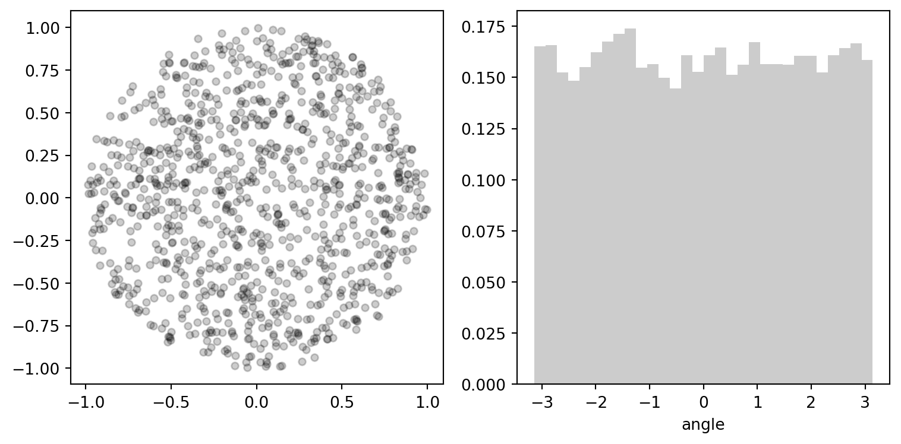
Sampling from a radially symmetric distribution
It is straightforward to generalize sampling from a unit ball to any spherically symmetric distribution. A spherically symmetric distribution over \(D\) continuous variables has the form:
\[ p(x) \propto f(\|x\|) \]
where \(f(r)\) is defined for \(r\in\mathbb R_+\). A convenient parameterization are spherical coordinates, resulting in the distribution
\[ p(x) \to r^{D-1}f(r)\, \mathcal{U}(\mathbb S^{D-1}) \]
We know how to generate uniform samples from \(\mathcal U(\mathbb S^{D-1})\). The remaining problem is to sample from
\[ p(r) \propto r^{D-1} f(r),\,\,\, r\ge 0 \]
So we have reduced a \(D\)-dimensional sampling problem to a one-dimensional problem.
Sampling from an elliptically symmetric distribution
A similar technique can be used to generalize sampling from spherically symmetric distributions to elliptically symmetric distributions of the form
\[ p(x) \propto f\bigl((x-b)^T\!\!A(x-b)\bigr) \]
where \(x, b \in \mathbb R^D\) and \(A\in\mathbb R^{D\times D}\) is positive definite; \(f(r)\ge 0\) is an (unnormalized) radial pdf defined for \(r\in\mathbb R_+\).
Using known relations between probability distributions for sampling
The Erlang distribution, a special version of the Gamma distribution, has the functional form
\[ p(x\mid{}k, \lambda) = \frac{\lambda^k}{\Gamma(k)} x^{k - 1} e^{-\lambda x}, \, k \in \mathbb N, \, x > 0,\, \lambda > 0 \tag{21}\]
We can use exponentially distributed random variables \(z_i \sim \lambda e^{-\lambda z_i}, i=1, \ldots, k\) to produce an Erlang variate. Define \(z_i = x y_i\) with \(y_i\in[0, 1]\) for \(1 \le i \le k-1\) and \(z_k = x \bigl(1-\sum_{i=1}^{k-1} y_i\bigr)\), then \(x = \sum_i z_i\). The Jacobian of the parameter transform is
\[ \frac{\partial (z_1, \ldots, z_k)}{\partial (x, y_1, \ldots, y_{k-1})} = \begin{pmatrix} y_1 & x & 0 & \cdots & 0 \\ y_2 & 0 & x & \cdots & 0 \\ \vdots & \vdots & \vdots & \ddots & \vdots \\ y_{k-1} & 0 & 0 & \cdots & x \\ 1- \sum_i y_{i} & -x & -x & \cdots & -x \\ \end{pmatrix} \]
with determinant
\[ \left|\frac{\partial (z_1, \ldots, z_k)}{\partial (x, y_1, \ldots, y_{k-1})}\right| \propto x^{k-1} \]
Therefore:
\[ x \sim x^{k-1} e^{-\lambda x} \]
# sampling from Erlang
from scipy.special import gammaln
def sample_erlang(S, k=1, beta=1.):
u = np.random.random((int(S), k))
z = - np.log(u) / beta
x = z.sum(1)
return x
k = 10
beta = 2.
S = 1e4
x = sample_erlang(S, k=k, beta=beta)
t = np.linspace(0., x.max(), 1000)
p = k * np.log(beta) + (k-1) * np.log(t+1e-100) - beta * t - gammaln(k)
p = np.exp(p)
fig, ax = plt.subplots(1, 1, figsize=(5, 5))
ax.plot(t, p, color='r', lw=2)
ax.hist(x, bins=50, color='lightgrey', density=True)
fig.tight_layout() 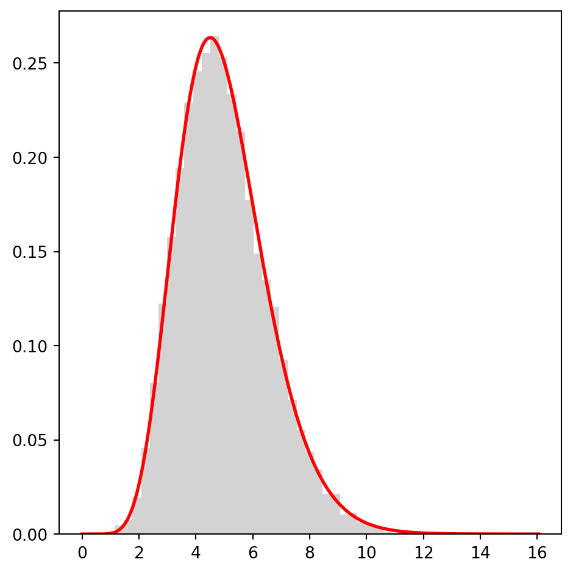
There are many more relationships between standard univariate probability distributions that can be exploited for sampling (an interactive version of the following Figure can be found at Leemis & Mc Queston: Univariate Distribution RelationShips):

Further reading
Donald Knuth: The Art of Computer Programming, Vol. 2, Chap. 1
Luc Devroye: Non-Uniform Random Variate Generation
Rejection sampling
Direct sampling methods are specifically designed for particular target distributions. For complex probabilistic models such as the Ising model, it will not be possible to use these methods. We will now discuss methods that can be applied to more general probabilistic models.
Rejection sampling is an early sampling approach that has been developed by von Neumann. The idea is to use a helper distribution \(q\) from which we can sample easily in order to sample from a more complicated model \(p\). To be a valid proposal distribution, \(q\) must satisfy
\[ p(x) \le M q(x) \tag{22}\]
for a constant \(M\) which implies \(M\ge 1\), since \(p\) and \(q\) are normalized pdfs. Moreover, the support of \(p\) should be contained in the support of the proposal distribution \(q\). Let’s define the ratio
\[ r(x) := \frac{p(x)}{M q(x)} \tag{23}\]
which is smaller than or equal to 1 for all \(x\) with \(q(x)>0\), otherwise we set \(r(x) = 1\).
Algorithm: Rejection sampling
The algorithm produces random samples \(x^{(s)}\) by iterating over the following steps until the desired number of samples \(S\) has been generated:
Draw \(x \sim q(x)\)
Draw \(u \sim \mathcal U(0, 1)\)
\(r \gets \frac{p(x)}{Mq(x)}\)
If \(u < r\), then
- \(x^{(s)} \gets x\)
- \(s \gets s+1\).
If \(s < S\), go to 1.
Example: Sampling a Gaussian with a Cauchy proposal
The standard Gaussian distribution is
\[ p(x) = \frac{1}{\sqrt{2\pi}}\, e^{-x^2/2} \]
and the Cauchy distribution
\[ q(x) = \frac{1}{\pi} \frac{1}{1 + x^2}\, . \]
The Cauchy distribution can be sampled with the inversion method: \(x^{(s)} = -\tan(\pi u^{(s)}), \, u^{(s)} \sim \mathcal U(0, 1)\) (see table above).
To show that the Cauchy distribution is a valid proposal distribution, we first have to bound the ratio
\[ f(x) = \frac{p(x)}{q(x)} = \sqrt{\frac{\pi}{2}}\, (1 + x^2)\, e^{-x^2/2}\, . \]
The first derivative is \[ f'(x) = \sqrt{\frac{\pi}{2}}\, x\, (1 - x^2)\, e^{-x^2/2} \] with zeros \(x=-1, 0, 1\). The second derivative \(f''(x) = \sqrt{\frac{\pi}{2}}\, (x^4 - 4x^2 +1)\, e^{-x^2/2}\) is positive at \(x=0\) and negative at \(x=\pm 1\). Therefore, \(x=\pm 1\) are the locations of the maxima of \(f\), and the upper bound is \(M := f(1) = \sqrt{2\pi/e} \approx 1.52\).
def sample_cauchy(S):
u = np.random.random(int(S))
return -np.tan(np.pi * u)
def calc_ratio(t):
return 0.5 * (1 + t**2) * np.exp(-0.5 * t**2) * np.sqrt(np.e)
S = int(1e3)
M = np.sqrt(2*np.pi/np.e)
y = sample_cauchy(M*S)
r = calc_ratio(y)
u = np.random.random(y.shape)
Mq = M / (1 + y**2) / np.pi
t = np.linspace(-1., 1., 1000) * 5
q = 1 / (1 + t**2) / np.pi
p = np.exp(-0.5 * t**2) / np.sqrt(2*np.pi)
M1.520346901066281fig, ax = plt.subplots(1, 3, figsize=(12, 4), sharex=True,
sharey=True)
#
ax[0].fill_between(t, t*0., M*q, color='b', alpha=0.1)
ax[0].plot(t, M*q, color='b', lw=2, ls='--', label=r'scaled Cauchy $Mq$')
ax[0].plot(t, p, color='r', lw=2, ls='-', label=r'Gaussian $p$')
ax[0].legend(loc=5)
#
ax[1].fill_between(t, t*0., M*q, color='b', alpha=0.1)
ax[1].scatter(y[u<r], (Mq*u)[u<r], color='r', s=10, alpha=0.5)
ax[1].scatter(y[u>=r], (Mq*u)[u>=r], color='b', s=10, alpha=0.5)
ax[1].plot(t, M*q, color='b', lw=2, ls='--', label=r'scaled Cauchy $Mq$')
ax[1].plot(t, p, color='r', lw=2, ls='-', label=r'Gaussian $p$')
#
ax[2].hist(y[u<r], bins=50, color='lightgrey', density=True)
ax[2].plot(t, p, color='r', lw=2, ls='-')
#
ax[2].set_xlim(-5., 5)
ax[2].set_ylim(0., 0.5)
fig.tight_layout()Why does rejection sampling work?
Let’s formalize the rejection sampling algorithm. To this end, we introduce a binary random variable \(a\in\{0, 1\}\) indicating if a proposal \(x \sim q(x)\) has been accepted or not. The probability of being accepted, \(a=1\), or rejected, \(a=0\), is
\[ p(a=1\mid{}x) = r(x), \,\,\ p(a=0\mid{}x) = 1 - r(x)\, . \]
This means that \(a\) is a Bernoulli variable:
\[ p(a\mid{}x) = \bigl[r(x)\bigr]^a \bigl[1-r(x)\bigr]^{1-a}, \,\,\, a\in\{0, 1\}\, . \]
The joint distribution of \(x\) and \(a\) is
\[ p(a, x) = p(a\mid{}x)\, q(x) \]
since \(x\sim q\). The accepted samples are those for which \(a=1\). These samples follow the conditional distribution \(p(x\mid{}a=1)\). That is
\[ x^{(s)} \sim p(x\mid{}a=1)\, . \]
It is straight forward to compute this distribution. We have \(p(x\mid{}a=1) = p(x, a=1)\, /\, p(a=1)\). We need to compute the marginal probability \(p(a=1)\):
\[ p(a=1) = \int p(x, a=1)\, dx = \int q(x)\, r(x)\, dx = \int q(x)\, \frac{p(x)}{Mq(x)}\, dx = \frac{1}{M} \tag{24}\]
since \(p\) is normalized. Equation (Equation 24) tells us that the average probability to propose an acceptable sample is \(M^{-1}\). We can now compute the desired conditional distribution \(p(x\mid{}a=1)\):
\[ p(x\mid{}a=1) = \frac{p(x, a=1)}{p(a=1)} = M q(x)\, r(x) = M q(x)\, \frac{p(x)}{M q(x)} = p(x)\, . \]
Waiting time before acceptance
We can also compute the number of attempts it needs to generate an acceptable proposal. Let’s call this number \(T\). The probability that a proposal is accepted after \(T-1\) unsuccessful trials is
\[ \Pr(T) = [p(a=0)]^{T-1} p(a=1) = [1-M^{-1}]^{T-1} M^{-1}, \,\,\, T\in \{1, 2, 3, \ldots \} \]
which is the probability that the first \(T-1\) samples are rejected (\(a^{(t)}=0, \, t<T\)) and the last sample is accepted \(a^{(T)}=1\). This distribution is a geometric distribution and normalized since
\[ \sum_{T\ge 1} \Pr(T) = \sum_{T\ge 1} [1-M^{-1}]^{T-1}\, M^{-1} = M^{-1} \sum_{T\ge 0} [1-M^{-1}]^{T} = \frac{M^{-1}}{1 - (1 - M^{-1})} = 1 \]
using the summation rules for geometric progressions and geometric series.
The expected time one has to wait until an acceptable sample is proposed is
\[ \mathbb E[T] = \sum_{T\ge 1} T\, \Pr(T) = M^{-1} \sum_{T\ge 1} T\, [1-M^{-1}]^{T-1} = 1 + M^{-1} \sum_{T \ge 0} T \, [1-M^{-1}]^T\, . \]
To compute the last series, let us rewrite it as \(\sum_{T\ge 0} T e^{-\lambda T}\) where \(\lambda = - \log(1-M^{-1}) > 0\):
\[ \sum_{T\ge 0} T e^{-\lambda T} = - \sum_{T\ge 0} \frac{d}{d\lambda} e^{-\lambda T} = - \frac{d}{d\lambda} \sum_{T\ge 0} e^{-\lambda T} = - \frac{d}{d\lambda} \frac{1}{1 - e^{-\lambda}} = \frac{e^{-\lambda}}{(1 - e^{-\lambda})^2}\, . \]
By substituting \(e^{-\lambda} = 1-M^{-1}\) we obtain
\[ \mathbb E[T] = 1 + M^{-1} \frac{1-M^{-1}}{(1 -(1-M^{-1}))^2} = 1 + M^{-1} \frac{1-M^{-1}}{M^{-2}} = M\, . \]
The larger \(M\), the longer is the average time that we have to wait until a sample is accepted. Therefore, we should try to design an envelope \(Mq(x)>p(x)\) that is as tight as possible.
Let us modify the above code for sampling a Gaussian using Cauchy proposals by allowing \(M\) to be greater than the tightest upper bound \(\sqrt{2\pi/e}\) and investigate the effect on the waiting time:
# tightest bound
M_opt = (2*np.pi/np.e)**(1/2)
def calc_ratio(t, M=M_opt):
return 0.5 * (1 + t**2) * np.exp(-0.5 * t**2) * np.sqrt(np.e) * (M_opt/M)
# evaluate Gaussian and Cauchy distribution
t = np.linspace(-1., 1., 1000) * 5
q = 1 / (1 + t**2) / np.pi
p = np.exp(-0.5 * t**2) / np.sqrt(2*np.pi)
# rejection sampling
S = int(2e4)
fig, ax = plt.subplots(2, 3, figsize=(12, 8), sharex='col')
# M = factor * M_opt
for i, factor in enumerate([2, 4]):
M = factor * M_opt
y = sample_cauchy(S)
r = calc_ratio(y, M)
u = np.random.random(y.shape)
Mq = M / (1 + y**2) / np.pi
# waiting times
T = np.diff(np.nonzero(u<r)[0])
ax[i,0].set_title(r'$M={0}\, \sqrt{{2\pi/e}}$'.format(factor))
ax[i,0].fill_between(t, t*0., M*q, color='b', alpha=0.1)
ax[i,0].plot(t, M*q, color='b', lw=2, ls='--', label=r'scaled Cauchy $Mq$')
ax[i,0].plot(t, p, color='r', lw=2, ls='-', label=r'Gaussian $p$')
ax[i,0].legend()
#
ax[i,1].set_title(r'$M={0}\, \sqrt{{2\pi/e}}$'.format(factor))
ax[i,1].fill_between(t, t*0., M*q, color='b', alpha=0.1)
ax[i,1].scatter(y[u<r], (Mq*u)[u<r], color='r', s=1, alpha=0.5)
ax[i,1].scatter(y[u>=r], (Mq*u)[u>=r], color='b', s=1, alpha=0.5)
ax[i,1].plot(t, M*q, color='b', lw=2, ls='--', label=r'scaled Cauchy $Mq$')
ax[i,1].plot(t, p, color='r', lw=2, ls='-', label=r'Gaussian $p$')
#
times, counts = np.unique(T, return_counts=True)
ax[i,2].bar(times, counts, color='lightgrey')
ax[i,2].set_xlim(0, times.max()+1)
ax[i,2].set_ylim(10, counts.max()*1.1)
ax[i,2].set_xlabel(r'waiting time $T$')
for a in ax[i,:2]:
a.set_xlim(-5, 5.)
a.set_ylim(0., factor/2)
for a in ax[:,2]:
a.set_xlim(0, times.max()+1)
fig.tight_layout()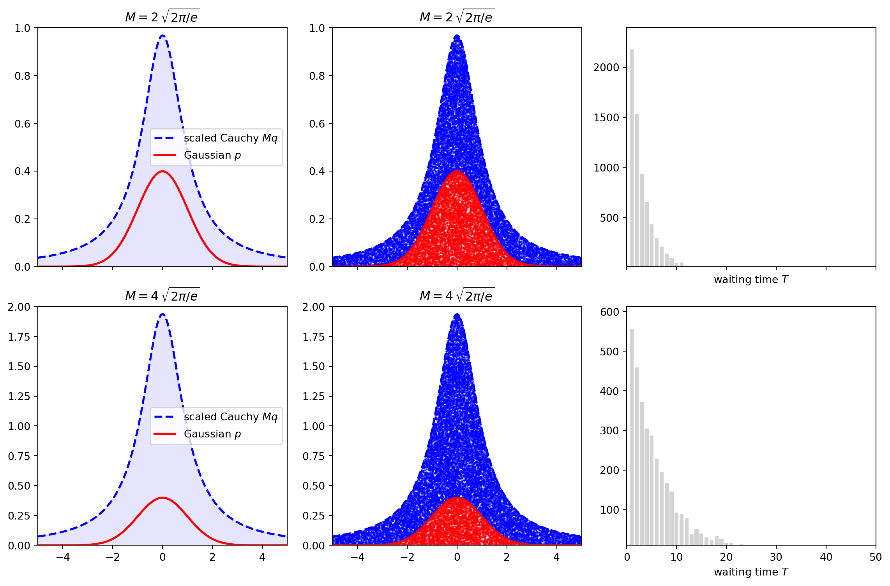
Geometric interpretation
A geometric interpretation of rejection sampling is that we generate points \((x,y)\) under the graph of \(Mq(x)\) in the following fashion: The \(x\) coordinate is drawn from \(q\), and the \(y\) coordinate from a uniform distribution \(y=M q(x) u\) where \(u\sim \mathcal U(0, 1)\):
\[ (x, y) \sim q(x)\, \mathbb 1\bigl(y < Mq(x)\bigr) \]
\((x,y)\) is accepted if \(y < p(x)\) otherwise it is rejected. Therefore, the area under \(Mq\) can be separated into an acceptance region and a rejection region. The value of \(M\) determines the relative size of the rejection and acceptance regions.
from scipy.ndimage import gaussian_filter
t = np.linspace(-1., 1., 1000) * 10
mu = np.array([-2, 5. ])
sigma = np.array([90., 120. ])
w = np.array([0.7, 0.3])
p = 0.
for k in range(len(mu)):
y = t * 0.
y[np.argmin(np.fabs(mu[k]-t))] = 1.
p += gaussian_filter(y, sigma=sigma[k]) * w[k]
p /= p.sum()
q = np.exp(-0.5 * t**2 / 16) + 0.1
q /= q.sum()
M = np.max(p/q) * 1.1
fs = 20
fig, ax = plt.subplots(subplot_kw=dict(xticks=[], yticks=[]))
ax.fill_between(t, p, q*M, color='r', alpha=0.2)
ax.plot(t, q*M, color='r', lw=3, label=r'$Mq$')
ax.fill_between(t, p*0, p, color='b', alpha=0.2)
ax.plot(t, p, color='b', lw=3, label=r'$p$')
ax.annotate('accept', (0.32, 0.2), xycoords='axes fraction', color='b', fontsize=fs)
ax.annotate('reject', (0.55, 0.4), xycoords='axes fraction', color='r', fontsize=fs)
ax.legend(fontsize=fs)
ax.set_frame_on(False)There are multiple factors that influence \(M\). The size of the support of \(q\) has a direct impact on \(M\): The larger the support of \(q\), the larger we have to choose \(M\) to still satisfy the condition \(p(x) \le Mq(x)\), because the probability mass of the proposal distribution is distributed over a larger region and the density \(q\) is scaled down. The tightest \(M\) can be found by maximizing the ratio \(p(x)/q(x)\) over the sample space. In general, this will be a hard optimization problem. But even if we find the tightest value of \(M\), the size of the rejection region will grow exponentially with dimension \(D\).
Rejection sampling scales badly with dimension
Finding tight bounds in high dimensions is very difficult. Moreover, the volume of the rejection region will scale exponentially with dimension. For example, if we sample a \(D\) dimensional Gaussian by using \(D\) Cauchy variates, than each dimension contributes a factor of \(\sqrt{2\pi/e} \approx 1.5\) such that the overall \(M\) scales as \(1.5^D\). As a consequence, the waiting time will scale exponentially with dimension and using rejection sampling will become increasingly inefficient as the size of our probabilistic model grows.
Unnormalized target and proposal distribution
Often, it is not possible to normalize a probabilistic model. So we only know \(p^*(x)\) and \(q^*(x)\) with
\[ \begin{aligned} p(x) &= \frac{p^*(x)}{Z_p}\,\,\,\text{with}\,\,\, Z_p = \int_{\mathcal X} p^*(x)\, dx < \infty\\ q(x) &= \frac{q^*(x)}{Z_q}\,\,\,\text{with}\,\,\, Z_q = \int_{\mathcal X} q^*(x)\, dx < \infty\, . \end{aligned} \]
The condition that has to be satisfied is now
\[ p^*(x) \le M q^*(x)\,\,\, \Rightarrow M \ge Z_p/Z_q\, . \]
In analogy to Eq. (Equation 23), the acceptance probability changes to
\[ r(x) = \frac{p^*(x)}{M q^*(x)} \le 1 \]
Otherwise the sampling procedure and the proof of its validity work in the same fashion:
\[ p(x, a=1) = q(x)\, r(x) = \frac{q^*(x)}{Z_q} \frac{p^*(x)}{M q^*(x)} = \frac{p^*(x)}{MZ_q} \]
and
\[ p(a=1) = \int_{\mathcal X} p(x, a=1)\, dx = \frac{Z_p}{MZ_q}\, . \]
So \[ x^{(s)} \sim \frac{p(x, a=1)}{p(a=1)} = \frac{p^*(x)}{MZ_q}\, \frac{MZ_q}{Z_p} = \frac{p^*(x)}{Z_p} = p(x)\, . \]
Importance sampling
Rejection sampling becomes very inefficient as soon as no tight bound can be found and most samples are rejected. We saw a drastic version of this problem in our attempt to estimate the volume of the \(D\)-ball by accepting or rejecting samples from a hypercube: The acceptance probability is the ratio of the volumes of the \(D\)-ball and the \(D\)-cube and drops to zero with a rate that is exponential in \(D\).
Importance sampling tries to overcome some of these problems by using a strategy that does not reject samples, but weighs them thereby avoiding to “waste” any samples. Otherwise the idea of importance sampling is very similar to rejection sampling: A helper distribution \(q\) (from which we can sample easily) is used to generate samples that are now reweighted rather than accepted or rejected. The weights are chosen such that samples from \(q\) can be used to compute expectations under the target model \(p\).
To derive importance sampling, let us look at the expectation
\[ \mathbb E_p[f] = \int_{\mathcal X} f(x)\, p(x)\, dx = \int_{\mathcal X} f(x)\, \frac{p(x)}{q(x)}\, q(x)\, dx = \int_{\mathcal X} f(x)\, w(x)\, q(x)\, dx = \mathbb E_q[wf]\, . \]
So expectations with respect to \(p\) can be expressed as expectations with respect to \(q\), if samples \(x\) are weighted with \(w(x) = \frac{p(x)}{q(x)}\). The only requirement is
\[ q(x) = 0\,\,\, \Rightarrow\,\,\, f(x)p(x) = 0 \]
which is easier to satisfy than the requirements for rejection sampling.
Algorithm: Importance sampling
The algorithm produces random samples \(x^{(s)}\) and (importance) weights \(w^{(s)}\):
Sample \(x^{(s)} \sim q(x)\) for \(s=1,\ldots, S\).
Compute weights \(w^{(s)} = \frac{p(x^{(s)})}{q(x^{(s)})}\)
Expectation values are then approximated by
\[ \mathbb E_p[f] \approx \hat f_{\text{IS}} := \frac{1}{S} \sum_{s=1}^S w^{(s)} \, f(x^{(s)}) \tag{25}\]
The right hand side can be interpreted as the expectation of \(f\) under the approximate density
\[ \hat p_S(x) = \frac{1}{S} \sum_{s=1}^S w^{(s)} \delta\bigl(x - x^{(s)}\bigr)\, . \tag{26}\]
This is a generalization of the approximate density introduced earlier in Eq. (Equation 5).
Let us again use a Gaussian target and a Cauchy proposal to illustrate the sampling algorithm:
def sample_cauchy(S, lower=-10, upper=10):
u = np.random.random(2*int(S))
x = -np.tan(np.pi * u)
m = (x >= lower) & (x <= upper)
return x[m][:int(S)]
def pdf_gaussian(x):
return np.exp(-0.5*x**2) / np.sqrt(2*np.pi)
def pdf_cauchy(x):
return np.pi / (1 + x**2)
S = int(5e3)
t = np.linspace(-1., 1., 1000) * 5
p = pdf_gaussian(t)
q = pdf_cauchy(t)
x = sample_cauchy(S, -20, 20)
w = pdf_gaussian(x) / pdf_cauchy(x)
kw = dict(xlim = (-8, 8), xlabel = r'$x$')
kw_hist = dict(bins=100, density=True, color='k', alpha=0.2)
fig, ax = plt.subplots(1, 3, figsize=(12, 4), sharex=True, subplot_kw=kw)
#
ax[0].set_title(r'weight $w(x) = p(x) / q(x)$')
ax[0].plot(t, p / q, color='k', lw=3, alpha=0.7)
ax[0].set_ylabel(r'$w(x)$')
#
ax[1].set_title('without importance weights')
ax[1].hist(x, **kw_hist)
#
ax[2].set_title('with importance weights')
ax[2].hist(x, weights=w/S, **kw_hist)
#
for a in ax[1:]:
a.plot(t, p, color='r', lw=2, label=r'target $p$')
a.legend()
#
fig.tight_layout()
Properties of importance sampling
The importance sampling estimator (Eq. Equation 25) is unbiased: The \(S\) samples follow the joint distribution \(q_S(x^{(1)}, \ldots, x^{(S)}) = \prod_s q(x^{(s)})\), and the expectation of the importance sampling estimator is
\[ \mathbb E_{q_S}[\hat f_{\text{IS}}] = \frac{1}{S} \mathbb E_{q_S}\biggl[\sum_s f(x^{(s)}) p(x^{(s)})/q(x^{(s)})\biggr] = \frac{1}{S} \sum_s \underbrace{\mathbb E_{q_S}\biggl[f(x^{(s)}) p(x^{(s)})/q(x^{(s)})\biggr]}_{\mathbb E_p[f]} = \mathbb E_p[f]\, . \]
The law of large numbers guarantees that \(\hat f_{\text{IS}} \to \mathbb E_p[f]\) for \(S\to\infty\).
Since the importance sampling (IS) estimator \(\hat f_{\text{IS}}\) is simply the Monte Carlo estimator for \(w(x)f(x)\) and sampling distribution \(q\), also the variance is readily available from Eq. (Equation 9):
\[ \text{var}[\hat f_{\text{IS}}] = \frac{1}{S} \text{var}_q[wf] \, . \]
Using \(\text{var}[f] = \mathbb E[f^2] - (\mathbb E[f])^2\), we obtain
\[ \text{var}_q[wf] = \underbrace{\mathbb E_q[(wf)^2]}_{\mathbb E_p[wf^2]} - \bigl(\underbrace{\mathbb E_q[wf]}_{\mathbb E_p[f]}\bigr)^2 = \mathbb E_p[wf^2] - \bigl( \mathbb E_p[f] \bigr)^2 \]
\[ \text{var}[\hat f_{\text{IS}}] = \frac{1}{S} \biggl( \mathbb E_p[wf^2] - \bigl( \mathbb E_p[f] \bigr)^2 \biggr)\, . \tag{27}\]
Like the error of the standard Monte Carlo approximation, the error of the IS estimator shrinks with \(1/\sqrt{S}\). We can also minimize the variance of the IS estimator as a functional of the proposal distribution (subject to the constraint \(\int q(x)\, dx = 1\)), which can be achieved by minimizing the Lagrangian \(\mathbb E_p[p/q\, f^2] + \lambda (1-\int q(x) dx)\) resulting in the optimal IS proposal:
\[ q_{\text{opt}}(x) \propto |f(x)|\, p(x)\, . \]
This estimator achieves minimum variance \[ \left(\mathbb E_p[|f|] \right)^2 - \left(\mathbb E_p[f] \right)^2 \]
which can approach zero if \(f(x) \ge 0\). However, this result is mostly of theoretical interest.
Comparison between classical Monte Carlo and importance sampling
Importance sampling should be used when we cannot sample efficiently from the target model \(p\)
A reason to use importance sampling can be to reduce the variance over the classical Monte Carlo estimator
Importance sampling can be used if rejection sampling is not applicable (because we cannot find an upper bound for the ratio \(p(x)/q(x)\))
Self-normalized importance sampling
In case of complex, high-dimensional probabilistic models the normalizing constants are often missing:
\[ p(x) = \frac{p^*(x)}{Z_p}, \, q(x) = \frac{q^*(x)}{Z_q} \]
with \(Z_p = \int p^*(x)\, dx\) and \(Z_q = \int q^*(x)\, dx\).
In this case the importance weights
\[ w(x) = \frac{p(x)}{q(x)} = \frac{Z_q}{Z_p} \frac{p^*(x)}{q^*(x)} \]
are not readily available, because the ratio of normalizing constants \(Z_q/Z_p\) is unknown.
However, we can use importance sampling to estimate this unknown ratio:
\[ \frac{Z_p}{Z_q} = \frac{\int p^*(x)\, dx}{Z_q} = \frac{\int \frac{p^*(x)}{q^*(x)}\, q^*(x)\, dx}{Z_q} = \int \frac{p^*(x)}{q^*(x)} \, q(x)\, dx = \mathbb E_q[p^*/q^*] \]
The IS estimator for the ratio of normalizing constants is
\[ (\widehat{Z_p/Z_q})_{\text{IS}} = \frac{1}{S} \sum_{s=1}^S \frac{p^*(x^{(s)})}{q^*(x^{(s)})} \, . \tag{28}\]
Plugging this estimator into standard IS estimator (Eq. Equation 25) yields the self-normalized importance sampling (NIS) estimator
\[ \hat f_{\text{NIS}} = \frac{\sum_{s=1}^S \frac{p^*(x^{(s)})}{q^*(x^{(s)})}\, f(x^{(s)})}{ \sum_{s=1}^S \frac{p^*(x^{(s)})}{q^*(x^{(s)})}} = \frac{\sum_{s=1}^S w^{(s)}\, f(x^{(s)})}{ \sum_{s=1}^S w^{(s)}} \tag{29}\]
In contrast to \(\hat f_{\text{IS}}\), the self-normalized IS estimator \(\hat f_{\text{NIS}}\) is biased, but strongly consistent, meaning that for \(S\to\infty\) the NIS estimator converges to the correct estimate: \(\hat f_{\text{NIS}} \to \mathbb E_p[f]\). The asymptotic variance of the estimator can be approximated by
\[ \text{var}_{\text{as}}[\hat f_{\text{NIS}}] = \frac{\frac{1}{S} \sum_s [w^{(s)}]^2 \bigl(f(x^{(s)}) - \hat f_{\text{NIS}}\bigr)^2}{\bigl[\frac{1}{S} \sum_s w^{(s)}\bigr]^2}\, . \tag{30}\]
Effective sample size
The effective sample size (ESS) is the number of independent samples \(S_{\text{eff}}\) that would result in the same variance as the NIS estimator (Eq. Equation 30). To compute ESS, we match the asymptotic variance of \(\hat f_{\text{NIS}}\) with the variance resulting from \(S_{\text{eff}}\):
\[ \frac{1}{S} \text{var}_{\text{as}}[\hat f_{\text{NIS}}] = \frac{\sum_s \bigl[w^{(s)}\bigr]^2 \bigl(f(x^{(s)}) - \hat f_{\text{NIS}} \bigr)^2}{\bigl[\sum_s w^{(s)}\bigr]^2} = \frac{\sigma^2}{S_{\text{eff}}} \]
where \(\sigma^2 = \text{var}_p[f]\). For \(f(x^{(s)}) - \hat f_{\text{NIS}} \approx \sigma\), we obtain:
\[ S_{\text{eff}} = \frac{\bigl[\sum_s w^{(s)}\bigr]^2}{\sum_s \bigr[w^{(s)}\bigl]^2} \tag{31}\]
The two extreme cases are:
All importance weights are the same, \(w^{(s)} = 1/S\), in which case \(S_{\text{eff}} = S\).
All but one weight are zero, \(w^{(1)} = 1\) and \(w^{(s)} = 0\) for \(s\ge 2\), in which case \(S_{\text{eff}} = 1\).
ESS can be used as a diagnostic for the performance of importance sampling. The larger ESS, the more reliable are the estimates.
Drawbacks of importance and rejection sampling
Both rejection and importance sampling in high dimensions \(D\) often suffer from various difficulties. High-dimensional probabilities tend to concentrate around a typical set. This is a general feature of high-dimensional probabilistic models, also known as concentration of measure. The most likely sets need not be members of the typical set, which can be counter-intuitive. In case of a \(D\)-dimensional standard Gaussian \(\mathcal N(0, I_D)\) (where \(I_D\) is the \(D\)-dimensional identity matrix) we have:
\[ \mathbb E[\|x\|^2] = \text{tr}I_D = D\, . \]
This means that most states will have a distance of \(\sqrt{D}\) from the origin, whereas the most likely state, \(x=0\), has zero distance. This phenomenon has been described as “high-dimensional Gaussian are soap bubbles”.
To understand the implications for rejection and importance sampling, let us look at a toy example with Gaussian target and proposal in \(D\) dimensions:
\[ p(x) = \mathcal N\bigl(0, I_D\bigr),\,\,\, q(x) = \mathcal N\bigl(0, \sigma^2 I_D\bigr), \,\,\, \sigma\ge 1\, . \]
The ratio of both distributions is
\[ w(x) = \sigma^D \exp\left\{-\frac{\|x\|^2}{2} \bigl(1 - \sigma^{-2}\bigr) \right\} \le \sigma^D = M\, . \]
An implication for rejection sampling is that the acceptance probability \(p(a=1) = \sigma^{-D}\) decays exponentially in \(D\), likewise the time we have to wait to generate a sample that can be accepted increases exponentially in \(D\).
The implications for importance sampling are similarly bad: The average importance weight is
\[ \mathbb E_q[w] = 1 \]
independent of \(D\), but the variance
\[ \text{var}[w] = \mathbb E_q[w^2] - \bigl(\mathbb E_q[w]\bigr)^2 = \left(\frac{\sigma^4}{2\sigma^2-1}\right)^{D/2} - 1 \]
grows exponentially in \(D\), since
\[ \frac{\sigma^4}{2\sigma^2 -1} \ge 1 \]
for \(\sigma > 1\).
(To see the previous inequality: \(0 \le (\sigma^2 - 1)^2 = \sigma^4 - 2\sigma^2 + 1 \,\,\Rightarrow\,\, \sigma^4 > 2\sigma^2 - 1\). If \(\sigma>1\), then \(2\sigma^2 - 1 > 0\) and we can divide the last inequality by this factor without changing the direction.)
sigma = np.linspace(1., 5., 100)
w2 = sigma**4 / (2.*sigma**2 - 1)
fig, ax = plt.subplots()
ax.plot(sigma, w2, color='k', lw=2)
ax.axhline(1., ls='--', color='r', alpha=0.5)
ax.set_xlabel(r'$\sigma$')
ax.set_ylabel(r'$E_q[w^2]$')
ax.set_ylim(0., None)
fig.tight_layout()
The effective sample size is
\[ ESS = \frac{\bigl(\mathbb E_q[w]\bigr)^2}{\mathbb E_q[w^2]} = \left(\frac{\sigma^4}{2\sigma^2-1}\right)^{-D/2} \]
and decays with \(D\).
To see this more directly, let’s try to characterize the typical set of a Gaussian model \(\mathcal N\bigl(0, \sigma^2 I_D\bigr)\). Since the distribution is spherically symmetric, the distance from the center, \(r=\|x\|\), follows the distribution
\[ p(r) \propto r^{D-1} e^{-r^2/2\sigma^2}\, . \]
This implies that the pdf of the squared distance \(r^2\) is a Gamma distribution with shape parameter \(D/2\) and scale \(2\sigma^2\), therefore
\[ \mathbb E[\|x\|^2] = D\sigma^2, \,\,\, \text{var}[\|x\|^2] = 2\sigma^4 D . \]
The typical set is characterized by states with
\[ \|x\|^2 \approx \sigma^2 \bigl(D \pm \sqrt{2D}\bigr) = \sigma^2 D \bigl(1 \pm \sqrt{2/D}\bigr)\, . \]
These states have an ever increasing distance from the origin, \(\sim \sigma\sqrt{D}\), and concentrate in spherical shells that become thinner and thinner as \(D\) increases. It will therefore be increasingly difficult to match the typical sets of the proposal and target pdf. At the same time, weights will fluctuate by factors of \(\exp\{\pm\sqrt{2D}\}\), resulting in only a few dominant states and an effective sample size that drops to one.
If we compare the probability of the maximum probability state \(x_{\max} = 0\) with the probability of an element \(x_{\text{typical}}\) of the typical set, we get:
\[ \frac{p(x_{\text{typical}})}{p(x_{\max})} \simeq \exp\left\{-\frac{1}{2}(D \pm \sqrt{2D}) \right\} \]
In summary, the two major problems of importance sampling are:
Finding a good proposal \(q\) whose typical set (region of states \(x\) that are representative of \(q\)) overlaps with the typical set of the target \(p\)
Weights are likely to vary by large factors, because the probabilities of points in a typical set, although similar to each other, still differ by factors of order \(\exp(\sqrt{D})\), so the weights will too, unless \(q\) is a near-perfect approximation to \(p\)
Lecture 4: Markov chain Monte Carlo
Outline
- Markov chains
Where do we stand?
Monte Carlo approximation: use stochastic simulations to estimate deterministic quantities. Only stochastic and asymptotic guarantees.
We can design special purpose solutions using variable transformation methods, but these are not broadly applicable. Examples: inversion of cdf, Cartesian to polar coordinates (Box-Muller), affine transformation for general multivariate Gaussians
We tried to overcome special purpose approaches by using a helper or proposal distribution (rejection and importance sampling)
Although these approaches are more versatile, we encountered several challenges: Finding a good proposal distribution in the first place. Depending on the method, guarantee that all requirements are met. For example, rejection sampling needs an upper bound on the ratio of target and proposal distribution.
Major challenges in high dimensions for both rejection and importance sampling
Markov chains
Up to this point, we have only considered sampling approaches based on identically and independently distributed samples: all \(x^{(s)}\) are generated from the same distribution independent of each other, either by drawing from
\[ x^{(s)}\sim p(x) \]
where \(p(x)\) is the target distribution, or by drawing from
\[ x^{(s)}\sim q(x) \]
where \(q(x)\) is a proposal or helper distribution.
The idea of Markov chain Monte Carlo (MCMC) methods is to give up the independence of successive samples and generate sequences of states where \(x^{(s)}\) depends on the previous sample \(x^{(s-1)}\). Our hope is that also when introducing these correlations, the Monte Carlo approximation
\[ \frac{1}{S} \sum_{s=1}^S f\bigl(x^{(s)}\bigr) \approx \mathbb E_p[f] \tag{32}\]
is still valid. This is justified by our intuition that as long as we run the simulation long enough correlations between two states \(x^{(s')}\) and \(x^{(s)}\) will vanish with large \(|s'-s|\), and the samples \(x^{(s)}\) will approximately follow \(p(x)\) for large \(s\)
In the following, we will restrict ourselves to discrete sample spaces \(\mathcal X\) (finite or countably infinite). Markov chains defined on continuous sample spaces can be treated in a similar, yet mathematically much more involved fashion (measure theory, etc.).
Definition of Markov chains
Markov chains are models for dynamical systems with possibly uncertain transitions between various system states. In our context, the state space of the stochastic dynamics is the sample space \(\mathcal X\).
A (first order) Markov chain is a memoryless stochastic process \(\left(x^{(s)}\right)_{s\ge 0}\) that has the following property
\[ \Pr\bigl(x^{(s+1)} \mid x^{(s)}, \ldots, x^{(1)}\bigr) = \Pr\bigl(x^{(s+1)} \mid x^{(s)}\bigr) \tag{33}\]
with \(x^{(s)} \in \mathcal X\). That is, the probability of finding the system in state \(x^{(s+1)}\) only depends on the last state \(x^{(s)}\), not on the previous states before the last state. In this sense, Markov chains have no memory. A Markov chain is uniquely characterized by
the distribution of the initial state \(x^{(0)} \sim p^{(0)}\) and
the transition probabilities \(\Pr(y\mid x)\) for all \(x, y \in \mathcal X\).
Note that we are dealing with time-homogeneous Markov chains whose transition probabilities do not depend on \(s\).
Remark: I am here sticking to our convention of using the superscript \((\cdot)^{(s)}\) to denote samples, because we will later use Markov chains to generate samples from a probabilistic model. However, at this point we should think of \(s\) as a discrete time.
Graph representation
Due to its simple structure, Markov chains can be represented as directed graphs where the nodes of the graph represent the different states in \(\mathcal X\) and the edges transition probabilities between nodes \(y\) and \(x\) that are greater than zero, i.e. if \(\Pr(x\mid y) > 0\), then we introduce an arrow between \(y\) and \(x\). These graphs are called transition graphs.
For example the two-state Markov chain with transition probabilities \(\Pr(x_2\mid x_1) = \alpha\) and \(\Pr(x_1\mid x_2)=\beta\) can be represented by the transition graph:

Transition matrix
Since the transition probability depends only on the last state, we can summarize all probabilities in a transition matrix
\[ P(x, y) = \Pr(x \mid y) \tag{34}\]
For continuous sample spaces, the transition matrix becomes a transition operator or Markov kernel. For the above two-state system we have
\[ P(x, y) = \begin{pmatrix} 1 - \alpha & \beta \\ \alpha & 1 - \beta \\ \end{pmatrix} \tag{35}\]
where \(\alpha, \beta \in [0, 1]\).
In discrete sample spaces, \(P(x, y)\) is the probability that we jump from state \(y\in\mathcal X\) to state \(x\in\mathcal X\). Because we are dealing with conditional probabilities, we have
\[ \sum_{x\in\mathcal X} P(x, y) = 1, \,\,\, P(x, y) \ge 0\, . \tag{36}\]
The first condition can be written in matrix-vector notation
\[ \mathbb 1^T\!P = \mathbb 1^T \tag{37}\]
where
\[ \mathbb 1 = \begin{pmatrix} 1 \\ \vdots\\ 1\\ \end{pmatrix} \tag{38}\]
is a column vector whose elements are all one, and \(P\) is the transition matrix. Non-negative square matrices that satisfy condition (Equation 37) are called (left) stochastic matrices. The qualifier “left” stems from the fact that the columns of \(P(x, y)\) are probability vectors, so multiplication with \(\mathbb 1^T\) from the left produces one for each column.
Left versus right stochastic matrices
Beware that there are different conventions for how to define transition matrices. Mathematicians tend to use the convention \(P(x, y) = \Pr(y\mid x)\), whereas Physicists tend to use \(P(x, y) = \Pr(x\mid y)\). In the first case, the row sums are one, whereas in the second case the column sums are one.
Note that, as a consequence of the previous comment, in the mathematics literature, and probably also the computer science literature, transition matrices of first-order Markov processes are right stochastic. Here, we follow the physics convention of using left stochastic transition matrices to represent the transition probabilities of Markov processes. One reason is that in the left stochastic convention the position of the arguments in \(P(x, y)\) directly reflects the dependence in the conditional probability \(\Pr(x\mid y)\). Another reason is that we will later see that some of the right eigenvectors of \(P\) (in the left stochastic convention) play a crucial role (stationary distributions). Linear algebra packages typically compute right eigenvectors (so we don’t have to remember to transpose the matrix when we compute eigenvectors…)
Eigenvalues of transition matrices
A direct consequence of the stochasticity of the transition matrix of a Markov chain is that the absolute value (modulus) of the (complex) eigenvalues \(\lambda\) of \(P\) are smaller than or equal to one.
This is straightforward to see: Let \(u\) be a left eigenvector of \(P\) with \(u^T\!P = \lambda u^T\). Therefore,
\[ \lambda u(x) = \sum_{y\in \mathcal X} P(y, x) u(y)\,\,\, \Rightarrow\,\,\, |\lambda| = \left|\sum_{y\in \mathcal X} P(y, x) \frac{u(y)}{|u(x)|}\right| \]
for all \(x\) with \(|u(x)|>0\). If we pick the element \(x\) with the largest absolute value, then all ratios \(|u(y)/u(x)|\) are smaller than or equal to one. Therefore, by applying the triangle inequality we get
\[ |\lambda| \le \sum_{y\in \mathcal X} |P(y, x)|\, |u(y)|/|u(x)| \le \sum_{y\in\mathcal X} P(y, x) = 1\, . \]
We see that \(\mathbb 1\) is a left eigenvector that attains the maximum (absolute) eigenvalue.
Since left and right eigenvectors have the same eigenvalues, the above upper limit is also valid for right eigenvalues (the characteristic polynomials of \(P\) and \(P^T\) are the identical).
Simulation of Markov chains
The algorithm for simulating a Markov chain is very simple:
\(x^{(0)} \sim p^{(0)}(x)\)
\(x^{(s+1)} \sim P\bigl(x, x^{(s)}\bigr)\)
In the first step, \(p^{(0)}\) is the initial distribution of states, for example a uniform distribution. In the second step, we simply pick the column vector corresponding to state \(x^{(s)}\) and draw a random sample from it. This generates a random walk on the graph representing a Markov chain. We have previously discussed how to sample states according to a pmf by using uniformly distributed pseudo-random numbers:
import numpy as np
import matplotlib.pylab as plt
plt.rc('font', size=20)
def transition_matrix(alpha, beta):
return np.array([[1-alpha, beta],
[alpha, 1-beta]])
def sample_chain(S, alpha=0.5, beta=0.5, x0=0):
X = [x0]
P = transition_matrix(alpha, beta)
while len(X) < S:
p = P[:,X[-1]]
X.append(np.random.multinomial(1, p).argmax())
return np.array(X)
S = 100
kw = dict(yticks=[0, 1], ylim=[-0.1, 1.1], yticklabels=['$x_1$', '$x_2$'], xlabel='$s$')
fig, ax = plt.subplots(3, 1, figsize=(10, 9), subplot_kw=kw)
ax = list(ax.flat)
for i, (alpha, beta) in enumerate([(0.5, 0.5), (0.1, 0.9), (1., 1.)]):
X = sample_chain(S, alpha, beta)
ax[i].set_title(r'$\alpha={0:.1f}$, $\beta={1:.1f}$'.format(alpha, beta))
ax[i].plot(X, color='k', alpha=0.7, marker='o');
fig.tight_layout()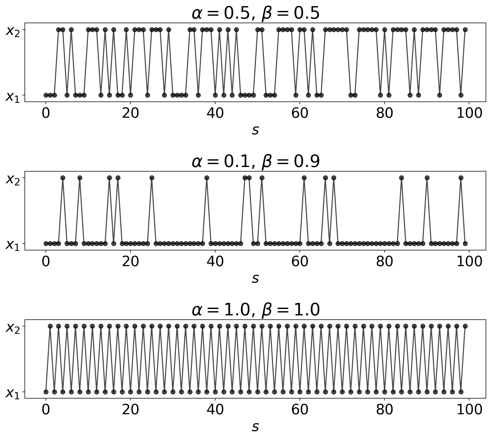
Distribution propagation
If the initial state \(x^{(0)}\) follows \(p^{(0)}\), the marginal distribution of the next state \(x^{(1)}\) is
\[ p^{(1)}(x) = \sum_{y\in\mathcal X} P(x, y)\, p^{(0)}(y)\, . \]
The marginal distribution of the \((s+1)\)-th state in a Markov chain follows the distribution
\[ p^{(s+1)}(x) = \sum_{y\in\mathcal X} P(x, y)\, p^{(s)}(y)\, . \tag{39}\]
Repeating the same argument for \(p^{(s)}\), we have
\[ p^{(s+1)}(x) = \sum_{y, z\in\mathcal X} P(x, y)\, P(y, z) \, p^{(s-1)}(z) = \sum_{z\in\mathcal X} \left(\sum_{y\in\mathcal X} P(x, y)\, P(y, z) \right) \, p^{(s-1)}(z)\, . \tag{40}\]
The expression in brackets, \(\sum_{y\in\mathcal X} P(x, y)\, P(y, z)\), is the transition matrix for making two successive transitions. By generalizing the argument, we obtain the Chapman-Kolmogorov equation.
In matrix-vector notation, we have
\[ p^{(s+1)} = Pp^{(s)} \]
where \(p^{(s)}\) are now vectors in the probability simplex and \(P\) is the transition matrix (always assuming the left stochastic convention in the context of this notebook!).
By applying the argument successively, we obtain a representation of the marginal distribution of the \(s\)-th state in terms of matrix powers of the transition matrix:
\[ x^{(s)}\sim P^s p^{(0)} \]
The matrix power \(P^s\) is the matrix analog of the power of scalar quantities:
\[ P^s = \underbrace{P \cdot P\cdots P}_{s\text{ terms}} \tag{41}\]
where the dot “\(\cdot\)” indicates matrix multiplication. It is straightforward to see that if \(P\) is stochastic, then \(P^s\) for \(s\ge 1\) is also stochastic. The matrix power \(P^s\) propagates the distribution of states by \(s\) time steps.
Multiplication of the transition matrix \(P\) from the right advances a distribution \(p^{(s)} \to p^{(s+1)}\), whereas multiplication from the left corresponds to computing the expectation of some function defined on sample space \(\mathcal X\):
\[ \mathbb E_{p^{(s)}}[f] = \sum_{x\in\mathcal X} f(x) p^{(s)}(x) = \sum_{x\in\mathcal X} f(x) \bigl(P p^{(s-1)}\bigr)(x) = \sum_{x,y\in\mathcal X} f(x) P(x, y) p^{(s-1)}(y) = f^T\!Pp^{(s-1)} \]
Asymptotic behavior
What happens if we generate a very long Markov chain? To think about this question, let us represent \(P\) using its eigendecomposition:
\[ P = U \Lambda U^{-1} \]
where \(\Lambda\) is a diagonal matrix with eigenvalues of \(P\) on the diagonal, and \(U\) is a square matrix whose columns are the right eigenvectors of \(P\): \(PU = U\Lambda\).
The marginal distribution of the \(S\)-th state is then characterized by
\[ P^S = (U\Lambda U^{-1}) (U\Lambda U^{-1}) \cdots (U\Lambda U^{-1}) = U\Lambda^S U^{-1}\, . \]
We know that the magnitude of the eigenvalues is smaller than or equal to one, \(|\lambda| \le 1\). Let us write \(\lambda = |\lambda| \exp(i\varphi)\) with modulus \(|\lambda|\) and phase \(\varphi\), then all eigenvalues whose magnitude is strictly smaller than one, will die out in the long run
\[ \lambda^S\overset{S\to\infty}{\,\,\,\,\,\,\longrightarrow\,\,\, 0}\,\,\, \text{if } \,\,|\lambda| < 1 \]
If we keep on taking powers of \(P\), the resulting matrix will converge to a low-rank matrix.
Stationary distribution
The states with \(|\lambda |=1\) play a crucial role in the long term behavior of the Markov chain. The left stochasticity of \(P\) is the requirement that \(\mathbb 1\) is a left eigenvector with eigenvalue 1. Since left and right eigenvalues coincide, there is at least one right eigenvector \(\pi\) with eigenvalue one:
\[ P\pi = \pi \tag{42}\]
If \(\pi\) is normalized such that \(\mathbb 1^T\!\pi=1\), then \(\pi\) is a stationary or invariant distribution of \(P\).
Thanks to the Perron-Frobenius theorem the elements in \(\pi\) all have the same sign. We choose the sign to be positive to obtain a valid probability distribution. Moreover, we normalize \(\pi\) to one (remember that the standard normalization for eigenvectors is \(u^T\!u=1\)).
The stationary distribution is a fixed point of the propagation dynamics generated by \(P\). If \(\pi\) is unique, then it is also called the equilibrium distribution in a physical context.
In the simplest case, we have \(P=\pi\mathbb 1^T\). Simulation of this Markov chain boils down to standard Monte Carlo simulation of \(\pi\) (i.e. directly drawing samples from \(\pi\)):
\[ x^{(s+1)} \sim \Pr\bigl(x \mid x^{(s)}\bigr) = \pi(x) \]
However, a Markov chain can have more than one stationary distribution. For example, if \(P=I\) where \(I\) is the identity matrix, then any probability distribution over \(\mathcal X\) is stationary. A finite Markov chain always has at least one stationary distribution.
We know that at least one stationary distribution exists. What are the requirements that it is unique?
Irreducible Markov chains
There are multiple equivalent definitions of the irreducibility of a matrix. A matrix is irreducible, if no subspaces exist that are mapped to themselves under the action of the matrix. An intuitive definition for Markov chains is that the graph representing a Markov chain is fully connected. There are no disconnected components in which the Markov chain cycles without ever exiting into another subspace. If a transition matrix \(P\) is reducible, then we can find a permutation matrix \(\Pi\) that transforms the transition matrix into block lower triangular form:
\[ \Pi\, P\, \Pi^T \not= \begin{pmatrix} E & 0 \\ F & G \\ \end{pmatrix} \] where matrices \(E\) and \(G\) square matrices. A simple example of a reducible two-state transition matrix is (\(\alpha=1/2, \beta=0\)):
\[ P = \begin{pmatrix} \tfrac{1}{2} & 0 \\ \tfrac{1}{2} & 1 \\ \end{pmatrix} \]
We have \(\Pr(x=x_2\mid{}y=x_2) = 1\), so the subspace \(\{x_2\}\) is mapped to itself.

This is also an example of an absorbing Markov chain, since even if we start in \(x=x_1\), as soon as we enter the second state, we can never escape from that state again.
An alternative definition of an irreducible Markov chain goes as follows: For all pairs \(x, y \in \mathcal X\) there exists \(s(x,y)\in \mathbb N\) such that
\[ \Pr\bigl(x^{(s)}=x\mid x^{(0)} = y\bigr) = (P^s)(x, y) > 0 \tag{43}\]
note that \(s(x,y)\) is in general different for every pair of states \(x, y \in\mathcal X\). The intuition behind this notion of irreducibility is that “all states can be reached from all other states”. Häggström uses the following terminology: If two states satisfy the irreducibility condition (Equation 43), then \(x\) is said to communicate with \(y\), i.e. \(y\) can be reached from \(x\) in a finite time, which is symbolized by \(x\to y\). Two states \(x\) and \(y\) intercommunicate, if \(x\to y\) and \(y\to x\), which is denoted by \(x\leftrightarrow y\) (so there exists a path from \(x\) to \(y\) with non-vanishing probability, and likewise a path from \(y\) back to \(x\)). Using this terminology, a Markov chain is irreducible, if \(x \leftrightarrow y\) for all \(x, y \in \mathcal X\). This gives us also a hint for verifying irreducibility by checking if the transition graph of a Markov chain is strongly connected.
On the other hand, if a Markov chain is reducible, then the analysis of its long-term behavior can be reduced to the analysis of the long-term behavior of one or more Markov chains with smaller state space.
To illustrate the concept of irreducibility let us come back to the linear congruential generators that we discussed in the context of pseudo random number generation.
Example: LCG with bad magic numbers
In lecture 2, we studied linear congruential generators based on the recurrence relation
\[ x^{(s+1)} = (a x^{(s)} + c)\, \text{mod}\, m \tag{44}\]
with
modulus \(m > 0\)
multiplier \(a\) where \(0 < a < m\)
increment \(c\) where \(0 \le c < m\)
seed \(x^{(0)}\) where \(0 \le x^{(0)} < m\)
"""
Pseudo random number generator
"""
import numpy as np
import matplotlib.pylab as plt
class PRNG:
"""PRNG
Pseudo-random number generator implemented as iterator. Using a linear
congruential generator (LCG) to generate random numbers. Default settings
for modulus, multiplier and period are taken from Numerical Recipes.
Example
-------
>>> prng = PRNG(maximum=1e4)
x = list(prng)
>>> len(x)
10000
Details:
* https://en.wikipedia.org/wiki/Linear_congruential_generator
"""
def __init__(self, m=2**32, a=1664525, c=1013904223, seed=10, maximum=1e6):
"""
Parameters
----------
m : int > 0
modulus or period
a : int > 0
multiplier (should be smaller than modulus)
c : int >= 0
increment (should be smaller than modulus)
seed : int >= 0
initial state (should be smaller than modulus)
maximum : float or int
maximum number of random numbers to be generated by PRNG
"""
def check_int(i, lower=0, upper=None):
valid = type(i) is int and i >= lower
if upper is not None:
valid &= i < upper
return valid
msg = '"{0}" must be int >= {1}'
assert check_int(m, 1), msg.format('m', 1)
assert check_int(a, 1, m), msg.format('a', 1)
assert check_int(c, 0, m), msg.format('c', 0)
assert check_int(seed, 0, m), msg.format('seed', 0)
self.a, self.c, self.m, self.seed = a, c, m, seed
self._max = int(maximum)
self._reset()
def _reset(self):
self.x = self.seed
self._counter = 0
def __next__(self):
"""
Using recurrence relation
X_{n+1} = (a X_n + c) mod m
to generate new random number
"""
if self._counter >= self._max:
raise StopIteration
self.x = (self.a * self.x + self.c) % self.m
self._counter += 1
return self.x
def __iter__(self):
self._reset()
return self
class Uniform(PRNG):
def __next__(self):
return super().__next__() / float(self.m)For the choice \(a=40, c=0, m=181\) (studied in lecture 2) we obtained a flawed LCG:
prng = PRNG(m=181, a=40, c=0, maximum=1000)
x = np.array(list(prng))
X = np.fft.fft(x)
kw = dict(s=40, color='k', alpha=0.7)
fig, ax = plt.subplots(1, 3, figsize=(12, 4))
ax[0].scatter(np.arange(100), x[:100], **kw)
ax[0].plot(x[:100], color='k', lw=2, alpha=0.5)
ax[0].set_xlabel(r'iteration $s$')
ax[0].set_ylabel(r'pseudo random number $x^{(s)}$')
ax[1].scatter(x[:100], x[1:101], **kw)
ax[1].set_xlabel(r'$x^{(s)}$')
ax[1].set_ylabel(r'$x^{(s+1)}$')
ax[2].plot(np.abs(np.fft.fftshift(X))[1:len(x)//2],
lw=3, color='k', alpha=0.7)
ax[2].set_xlabel('spatial frequency')
ax[2].set_ylabel(r'spectrum $|FT|$')
fig.tight_layout()We can now analyze this LCG by using Markov chain methods. The recurrence relation (Equation 44) defines a Markov chain with deterministic transitions:
\[ P(x, y) = \left\{\begin{array}{c l} 1 \,\,;&x = (a y + c) \, \text{mod}\, m\\ 0 \,\,;&\text{else}\\ \end{array}\right. \]
By evaluation of this relation for all pairs of states \(x, y \in \{0, 1, \ldots, m-1\}\) we obtain a permutation matrix as transition matrix. (Permutation matrices are special doubly stochastic matrices: they just shuffle states around in a deterministic fashion.)
prng._reset()
# construct transition matrix
P = np.zeros((prng.m, prng.m))
for j in range(prng.m):
prng.x = j
P[next(prng), j] = 1
# P is a permutation matrix, therefore
# (see https://en.wikipedia.org/wiki/Permutation_matrix#Properties)
# 1. P has only entries in {0, 1}
assert np.allclose(np.sort(np.unique(P)), [0., 1.])
# 2. P is doubly stochastic
assert np.allclose(P.sum(0), 1)
assert np.allclose(P.sum(1), 1)
# 3. P is orthogonal
assert np.allclose(P.T @ P, np.eye(len(P)))
assert np.allclose(P @ P.T, np.eye(len(P)))# Since P is a permutation matrix, all eigenvalues of P
# are roots of one
v, U = np.linalg.eig(P)
assert np.all(np.isclose(np.abs(v), 1))# There are four stationary distributions
indices = np.where(np.isclose(v, 1.))[0]
print('#eigenvalues close to one:', len(indices))
U = U[:,indices].real
U /= U.sum(0)
U = U.T
# There is one trivially periodic state (x^{(0)}=0 with entropy 0)
# and there are three equally large subspaces
print('entropy of stationary distribution:',
np.round([- p @ np.log(p+1e-100) for p in U], 3))#eigenvalues close to one: 4
entropy of stationary distribution: [4.094 4.094 4.094 0. ]np.sum(U[0]>0)60colors = [color['color'] for color in plt.rcParams['axes.prop_cycle']]
orbits = []
ticks = (0, 50, 100, 150)
limits = (-5, prng.m+4)
fig, ax = plt.subplots(1, 5, figsize=(15, 3.5), sharex=True, sharey=True)
for i, u in enumerate(U):
prng.seed = u.argmax()
x = np.array(list(prng))
orbits.append(set(x.tolist()))
ax[0].scatter(x[:-1], x[1:], color=colors[i])
ax[i+1].plot(x[:-1], x[1:], marker='o', alpha=0.5, lw=2,
color=colors[i], ls='--')
ax[0].set_xticks(ticks)
ax[0].set_yticks(ticks)
ax[0].set_xlim(limits)
ax[0].set_ylim(limits)
fig.tight_layout()Aperiodic Markov chains
The period of a state \(x\in\mathcal X\) is defined as
\[ d(x) = \text{gcd}\left\{s \ge 1 : P^s(x, x) > 0\right\} \tag{45}\]
where \(\text{gcd}\{a_1, a_2, \ldots\}\) is the greatest common divisor of the natural numbers \(a_1, a_2, \ldots \in \mathbb N\). The period of a state \(x\) is the greatest common divisor of the times that the chain can return (i.e. has positive probability of returning) to \(x\), given that we start in \(x\).
A Markov chain is aperiodic if the periods of all states are one: \(d(x) = 1\) for all \(x\in\mathcal X\).
So if a state is periodic, then the return times to \(x\) are multiples of a factor greater than one, its period \(d(x)\).
Coming back to our two-state example, if we set \(\alpha=\beta=1\) we have:
\[ P(x, y) = \begin{pmatrix} 0 & 1 \\ 1 & 0\\ \end{pmatrix} \]
For this Markov chain both states, \(x_1\) and \(x_2\), have a period of two, since the state is visited again after an even number of steps.

In summary:
If a Markov chain is reducible, then it generates states only in a subspace of \(\mathcal X\); which subspace is selected depends on the initial state.
If a Markov chain is periodic, then it cycles between multiple stationary distributions.
Illustration using the two-state system
We have
\[ P(x, y) = \begin{pmatrix} 1 - \alpha & \beta \\ \alpha & 1 - \beta \\ \end{pmatrix} \tag{46}\]
with eigenvalues \(1\) and \(1-\alpha-\beta\) and corresponding (right) eigenvectors:
\[ \pi = \frac{1}{\alpha+\beta} \begin{pmatrix} \beta \\ \alpha \end{pmatrix}, \,\,\, \text{and}\,\,\, \begin{pmatrix} 1 \\ -1 \\ \end{pmatrix} \tag{47}\]
assuming \(\alpha>0\) or \(\beta>0\).
In case \(\alpha=\beta=0\):
\[ P(x, y) = \begin{pmatrix} 1 & 0 \\ 0 & 1 \\ \end{pmatrix} \tag{48}\]
all two state distributions are stationary with eigenvalue one. In particular, we have eigenvectors
\[ \begin{pmatrix} 1 \\ 0 \end{pmatrix}, \,\,\, \begin{pmatrix} 0 \\ 1 \\ \end{pmatrix} \tag{49}\]
corresponding to two recurrent classes, and \(P\) is reducible.
In case \(\alpha=\beta=1\):
\[ P(x, y) = \begin{pmatrix} 0 & 1 \\ 1 & 0 \\ \end{pmatrix} \tag{50}\]
the eigenvalues are \(1\) and \(-1\) with eigenvectors
\[ \begin{pmatrix} 1 \\ 1 \end{pmatrix}, \,\,\, \begin{pmatrix} 1 \\ -1 \\ \end{pmatrix} \]
and the chain is periodic: \(P^{2s} = I\), \(P^{2s+1} = P\).
Lecture 5: The Metropolis-Hastings algorithm
Outline
- Fundamental theorem of Markov chains
- Metropolis-Hastings algorithm
Recap
Idea: improve on direct sampling by allowing for dependence of successive samples (Markov property)
Markov chains are defined by stochastic matrices; they have at least one stationary distribution
import numpy as np
import matplotlib.pylab as plt
plt.rc('font', size=20)
# transition matrix as defined in last lecture
def transition_matrix(alpha, beta):
return np.array([[1-alpha, beta],
[alpha, 1-beta]])
# sampling method as defined in last lecture
def sample_chain(S, alpha=0.5, beta=0.5, x0=0):
X = [x0]
P = transition_matrix(alpha, beta)
while len(X) < S:
p = P[:,X[-1]]
X.append(np.random.multinomial(1, p).argmax())
return np.array(X)- Reducible and periodic chains will not converge to a unique stationary distribution
So only if the Markov is both irreducible and aperiodic, then we have a unique stationary distribution. This is detailed in the following theorems.
Fundamental Theorem of Markov Chains
Irreducibility and aperiodicity implies that \(\pi\) is unique (see, for example, Diaconis: The Markov Chain Monte Carlo Revolution) and powers of \(P\) converge to a rank one matrix
\[ P^S(x, y) \to \pi(x) \tag{51}\]
for \(S\to\infty\) and all \(x, y \in\mathcal X\). Equation (Equation 51) means that we can start from any initial state \(y\in\mathcal X\) with \(\pi(y) > 0\) and will eventually produce samples from the stationary distribution \(\pi\). Another way to express this convergence in distribution is:
\[ |P^S p - \pi| \to 0 \]
for \(S\to\infty\) for any \(p\). That is, we can start from an arbitrary initial distribution and converge to the stationary distribution. In matrix-vector notation
\[ P^S \to \pi\mathbb 1^T\, . \]
That is, if \(P\) is irreducible and aperiodic, then matrix powers of \(P\) converge to a rank-1 matrix.
The fundamental theorem for Markov chains follows from the Perron-Frobenius theorem for non-negative matrices and the irreducibility of \(P\).
Why does theorem (Equation 51) have implications for sampling? As we saw in the previous lectures, it might be difficult to sample a probabilistic model directly. Sometimes variable transformations allow us to sample a model directly, but this is only rarely the case for complex models. When resorting to rejection or importance sampling, it is generally difficult to find a good proposal distribution. On the other hand, simulation of a Markov chain is simple to implement (see algorithm above): we just have to move from \(x\) to \(y\) according to \(P(y, x)\). No matter where we start in sample space, the states that we produce by simulating a Markov chain will eventually follow the stationary distribution.
But there is still something missing in order to use the simulation of a Markov chain for probabilistic inference. In our setting, we are given a probabilistic model \(p\) (our target distribution) rather than a transition matrix \(P\). So we are still facing the challenge of designing a suitable Markov chain that has the desired target as its stationary distribution. This problem has been solved in a very ingenious fashion by Metropolis et al., as we will see soon.
# matrix power converges to rank-1 matrix
def compute_pi(alpha, beta):
return np.array([beta, alpha]) / (alpha + beta)
S = 50
chains = [(0.1, 0.1), (0.1, 0.), (1e-2, 0.), (0.9, 0.9), (0.99, 0.99), (0.1, 0.7)]
kw = dict(ylim=[-0.1, 2.1], ylabel=r'$|P^s-\pi\mathbb{1}^T|$', xlabel='$s$')
fig, ax = plt.subplots(2, 3, figsize=(12, 6), sharex='all', sharey='all', subplot_kw=kw)
ax = list(ax.flat)
for i, (alpha, beta) in enumerate(chains):
P = transition_matrix(alpha, beta)
pi = np.array([beta, alpha]) / (alpha + beta)
P_inf = np.multiply.outer(pi, np.ones(2))
P_s = P.copy()
d = []
while len(d) < S:
d.append(np.fabs(P_s - P_inf).sum())
P_s = P_s.dot(P)
ax[i].set_title(r'$\alpha={0:.3f}$, $\beta={1:.3f}$'.format(alpha, beta),
fontsize=16)
ax[i].plot(d, lw=4, alpha=0.6, color='k')
fig.tight_layout()# convergence in distribution
def estimate_pi0(X):
return 1-np.add.accumulate(X) / np.add.accumulate(np.ones(len(X)))
S = 1000
kw = dict(ylim=[-0.1, 1.1], ylabel=r'$p^{(s)}(x=x_1)$', xlabel='$s$')
fig, ax = plt.subplots(2, 3, figsize=(12, 6), sharex='all', sharey='all', subplot_kw=kw)
ax = list(ax.flat)
for i, (alpha, beta) in enumerate(chains):
X = sample_chain(S, alpha, beta, x0=0)
pi = compute_pi(alpha, beta)
pi_est = estimate_pi0(X)
ax[i].set_title(r'$\alpha={0:.3f}$, $\beta={1:.3f}$'.format(alpha, beta),
fontsize=16)
ax[i].plot(pi_est, lw=3, color='k', alpha=0.6)
ax[i].axhline(pi[0], ls='--', color='r', alpha=0.8)
fig.tight_layout()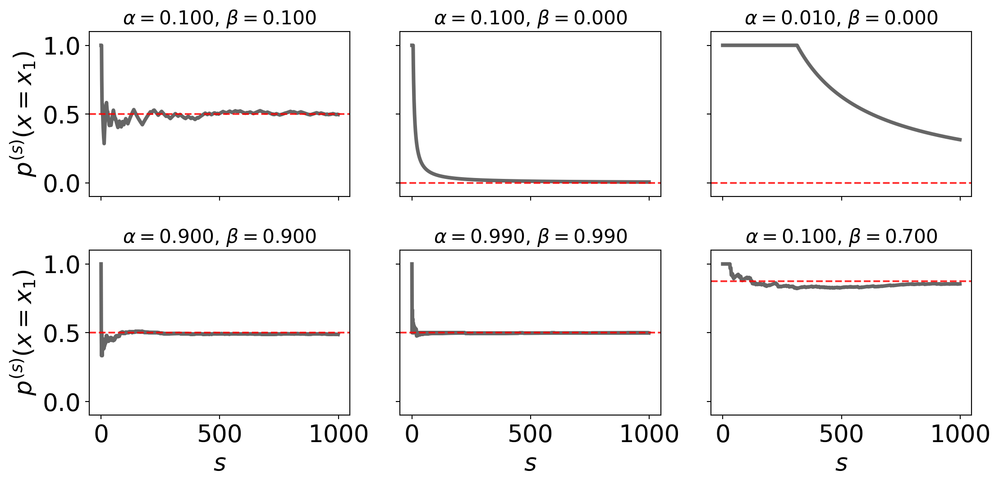
Strong law of large numbers (LLN) for Markov chains
Before we explain the Metropolis algorithm, let us briefly state the convergence result for irreducible and aperiodic Markov chains in a fashion that is closer to the Monte Carlo approximation introduced in the first lecture.
Irreducibility and aperiodicity of a stochastic transition matrix implies a strong law of large numbers for Markov chains:
\[ \frac{1}{S} \sum_{s=1}^S f\bigl(x^{(s)}\bigr) \to \mathbb E_{\pi}[f] \tag{52}\]
where \(x^{(s)} \sim \Pr\bigl(x\mid x^{(s-1)}\bigr) = P\bigl(x, x^{(s-1)}\bigr)\) is an irreducible, aperiodic Markov chain with stationary distribution \(\pi\). Therefore, simulating a Markov chain produces samples that can be used to approximate an expectation similar to the approximation in standard Monte Carlo or importance sampling.
Analogous to the standard Monte Carlo approximation, Markov chain Monte Carlo (MCMC) sampling produces estimates of expectations that coincide with the true expectation in the long run. Again, this is only a stochastic guarantee, and it will be generally difficult to know how close we are to the correct value. But nevertheless we have a guarantee that running a Markov chain longer should help.
Reversible Markov chains
A very important concept to verify stationarity of a Markov chain \(P\) is reversibility. A Markov chain is \(\pi\)-reversible if the transition matrix satisfies the detailed balance equations
\[ P(x, y)\, \pi(y) = P(y, x)\, \pi(x) \tag{53}\]
for all \(x, y \in \mathcal X\) for some distribution \(\pi\). From the point of view of probability flow across the transition graph, the detailed balance equations (Equation 53) state that “the amount of probability mass flowing from a source state \(x\) to a sink \(y\) via the directed edge with capacity \(P(y, x)\) equals the probability mass flowing backwards.” So the dynamics across the transition graph is in a steady state. As a consequence, reversibility implies that \(\pi\) is an invariant distribution:
\[ \sum_{y\in\mathcal X} P(x, y)\pi(y) = \sum_{y\in\mathcal X} P(y, x) \pi(x) = \pi(x)\, . \tag{54}\]
Therefore, to verify that a distribution of interest (our target distribution) is the invariant distribution of a Markov chain, we can simply check if the transition matrix satisfies detailed balance with respect to the target distribution.
The contrary to (Equation 54) is not true: The fact that \(\pi\) is a stationary distribution of the transition matrix \(P\) does not imply, that \(P\) is \(\pi\)-reversible.
If we start a Markov chain in the stationary distribution, \(p^{(0)} = \pi\), then \[ \begin{aligned} \Pr\bigl(x_S = x^{(S)}, \ldots x_0=x^{(0)}\bigr) &= \prod_{s=1}^S P\bigl(x^{(s)}, x^{(s-1)}\bigr)\, \pi\bigl(x^{(0)}\bigr)\\ &= \prod_{s=1}^S P\bigl(x^{(s-1)}, x^{(s)}\bigr)\, \pi\bigl(x^{(S)}\bigr) \\ &= \Pr\bigl(x_S = x^{(0)}, \ldots x_0=x^{(S)}\bigr) \end{aligned} \tag{55}\]
The probability of generating a Markov chain when starting in the stationary distribution is the same in forward and backward direction. This is why the Markov chain is called reversible.
If the transition matrix \(P\) is symmetric, \(P^T=P\), then the uniform distribution is the stationary distribution because the detailed balance equations are satisfied for \(\pi(x) = 1/|\mathcal X|\).
The Metropolis-Hastings Algorithm
We are now ready to discuss the Metropolis-Hastings algorithm which solves the following fundamental problem:
For a given target distribution \(p(x)\), how can we construct an irreducible and aperiodic Markov chain such that \(p(x)\) is its stationary distribution?
The Metropolis-Hastings algorithm solves this problem in a very elegant and simple fashion. Due to its simplicity, it is very widely applicable and ranks among the top 10 algorithm of the 20th century.
Algorithm: Metropolis-Hastings
Assume \(\mathcal X\) is discrete and \(p\) a pmf on \(\mathcal X\). Moreover, \(Q(y, x)\) is a proposal Markov chain on \(\mathcal X\), that is \(Q(\cdot, x)\) is a pmf on \(\mathcal X\) that allows us to generate samples from a given state \(x\). The trick of the Metropolis-Hastings algorithm is to modify the Markov chain \(Q\), by auxiliary coin tossing, to a new transition kernel with stationary distribution \(p\).
The Metropolis-Hastings (MH) algorithm proceeds as follows:
Generate some initial \(x^{(0)} \sim p^{(0)}\) and iterate for \(s=1, 2, \ldots\):
propose a new state by generating \(y \sim Q\bigl(\,\cdot\,, x^{(s-1)}\bigr)\)
generate a uniform random number \(u \sim \mathcal U(0, 1)\); if \(u \le A\bigl(y, x^{(s-1)}\bigr)\) then accept and set \(x^{(s)} = y\), else reject and set \(x^{(s)} = x^{(s-1)}\). The acceptance probability is given by
\[ A(y, x) = \min\left\{1, \frac{Q(x, y)}{Q(y, x)}\frac{p(y)}{p(x)} \right\} \tag{56}\]
The MH algorithm is the first and most important Markov chain Monte Carlo (MCMC) algorithm. Most other MCMC algorithms are specialized versions of MH sampling.
Remarks
The distribution \(p\) will turn out to be a stationary distribution of the Markov chain that is simulated with the MH algorithm; \(p\) is called the target distribution or simply the target
The Metropolis-Hastings algorithm is also valid in continuous sample spaces \(\mathcal X\)
It is crucial to reject, i.e. to really duplicate the current state and store it as a sample in case of a rejected proposal. Otherwise the statistics will be wrong!
We don’t need to build up and store the full transition matrix \(Q\) of the proposal chain in memory. If \(Q\) is symmetric, it suffices to be able to simulate \(Q\) (this fact is used, for example, in Hamiltonian Monte Carlo where the proposal state is generated by solving a system of differential equations)
We don’t need to know the normalizing constants of the target distribution and the proposal chain, since the MH algorithm only involves ratios of the target distribution and the transition rates of the proposal chain. If the unnormalized target and proposal chain are denoted
\[ p(x) = \frac{1}{Z_p} p^*(x), \,\,\, Q(x, y) = \frac{1}{Z_Q} Q^*(x, y) \tag{57}\]
where \(p^*(x) \ge 0\) and \(Z_p = \sum_x p^*(x)\) etc., then the acceptance ratio is
\[ \frac{Q(x, y)}{Q(y, x)}\frac{p(y)}{p(x)} = \frac{Q^*(x, y)}{Q^*(y, x)}\frac{Z_Q}{Z_Q}\, \frac{p^*(y)}{p^*(x)}\frac{Z_p}{Z_p}\, . \]
This is very convenient!
Special cases
Symmetric proposal distribution (and relation to statistical physics)
If the proposal distribution is symmetric, \(Q^T=Q\), then the stationary distribution of \(Q\) is uniform. This was assumed in the original publication by Metropolis et al.. In this case the acceptance ratio simplifies to
\[ \frac{Q(x,y)\, p(y)}{Q(y, x)\, p(x)} = \frac{p(y)}{p(x)} \]
Physicists tend to work with energies, i.e. negative log probabilities, rather than probabilities. So the logarithm
\[ \Delta E = \log\{ p(x) / p(y) \} \]
is the energy difference when jumping from state \(x\) to the proposed state \(y\). The acceptance probability is then
\[ \min\left\{1, e^{-\Delta E} \right\} \]
If the energy of the new state is lower than the energy of the current state, the proposal is always accepted. Otherwise the acceptance probability depends on the Boltzmann factor \(\exp(-\Delta E)\).
Independence sampler
If the proposal distribution is independent of the current state, \(Q(y, x) = q(y)\), the acceptance ratio simplifies to
\[ \frac{Q(x,y)\, p(y)}{Q(y, x)\, p(x)} = \frac{q(x)\, p(y)}{q(y)\, p(x)} \]
If \(q(x)\) is the target \(q=p\), then we always accept and we are back to direct sampling \(x\sim p\).
There is also a connection to importance and rejection sampling. The importance weight of some state \(x\) is
\[ w(x) = \frac{p(x)}{q(x)}\, , \]
and the acceptance ratio of the independence sampler involves ratios of importance weights
\[ \frac{w(y)}{w(x)} \]
If the proposal state \(y\) has a higher importance weight than the current state \(x\), then we always accept. Otherwise the acceptance probability is \(\min\{1, w(y)/w(x)\}\). So Metropolis sampling with an independent proposal is a kind of hybrid of rejection and importance sampling. Still it has some advantages over rejection sampling, since we do not need to establish an upper bound \(M\) such that \(p(x) \le Mq(x)\). In contrast to importance sampling, it has some built-in pruning because states that have a very small importance weight (relative to the current state) have only a small chance of being accepted.
Why does the MH algorithm work?
The MH algorithm works because of the validity of the following statements:
Transition probabilities of the MH algorithm
The MH algorithm generates a Markov chain on \(\mathcal X\). The transition probabilities of the Markov chain are given by
\[ P(y, x) = Q(y, x)\, A(y, x) + \delta(y,x)\, r(x) \tag{58}\]
where the acceptance probability \(A(y, x)\) is defined above, and the rejection probability is
\[ r(x) = 1 - \sum_{y\in \mathcal X} Q(y, x)\, A(y, x) \tag{59}\]
The transition probability of \(y\not= x\) is \(A(y, x)\, Q(y, x)\) by construction of the algorithm. The term for \(y=x\) is obtained by subtracting the sum \(\sum_y A(y, x)\, Q(y, x)\) from one, which is just \(r(x)\). In general, it holds that the diagonal entries of the transition matrix are fixed by column stochasticity:
\[ 1 = \sum_y P(y, x) \,\,\,\Rightarrow\,\,\, P(x, x) = 1 - \sum_{y\not= x} P(y, x)\, . \]
So it is sufficient to know the off-diagonal elements.
Stationarity of the target distribution
To show that the target distribution \(p(x)\) is indeed the stationary distribution of the Markov chain generated by the MH algorithm, we check if the transition matrix (Equation 58) is \(p\)-reversible. For \(y\not= x\) we have:
\[ \begin{aligned} P(y, x)\, p(x) &= Q(y, x)\, A(y, x)\, p(x) \\ &= Q(y, x)\, \min\left\{1, \frac{Q(x, y)}{Q(y, x)}\frac{p(y)}{p(x)} \right\}\, p(x) \\ &=\min\left\{ Q(y, x)\, p(x), Q(x, y)\, p(y) \right\}\\ &= Q(x, y)\, \min\left\{\frac{Q(y, x)}{Q(x, y)}\frac{p(x)}{p(y)}, 1 \right\}\, p(y) \\ &= Q(x, y)\, A(x, y)\, p(y) \\ &= P(x, y)\, p(y) \end{aligned} \tag{60}\]
The MH chain satisfies the detailed balance equations with regard to our target distribution. Therefore, \(p\) is a stationary distribution and will be sampled in the long run.
To ensure that the simulation converges to \(p\), we have to ensure irreducibility by proper choice of the proposal chain \(Q(y, x)\). The proposal chain needs to be irreducible: every point \(y \in \mathcal X\) is reachable from any \(x \in\mathcal X\) in a finite number of steps.
Example (Vihola, Example 6.19)
Let’s run the MH algorithm on a simple staircase distribution with uniform proposals. The target distribution is
\[ p(x) = \frac{x}{Z}, \,\,\, x\in\{1, \ldots, m\}=:\mathcal X, \,\,\, Z=\sum_{x=1}^m x = m(m+1)/2 \]
To design an MH algorithm for simulating \(p\), we have to choose a suitable proposal distribution. A simple choice is to use a uniform distribution over \(\mathcal X\). That is, \(Q(y, x)\) is independent of \(x\) and \(y\): \(Q(y, x) = 1/m\) for all \(x, y \in\mathcal X\).
The resulting MH chain is irreducible:
\[ \Pr(x_1=y\mid{} x_0=x) = Q(y, x) \min\left\{1, \frac{Q(x, y)}{Q(y, x)}\frac{p(y)}{p(x)} \right\} = \frac{1}{m} \min\left\{1, \frac{y}{x}\right\} > 0 \]
for all \(x, y\in\mathcal X\). We can get from from any \(x\in \mathcal X\) to any \(y\) within one step (\(P(y,x) > 0\) for all \(x, y\)).
The MH algorithm for this special case is very simple:
Pick \(x^{(0)}\) uniformly in \(\{1, \ldots, m\}\), e.g. \(x^{(0)}=1\)
Generate proposal \(y \sim \mathcal U(\{1, \ldots, m\})\)
Generate \(u \sim \mathcal U(0, 1)\) and if \(u \le \frac{y}{x^{(s-1)}}\), set \(x^{(s)} = y\), otherwise \(x^{(s)} = x^{(s-1)}\)
# Example 6.19 from Vihola's lecture notes
# size of sample space
m = 30
# sample space
X = np.arange(m)
# target distribution
p = X + 1.
p *= 2 / m / (m+1)
# uniform proposal
Q = lambda x=None: np.random.choice(X)
x = Q()
samples = [x]
while len(samples) < 1e5:
# proposal step
y = Q(x)
# acceptance probability
A = p[y] / p[x]
# accept / reject?
u = np.random.uniform()
x = y if (u <= A) else x
samples.append(x)
bins, counts = np.unique(samples, return_counts=True)
counts = counts / float(counts.sum())
fig, ax = plt.subplots(1, 2, figsize=(10, 4))
ax[0].bar(bins, counts, color='k', alpha=0.2)
ax[0].step(np.append(-1,X) + 0.5, np.append(0,p), color='r')
ax[1].plot(samples[-500:], color='k', alpha=0.75)
fig.tight_layout()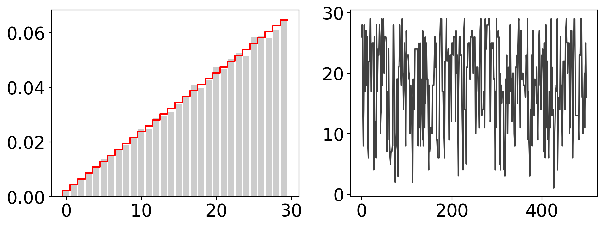
Pros and cons of MCMC
Pros:
Very versatile framework: the Metropolis-Hastings algorithm allows us to simulate a Markov chain with a desired stationary distribution in a highly flexible manner. The requirements are much easier to satisfy than the requirements for importance or rejection sampling
We introduce local correlations which allows the simulation to zoom into the relevant regions of sample space
Cons:
We sample locally and pay the price of introducing correlations between successive samples. Local sampling might get stuck and ergodicity might be hard to achieve.
We don’t know how far away we are from the stationary distribution and are only given statistical guarantees for convergence in the long run
Geometric interpretation of the Metropolis-Hastings algorithm
The MH algorithm takes a base chain \(Q\), the proposal chain, that does not yet have the desired target distribution \(p\) and tweaks it in such a way that the new chain has the correct distribution. This is achieved by constructing a new chain \(P\) that is \(p\)-reversible:
\[ P(x, y)\, p(y) = P(y, x)\, p(x) \tag{61}\]
The mapping from \(Q\) to \(P\) involves the acceptance ratio
\[ R(y, x) = \frac{Q(x, y)\, p(y)}{Q(y, x)\, p(x)} \tag{62}\]
and is defined as
\[ P(y, x) = \left\{ \begin{array}{c c} Q(y, x)\, \min\{1, R(y, x)\} & \text{ if } y\not= x \\ \sum_z Q(z, x) \bigl(1 - \min\{1, R(z, x)\}\bigr) & \text{ if } y=x\\ \end{array}\right. \tag{63}\]
If \(Q\) is irreducible, then \(P\) is also irreducible.
The acceptance ratio \(R(y, x)\) (Eq. Equation 62) assesses how unbalanced the proposal chain is, i.e. how strongly \(Q\) deviates from \(p\)-reversibility. If \(Q\) were already \(p\)-reversible, then the ratio \(R\) would always be one, and the proposal would always be accepted. The larger \(R(y, x)\) deviates from one, the more unbalanced is the proposal chain with regard to the target. Since \(R(x, y) = 1 / R(y, x)\), a strong flux of probability in one direction, results in a reduced flux of probability in the backwards direction.
To better understand how the mapping from some irreducible proposal chain \(Q\) to a \(p\)-reversible Metropolis chain \(P\) works, let me try to explain a very nice paper by Billera & Diaconis: A Geometric Interpretation of the Metropolis-Hastings Algorithm. This paper sets out to provide a global view on why the MH algorithm in some sense provides the optimal way of turning some arbitrary Markov chain \(Q\) into a Markov chain with the desired stationary distribution.
First let us think of the space of all possible Markov chains indexed by states from the finite sample space \(\mathcal X\). This space is formed by left stochastic square matrices of size \(|\mathcal X|\) and will be called \(\mathcal S(\mathcal X)\). \(\mathcal S(\mathcal X)\) is convex, because the convex combination of two Markov matrices is again a stochastic matrix. The dimension of \(\mathcal S(\mathcal X)\) is \(|\mathcal X|(|\mathcal X| -1 )\): there are \(|X|^2\) non-negative entries in total from which we need to subtract \(|X|\) diagonal entries that are fixed by column stochasticity (Eq. Equation 37).
For a fixed target distribution \(p\), the subset \(\mathcal R(p)\) of all Markov matrices that are \(p\)-reversible \[ \mathcal R(p) = \left\{ P \in \mathcal S(\mathcal X): P(x, y)\, p(y) = P(y, x)\, p(x) \right\} \tag{64}\] has dimension \(|\mathcal X|(|\mathcal X| - 1) / 2\), because \(p\)-reversibility (Eq. Equation 61) fixes a triangular portion of the transition matrix
\[ P(y, x) = P(x, y) \frac{p(y)}{p(x)} \]
We can either choose \(P(x, y)\) upon which \(P(y, x)\) is fixed, or vice versa. \(\mathcal R(p)\) is a convex subspace of \(\mathcal S\): If \(P, P' \in \mathcal R(p)\), then \(\lambda P + (1-\lambda) P' \in \mathcal R(p)\) for \(\lambda\in[0,1]\).
To get a visual impression, let us display the relevant matrix spaces for sample spaces with only two states (Eq. Equation 35). Due to the stochasticity constraints, 2-state Markov chains can be represented by points in a two-dimensional unit square. The axes of this space are spanned by \(\alpha = \Pr(x_2\mid{} x_1)\) and \(\beta=\Pr(x_1\mid{} x_2)\). The \(p\)-reversible chains form a one-dimensional subspace
\[ \mathcal R(p) = \left\{(\alpha, \beta) \in [0,1]^2 : \beta = \frac{p(x_1)}{p(x_2)}\,\alpha \right\} \]
a straight line segment through the origin with slope \(p(x_1)/p(x_2)\).
The following figure shows \(\mathcal{R}(p)\) for \(p(x_1) = 0.4\), \(p(x_2) = 1-p(x_1) = 0.6\).
# 2D visualization
def make_plot(p0=0.4, limits=(-0.05, 1.05), ax=None):
kw = dict(xticks=[0.,0.5, 1.0], yticks=[0.,0.5, 1.0])
if ax is None:
fig, ax = plt.subplots(figsize=(5, 5), subplot_kw=kw)
else:
fig = None
alpha = beta = np.linspace(0., 1., 100)
ax.fill_between(alpha, beta*0., beta*0.+1, color='k', alpha=0.1)
ax.axvline(1., ls='--', color='k')
ax.axhline(1., ls='--', color='k')
ax.axvline(0., ls='--', color='k')
ax.axhline(0., ls='--', color='k')
ax.plot(alpha, alpha*p0/(1-p0), lw=3, color='r')
ax.annotate(r'$\mathcal{S}(\mathcal{X})$', (.2, .8), xycoords='axes fraction', fontsize=30)
ax.annotate(r'$\mathcal{R}(p)$', (.65, .36), color='r', xycoords='axes fraction', fontsize=30)
ax.set_xlim(*limits)
ax.set_ylim(*limits)
ax.set_xlabel(r'$\alpha$')
ax.set_ylabel(r'$\beta$')
if fig:
fig.tight_layout()
return fig, ax
p0 = 0.4
fig, ax = make_plot(p0)
fig.tight_layout()The Metropolis-Hastings algorithm maps an irreducible proposal chain \(Q\) to \(\mathcal R(p)\)
\[ M[Q](y, x) = \min\left\{Q(y, x), \frac{p(y)}{p(x)}\,Q(x, y) \right\} \tag{65}\]
for \(y\not= x\) (the diagonal entries are fixed by column stochasticity (Eq. Equation 37)). The function \(M: \mathcal S(\mathcal X) \to \mathcal R(p)\) is called Metropolis map. For a two-state system, the map is simply
\[ \begin{pmatrix} \alpha \\ \beta \end{pmatrix} \to \min\bigl\{\alpha\, p(x_1), \beta\, (1-p(x_2)) \bigr\} \begin{pmatrix} 1 / p(x_1) \\ 1 / p(x_2) \end{pmatrix} \]
Examples for the Metropolis map are shown in the following figure:
def M(p0, alpha, beta):
alpha_new = min(alpha, (1-p0) * beta / p0)
beta_new = min(beta, p0 * alpha / (1-p0))
return alpha_new, beta_new
fig, ax = make_plot(p0)
for Q in [(0.1, 0.8), (0.8, 0.2), (0.9, 0.5), (0.9, 0.9), (0.5, 0.5)]:
P = M(p0, *Q)
ax.plot([Q[0],P[0]],[Q[1],P[1]], ls='--', marker='o', markersize=10,
markeredgecolor='k')
fig.tight_layout()By construction, the off-diagonal entries in the Metropolis chain \(M[Q]\) are coordinate-wise decreasing:
\[ M[Q](y, x) \le Q(y, x)\,\,\,\text{for all}\,\, x, y \in \mathcal X \, . \tag{66}\]
In the above figure, \(Q\) is either shifted to the left along the \(\alpha\) axis, i.e. towards smaller \(P(x_2, x_1)\) values until \(\mathcal{R}(p)\) is hit, or \(Q\) is shifted downwards long the \(\beta\) axis.
A suitable metric on \(\mathcal S(\mathcal{X})\) is
\[ d(P, P') = \sum_{x\in\mathcal{X}} \sum_{y\not= x} p(x)\, \left|P(y, x) - P'(y, x)\right| \tag{67}\]
which is only zero, if \(P'=P\). The following figure shows “circles” around some \(Q\in\mathcal S(\mathcal X)\) which are of course not actual circles because \(d(P,P')\) is a weighted L1 norm, so \(d\)-circles are diamonds.
For the 2-state system, we have
\[ d(P, P') = p(x_1)\, |\alpha - \alpha'| + p(x_2)\, |\beta - \beta'| \]
where \(\alpha, \alpha'\) etc. are the off-diagonal entries of the transition matrices \(P, P'\).
def distance(p, P, Q):
M = 1 - np.eye(len(p))
return np.sum(np.fabs(P-Q)*M*p)
def circle(p0, Q, factor=0.95):
P = M(p0, *Q)
A = transition_matrix(*Q)
B = transition_matrix(*P)
p = np.array([p0, 1-p0])
d = distance(p, A, B) * factor
alpha = np.linspace(0., 1., 100)
beta = (d - np.fabs(alpha-Q[0]) * p0) / (1-p0)
mask = beta >= 0
alpha = alpha[mask]
beta = beta[mask]
alpha = np.append(alpha, alpha[::-1])
beta = np.append(Q[1]-beta, Q[1]+beta[::-1])
mask = np.logical_and(beta >= 0, beta <= 1)
return d, alpha[mask], beta[mask]
fig, ax = plt.subplots(2, 2, figsize=(10, 10))
ax = list(ax.flat)
counter = 0
for Q in [(0.1, 0.8), (0.8, 0.2), (0.9, 0.5), (0.5, 0.5)][:4]:
make_plot(p0, ax=ax[counter])
P = M(p0, *Q)
R = Q[1] * p0 / (1-p0) / Q[0]
ax[counter].set_title(r'$|\log R| = {0:.1f}$'.format(np.fabs(np.log(R))))
ax[counter].plot([Q[0],P[0]],[Q[1],P[1]], ls='--', marker='o', markersize=10,
markeredgecolor='k')
d, alpha, beta = circle(p0, Q, 0.97)
ax[counter].set_title(r'$d(Q,M[Q]) = {0:.2f}$'.format(d))
ax[counter].plot(alpha, beta, color='k', ls='--')
counter += 1
fig.tight_layout()
Billera and Diaconis demonstrate that the Metropolis map minimizes the distance \(d(Q,P)\) between the proposal chain \(Q\) and all \(P\in\mathcal{R}(p)\). Among all minimizers in the set of \(p\)-reversible chains, it picks the unique element that is coordinate-wise decreasing (Eq. Equation 66). It makes sense to demand that the mapping is coordinate-wise decreasing, because otherwise it will be more difficult to guarantee that the mapped chain is still in \(\mathcal S(\mathcal X)\).
Variations of Metropolis-Hastings
Given a proposal chain \(Q\), our goal is to change it to a chain with stationary distribution \(p(x)\). The new chain should work as follows:
Propose \(y \sim Q(\cdot, x)\)
Accept or reject \(y\) as new \(x\) with probability \(A(y, x)\in[0,1]\)
The transition probabilities of the new chain will be
\[ Q(y, x)\, A(y, x)\,\,\,\text{for}\,\, y\not= x \, . \]
Again, the diagonal entries a fixed by column stochasticity. To impose stationarity with regard to our target, we demand that the new chain is \(p\)-reversible:
\[ Q(y, x)\, A(y, x)\, p(x) = Q(x, y)\, A(x, y)\, p(y) \]
which gives us
\[ A(y, x) = \frac{Q(x, y)}{Q(y, x)}\frac{p(y)}{p(x)}\, A(x, y) = R(y, x)\, A(x, y)\, . \]
Since \(A(y, x) \in [0, 1]\) is a probability, it follows that
\[ A(x, y) = \frac{1}{R(y, x)} \, A(y, x) \le 1 \,\,\,\Rightarrow\,\,\, A(y, x) \le R(y, x) \]
Combined with \(A(y, x)\le 1\), we have
\[ A(y, x) \le \min\left\{1, R(y, x)\right\} \]
That is, the acceptance probability of any propose-accept scheme is smaller than or equal to the acceptance probability of the Metropolis-Hastings algorithm. The MH algorithm maximizes the chance of moving away from \(x\).
Other choices for \(A(y, x)\) have been proposed. These are typically of the form \(A(y, x) = f(R(y, x))\) where
\[ 0 \le f(r) \le \min\left\{1, r \right\},\,\,\, r\ge 0 \]
For example, Barker’s algorithm uses a sigmoidal function \(f(r) = r / (1 + r)\) such that
\[ A(y, x) = \frac{R(y, x)}{1 + R(y, x)} \]
An early investigation into different acceptance probabilities is: Peskun, P. H. (1973). Optimum Monte Carlo sampling using Markov chains. Biometrika, 60:607–612.
# Barker's acceptance probability
R = np.linspace(0., 2., 100)
acc_barker = R / (1 + R)
acc_metropolis = np.clip(R, 0., 1.)
fig, ax = plt.subplots(figsize=(10, 7))
ax.plot(R, acc_barker, color='r', label='Barker', lw=3)
ax.plot(R, acc_metropolis, color='b', label='Metropolis', lw=3)
ax.set_xlabel(r'acceptance ratio $R(y, x)$')
ax.set_ylabel(r'acceptance probability $A(y, x)$')
ax.legend()
fig.tight_layout()
Metropolis-Hastings in continuous sample spaces
The MH algorithm works also for continuous sample space where \(p\) is a pdf and \(Q(y, x)\) is a Markov kernel. The following example uses a uniform proposal kernel
\[ Q(y, x) = \mathcal U(x - \epsilon, x + \epsilon) \]
with \(\epsilon > 0\) being a step size. Since \(Q(y, x) = Q(x, y)\), the acceptance ratio simplifies to \(p(y)/p(x)\). Let us try to sample from the standard Gaussian distribution
\[ p(x) \propto \exp\left\{-\frac{1}{2} x^2 \right\} \]
# sampling a standard Gaussian with a uniform proposal
class MetropolisHastings:
def __init__(self, x, p, Q, S=1e4):
"""
Parameters
----------
x : initial state
p : target distribution
Q : simulator of a symmetric proposal chain
S : number of samples
"""
self.p = p
self.Q = Q
self.S = S
self._initial = x
def _reset(self):
self._counter = 0
self.n_accepted = 0
self.x = self._initial
@property
def acceptance_rate(self):
return self.n_accepted / self._counter
def __next__(self):
if self._counter >= self.S:
raise StopIteration
y = self.Q(self.x)
u = np.random.uniform()
if u <= self.p(y) / self.p(self.x):
self.x = y
self.n_accepted += 1
self._counter += 1
return self.x
def __iter__(self):
self._reset()
return self
# target
p = lambda x: np.exp(-x**2/2)
t = np.linspace(-1, 1., 1000) * 5
target = t, p(t) / np.sqrt(2*np.pi)
# proposal
Q = lambda x, eps=0.1: np.random.uniform(x-eps, x+eps)
S = 1e4
x = 10.
fig, ax = plt.subplots(3, 3, figsize=(12, 9), sharex='col')
for i, eps in enumerate([1e-1, 1e0, 1e1]):
# run MH simulation
mh = MetropolisHastings(x, p, lambda x: Q(x, eps), S)
samples = np.array(list(mh))
print('acceptance rate: {0:.1%} (stepsize = {1:.2e})'.format(
mh.acceptance_rate, eps))
# plot results
ax[i,0].plot(samples, color='k', lw=2, alpha=0.7)
ax[i,1].hist(samples, bins=50, density=True, alpha=0.2, color='k')
ax[i,2].hist(samples[1000:], bins=50, density=True, alpha=0.2, color='k')
for a in ax[i,1:]:
a.plot(*target, color='r')
a.set_ylim(0., 0.45)
fig.tight_layout()acceptance rate: 95.7% (stepsize = 1.00e-01)
acceptance rate: 80.2% (stepsize = 1.00e+00)acceptance rate: 16.1% (stepsize = 1.00e+01)
Lecture 6: Gibbs sampling
Outline
- Recap: Metropolis-Hastings algorithm
- Combining Markov chains
- Gibbs sampling
- Auxiliary variable methods
Recap
Markov chain Monte Carlo (MCMC) algorithms simulate a Markov chain to generate samples from a target distribution \(p\)
The Metropolis-Hastings (MH) algorithm is a very general scheme to generate a reversible Markov chain whose stationary distribution is a desired target distribution
Metropolis-Hastings Algorithm
The MH algorithm allows us to map (almost) any Markov chain \(Q\) (the proposal chain) with whatever stationary distribution to a Markov chain \(M[Q]\) (the Metropolis map of \(Q\)) that has the desired stationary distribution, our target distribution \(p\). We have
\[ M[Q](y, x) = \min\left\{Q(y, x), Q(x, y)\frac{p(y)}{p(x)} \right\} \,\,\, \text{for}\,\,\, y\not=x\, . \]
By construction, the Metropolis map is coordinate-wise decreasing, \(M[Q](y, x) \le Q(y, x)\). Among all maps that implement a propose-accept/reject scheme, \(M[Q]\) maximizes the probability of moving from a current state to a new state proposed by \(Q\). The Metropolis map projects the proposal chain \(Q\) onto the subspace \(\mathcal{R}(p)\) of \(p\)-reversible Markov chains. The projection minimizes the distance \(d(P,P') = \sum_{x\in\mathcal X} \sum_{y\not= x} p(x) |P(y, x) - P'(y, x)|\), and identifies \(M[Q]\in\mathcal{R}(p)\) uniquely by demanding that the map is coordinate-wise decreasing.
# 2D visualization
import numpy as np
import matplotlib.pylab as plt
plt.rc('font', size=20)
def make_plot(p0=0.4, limits=(-0.05, 1.05), ax=None):
kw = dict(xticks=[0.,0.5, 1.0], yticks=[0.,0.5, 1.0])
if ax is None:
fig, ax = plt.subplots(figsize=(5, 5), subplot_kw=kw)
else:
fig = None
alpha = beta = np.linspace(0., 1., 100)
ax.fill_between(alpha, beta*0., beta*0.+1, color='k', alpha=0.1)
ax.axvline(1., ls='--', color='k')
ax.axhline(1., ls='--', color='k')
ax.axvline(0., ls='--', color='k')
ax.axhline(0., ls='--', color='k')
ax.plot(alpha, alpha*p0/(1-p0), lw=3, color='r')
ax.annotate(r'$\mathcal{S}(\mathcal{X})$', (.2, .8), xycoords='axes fraction', fontsize=30)
ax.annotate(r'$\mathcal{R}(p)$', (.65, .36), color='r', xycoords='axes fraction', fontsize=30)
ax.set_xlim(*limits)
ax.set_ylim(*limits)
ax.set_xlabel(r'$\alpha$')
ax.set_ylabel(r'$\beta$')
if fig:
fig.tight_layout()
return fig, ax
def M(p0, alpha, beta):
alpha_new = min(alpha, (1-p0) * beta / p0)
beta_new = min(beta, p0 * alpha / (1-p0))
return alpha_new, beta_new
p0 = 0.4
fig, ax = make_plot(p0)
for Q in [(0.1, 0.8), (0.8, 0.2), (0.9, 0.5), (0.9, 0.9), (0.5, 0.5)]:
P = M(p0, *Q)
ax.plot([Q[0],P[0]],[Q[1],P[1]], ls='--', marker='o', markersize=10,
markeredgecolor='k')
ax.scatter(1-p0, p0, s=120, color='k', zorder=5)
ax.annotate(r'$p\mathbb{1}^T$', (1-p0-0.05, p0+0.05))
fig.tight_layout()Algorithmic parameters
Algorithmic parameters such as the step size used in the proposal chain can have a strong effect on the performance of MH sampling. We will later discuss adaptive MCMC algorithms that can tune some of these parameters in a sound fashion.
# sampling a standard Gaussian with a uniform proposal
class MetropolisHastings:
def __init__(self, x, p, Q, S=1e4):
"""
Parameters
----------
x : initial state
p : target distribution
Q : simulator of a symmetric proposal chain
S : number of samples
"""
self.p = p
self.Q = Q
self.S = S
self._initial = x
def _reset(self):
self._counter = 0
self.n_accepted = 0
self.x = self._initial
@property
def acceptance_rate(self):
return self.n_accepted / self._counter
def __next__(self):
if self._counter >= self.S:
raise StopIteration
y = self.Q(self.x)
u = np.random.uniform()
if u <= self.p(y) / self.p(self.x):
self.x = y
self.n_accepted += 1
self._counter += 1
return self.x
def __iter__(self):
self._reset()
return self
# target
p = lambda x: np.exp(-x**2/2)
t = np.linspace(-1, 1., 1000) * 5
target = t, p(t) / np.sqrt(2*np.pi)
# proposal
Q = lambda x, eps=0.1: np.random.uniform(x-eps, x+eps)
S = 1e4
x = 10.
fig, ax = plt.subplots(3, 3, figsize=(12, 9), sharex='col')
for i, eps in enumerate([1e-1, 1e0, 1e1]):
# run MH simulation
mh = MetropolisHastings(x, p, lambda x: Q(x, eps), S)
samples = np.array(list(mh))
print('acceptance rate: {0:.1%} (stepsize = {1:.2e})'.format(
mh.acceptance_rate, eps))
# plot results
ax[i,0].plot(samples, color='k', lw=2, alpha=0.7)
ax[i,1].hist(samples, bins=50, density=True, alpha=0.2, color='k')
ax[i,2].hist(samples[1000:], bins=50, density=True, alpha=0.2, color='k')
for a in ax[i,1:]:
a.plot(*target, color='r')
a.set_ylim(0., 0.45)
fig.tight_layout()acceptance rate: 97.2% (stepsize = 1.00e-01)
acceptance rate: 80.5% (stepsize = 1.00e+00)acceptance rate: 16.4% (stepsize = 1.00e+01)
In the next example, we run the MH algorithm on a continuous pdf in two dimensions.
# logsumexp(x) is semantically equivalent to log(sum(exp(x)))
from scipy.special import logsumexp
"""
Metroplis sampling of a banana-shaped pdf
"""
class Banana:
def __init__(self):
self.C = np.array([[1., 0.9],
[0.9, 1.]])
self.C_inv = np.array([[100., -90.],
[-90, 100.]]) / 19.
self.a = 1
self.b = 1
def __call__(self, x):
if x.ndim == 2:
x1, x2 = x.T
else:
x1, x2 = x
a, b = self.a, self.b
y = np.transpose([x1 / a, a * x2 + a * b * (x1**2 + a)])
logp = -0.5 * np.sum(y.dot(self.C_inv.T) * y, -1)
return logp
def compute_marginal(pdf2d, axis=0, vals=None):
marginal = logsumexp(pdf2d, axis=axis)
marginal -= logsumexp(marginal)
if vals is not None:
marginal -= np.log(vals[1]-vals[0])
return marginal
Q = lambda x, eps=1.: x + np.random.standard_normal(2) * eps
p = Banana()
x = np.zeros(2)
p_x = p(x)
samples = [x]
while len(samples) < 1e4:
y = Q(x)
p_y = p(y)
accept = np.log(np.random.uniform()) < p_y - p_x
if accept:
x, p_x = y, p_y
samples.append(x)
samples = np.array(samples)
# plot results
x = np.linspace(-3., 3., 200)
y = np.linspace(-8., 1., len(x))
grid = np.reshape(np.meshgrid(x, y), (2, -1)).T
pdf = p(grid).reshape(len(x), len(y))
pdf_x = compute_marginal(pdf, axis=0, vals=x)
pdf_y = compute_marginal(pdf, axis=1, vals=y)
kw_hist = dict(bins=30, color='k', alpha=0.2, density=True)
fig, ax = plt.subplots(1, 3, figsize=(12, 4))
#
ax[0].contour(x, y, np.exp(pdf))
ax[0].scatter(*samples.T, color='k', alpha=0.2, s=10)
ax[0].set_xlabel(r'$x_1$')
ax[0].set_ylabel(r'$x_2$')
#
ax[1].hist(samples[:,0], **kw_hist)
ax[1].plot(x, np.exp(pdf_x), color='r', alpha=0.7, lw=2)
ax[1].set_xlabel(r'$x_1$')
ax[1].set_ylabel(r'$p(x_1)$')
#
ax[2].hist(samples[:,1], **kw_hist)
ax[2].plot(y, np.exp(pdf_y), color='r', alpha=0.7, lw=2)
ax[2].set_xlabel(r'$x_2$')
ax[2].set_ylabel(r'$p(x_2)$')
#
fig.tight_layout()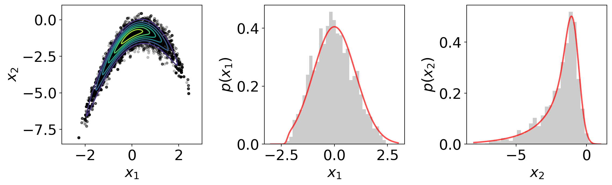
Combining Markov Chains
Let \(P_i\) be \(N\) Markov chains that share the same stationary distribution \(\pi\):
\[ P_i \pi = \pi, \,\,\, \mathbb{1}^T\!P_i = \mathbb{1}^T \tag{68}\]
The product of all chains, \(P=\prod_i P_i\) (here \(\prod_i\) symbolizes a matrix product), is also a Markov chain with the same stationary distribution:
\[ P\pi = \pi, \,\,\, \mathbb{1}^T\!P = \mathbb{1}^T \tag{69}\]
Therefore, the following algorithm will simulate \(P\) and therefore eventually \(\pi\):
\[\begin{align}\label{eq-markov-sequence} \begin{split} \tilde{x}^{(1)} &\sim P_1\bigl(\,\cdot\,, x^{(s)}\bigr) \\ \tilde{x}^{(2)} &\sim P_2\bigl(\,\cdot\,, \tilde{x}^{(1)}\bigr) \\ & \vdots \\ x^{(s+1)} &\sim P_N\bigl(\,\cdot\,, \tilde{x}^{(N-1)}\bigr) \\ \end{split} \end{align}\]
Coordinate-wise sampling
Let’s look at a special but important case. Assume that the sample space decomposes into a product of \(N\) sample spaces \(\mathcal X = \mathcal X_1 \times \cdots \times \mathcal X_N\) with associated variables \(x_i\) (\(i=1, \ldots, N\)) where \(x_i\) denotes a single variable or a group of variables that will be sampled jointly. The joint distribution of all variables is \(p(x) = p(x_1, \ldots, x_N)\).
By \(x_{\backslash{}i}\) we denote the variable vector obtained by omitting the \(i\)-th variable (or group of variables):
\[ x_{\backslash{} i} := \begin{pmatrix}x_1, \ldots, x_{i-1}, x_{i+1}, \ldots, x_N \end{pmatrix} \tag{70}\]
Then \(x_{\backslash{} i}\) follows the marginal distribution:
\[ p_{\backslash{} i}(x_{\backslash{} i}) = \int p(x_1, \ldots, x_N)\, d x_i \tag{71}\]
The marginal distribution of \(x_i\) is:
\[ p_{i}(x_{i}) = \int p(x_1, \ldots, x_N)\, d x_{\backslash{} i} \tag{72}\]
The conditional distribution of \(x_i\) also readily available:
\[ p_{i}(x_{i}\mid{}x_{\backslash{} i}) = \frac{p(x)}{p_{\backslash{} i}(x_{\backslash{} i})} \tag{73}\]
Let us consider a sequence of \(N\) Markov chains \(P_i\) where each chain only updates \(x_i\) and does not change \(x_{\backslash{} i}\):
\[ Q_i(y, x) = q_i(y_i, x_i; x_{\backslash{} i})\, \delta(y_{\backslash{} i} - x_{\backslash{} i}) \tag{74}\]
where we introduced a product of delta distributions:
\[ \delta(x_{\backslash{} i}) := \prod_{j\not= i} \delta(x_j) \]
and \(q_i(y_i, x_i; x_{\backslash{} i})\) is a Markov kernel on \(\mathcal X_i \times \mathcal X_i\) with \(x_{\backslash{} i}\) being treated like a set of parameters.
The Metropolis map of \(Q_i(y, x)\) is
\[\begin{align}\label{eq-coordinatewise-map} \begin{split} M[Q_i](y, x) &= \min\left\{Q_i(y, x), Q_i(x, y) \frac{p(y)}{p(x)} \right\} \\ &= \delta(y_{\backslash{} i}-x_{\backslash{} i})\, \min\left\{q_i(y_i, x_i; x_{\backslash{} i}), q_i(x_i, y_i; x_{\backslash{} i}) \frac{p_i(y_i\mid{}y_{\backslash{} i})\,p_{\backslash{} i}(y_{\backslash{} i})}{p_i(x_i \mid{} x_{\backslash{} i}) p_{\backslash{} i}(x_{\backslash{} i})} \right\} \\ &= \delta(y_{\backslash{} i}-x_{\backslash{} i})\, \min\left\{q_i(y_i, x_i; x_{\backslash{} i}), q_i(x_i, y_i; x_{\backslash{} i}) \frac{p_i(y_i\mid{}x_{\backslash{} i})}{p_i(x_i \mid{} x_{\backslash{} i})} \right\} \end{split} \end{align}\]
If we run the Metropolis-Hastings algorithm with \(Q_i\), we simulate a Markov chain only on the conditional distribution of the \(i\)-th variable (or group of variables). This involves a Markov kernel \(q_i\) on the corresponding subspace \(\mathcal X_i\) that could, in principle, depend on all of the current variables.
This produces a Markov chain with the correct stationary distribution, but since \(Q_i\) changes only the \(i\)-th variable, the resulting Markov chain is not ergodic. The trick is to update each parameter group successively using \(Q_i\) in each subspace \(\mathcal X_i\), and thereby produce a sequence of Metropolis maps, \(M[Q_i]\), that share a common target distribution. Simulation of \(M[Q_i]\) one after the other generates a simulation of the product chain, in a fashion analogous to equation (\(\ref{eq-markov-sequence}\)). This scheme is sometimes called Metropolis-within-Gibbs.
Let’s apply the coordinate-wise sampling scheme to the banana-shaped distribution using uniform proposals in each direction:
p = Banana()
Q = []
for i in range(2):
Q_i = lambda x, i=i, eps=2.: \
x + eps * np.random.uniform(-1.,1.,2) * np.eye(2)[i]
Q.append(Q_i)
x = np.zeros(2)
p_x = p(x)
samples = [x]
while len(samples) < 1e5:
for Q_i in Q:
y = Q_i(x)
p_y = p(y)
accept = np.log(np.random.uniform()) < p_y - p_x
if accept:
x, p_x = y, p_y
samples.append(x)
samples = np.array(samples)
samples = samples[int(0.2*len(samples)):]
# plot results
x = np.linspace(-3., 3., 200)
y = np.linspace(-8., 1., len(x))
grid = np.reshape(np.meshgrid(x, y), (2, -1)).T
pdf = p(grid).reshape(len(x), len(y))
pdf_x = compute_marginal(pdf, axis=0, vals=x)
pdf_y = compute_marginal(pdf, axis=1, vals=y)
kw_hist = dict(bins=50, color='k', alpha=0.2, density=True)
fig, ax = plt.subplots(1, 3, figsize=(12, 4))
#
ax[0].contour(x, y, np.exp(pdf))
ax[0].scatter(*samples.T, color='k', alpha=0.2, s=10)
ax[0].set_xlabel(r'$x_1$')
ax[0].set_ylabel(r'$x_2$')
#
ax[1].hist(samples[:,0], **kw_hist)
ax[1].plot(x, np.exp(pdf_x), color='r', alpha=0.7, lw=2)
ax[1].set_xlabel(r'$x_1$')
ax[1].set_ylabel(r'$p(x_1)$')
#
ax[2].hist(samples[:,1], **kw_hist)
ax[2].plot(y, np.exp(pdf_y), color='r', alpha=0.7, lw=2)
ax[2].set_xlabel(r'$x_2$')
ax[2].set_ylabel(r'$p(x_2)$')
#
fig.tight_layout()
Gibbs sampling
Gibbs sampling is a simple and powerful MCMC method that can be interpreted as a special variant of the component-wise MH algorithm outlined above. Gibbs sampling assumes that we can sample directly from the conditional distributions \(p_i(x_i \mid{} x_{\backslash{} i})\), and uses these as component-wise Markov chains:
\[ q_i(y_i, x_i; x_{\backslash{} i}) = p_i(y_i \mid{} x_{\backslash{} i}) \]
The acceptance ratio in the Metropolis map \(M[Q_i]\) (Eq. \(\ref{eq-coordinatewise-map}\)) simplifies to
\[ \frac{q_i(x_i, y_i; x_{\backslash{} i})}{q_i(y_i, x_i; x_{\backslash{} i})} \frac{p_i(y_i\mid{}x_{\backslash{} i})}{p_i(x_i\mid{}x_{\backslash{} i})} = \frac{p_i(x_i \mid{} x_{\backslash{} i})}{p_i(y_i \mid{} x_{\backslash{} i})} \frac{p_i(y_i\mid{}x_{\backslash{} i})}{p_i(x_i\mid{}x_{\backslash{} i})} = 1 \]
That is, all proposals are accepted - Gibbs sampling is rejection-free.
Algorithm: Gibbs sampling
Let \(p(x_1, \ldots, x_N)\) be the joint distribution of \(N\) random variables or groups of random variables \(x_i\in\mathcal X_i\) with conditional distributions \(p_i(x_i \mid{} x_{\backslash{} i})\), then the following iterative algorithm simulates a Markov chain whose stationary distribution is \(p(x_1, \ldots, x_N)\):
\[\begin{align}\label{eq-gibbs-sampling} \begin{split} x^{(s+1)}_1 &\sim p_1\bigl(\,\cdot\, \mid{} x^{(s)}_{\backslash{} 1}\bigr) \\ x^{(s+1)}_2 &\sim p_2\bigl(\,\cdot\, \mid{} {x}^{(s,s+1)}_{\backslash{} 2}\bigr) \\ & \vdots \\ x^{(s+1)}_N &\sim p_N\bigl(\,\cdot\, \mid{} {x}^{(s,s+1)}_{\backslash{} N}\bigr) \\ \end{split} \end{align}\]
where \({x}^{(s+1)}_i\) are the components of the next sample and
\[{x}^{(s,s+1)}_{\backslash{} i} = \begin{pmatrix}{x}^{(s+1)}_1, \ldots, {x}^{(s+1)}_{i-1}, x^{(s)}_{i+1}, \ldots, x^{(s)}_{N}\end{pmatrix}\]
so \({x}^{(s,s+1)}_{\backslash{} N} = x^{(s+1)}_{\backslash{} N}\).
Collapsed Gibbs Sampler
A variant of the Gibbs sampler (Eq. \(\ref{eq-gibbs-sampling}\)) is the collapsed Gibbs sampler where some of the conditional distributions \(p_i(x_i \mid{} x_{\backslash{} i})\) are replaced by a marginal distribution, e.g. \(p_i(x_i) = \int p(x_1, \ldots, x_N) dx_{\backslash{} i}\). This scheme is equally valid and rejection-free. See also the original paper by Jun S. Liu.
Example: Sampling a bivariate Gaussian model
In the following, let’s use Gibbs sampling to draw from a two-dimensional Gaussian distribution with general covariance matrix:
\[ p(x_1, x_2) = \frac{1}{2\pi\sigma_1\sigma_2\sqrt{1-\rho^2}} \exp\left\{-\frac{1}{2} \begin{pmatrix} x_1 - \mu_1 \\ x_2 - \mu_2\end{pmatrix}^T \begin{pmatrix} \sigma_1^2 & \sigma_1\sigma_2\rho \\ \sigma_1\sigma_2\rho & \sigma_2^2 \end{pmatrix}^{-1} \begin{pmatrix} x_1 - \mu_1 \\ x_2 -\mu_2 \end{pmatrix} \right\} \]
The conditional distributions are given by:
\[\begin{align*} p(x_1 \mid{} x_2) &= \frac{1}{\sqrt{2\pi\sigma_1^2(1-\rho^2)}} \exp\left\{-\frac{1}{2\sigma_1^2(1-\rho^2)} \bigl(x_1 - \mu_1 - \frac{\sigma_1}{\sigma_2}\rho (x_2 - \mu_2) \bigr)^2\right\} \\ p(x_2 \mid{} x_1) &= \frac{1}{\sqrt{2\pi\sigma_2^2(1-\rho^2)}} \exp\left\{-\frac{1}{2\sigma_2^2(1-\rho^2)} \bigl(x_2 - \mu_2 - \frac{\sigma_2}{\sigma_1}\rho (x_1 - \mu_1) \bigr)^2\right\} \end{align*}\]
and the marginal distributions are \(p_i(x_i) = \mathcal N(\mu_i, \sigma_i^2)\). We use the standard Gibbs sampler and the collapsed Gibbs samplers to generate samples from the joint bivariate Gaussian:
class Gaussian:
"""Bivariate Gaussian
"""
def __init__(self, mu = np.zeros(2), sigma1=1., sigma2=3., rho=0.95):
self.mu = mu
self.sigma = np.array([sigma1, sigma2])
self.rho = float(rho)
@property
def sigma1(self):
return self.sigma[0]
@property
def sigma2(self):
return self.sigma[1]
@property
def Sigma(self):
"""
Covariance matrix
"""
Sigma = np.diag([self.sigma1, self.sigma2])
Sigma = Sigma @ np.array([[1, self.rho], [self.rho, 1]]) @ Sigma
return Sigma
@property
def Lambda(self):
"""
Precision matrix
"""
precision = np.diag([1/self.sigma1, 1/self.sigma2]) / np.sqrt(1 - self.rho**2)
precision = precision @ np.array([[1, -self.rho], [-self.rho, 1]]) @ precision
return precision
def log_prob(self, x):
logp = -.5 * np.sum(x * x.dot(self.Lambda), -1)
return logp
def sample_conditional(self, x, index=0):
ratio = self.rho * self.sigma[index] / self.sigma[1-index]
mu = self.mu[index] + ratio * (x[1-index] - self.mu[1-index])
sigma = np.sqrt(1-self.rho**2) * self.sigma[index]
return np.random.standard_normal() * sigma + mu
def sample_marginal(self, index=0):
mu = self.mu[index]
sigma = self.sigma[index]
return np.random.standard_normal() * sigma + mu
def compute_marginal(prob, axis=0, x=None):
marginal = logsumexp(prob, axis=axis)
marginal -= logsumexp(marginal)
if x is not None:
marginal -= np.log(x[1]-x[0])
return marginal
pdf = Gaussian(sigma1=1., sigma2=5., rho=0.95)
x = np.linspace(-1., 1., 100) * 3 * pdf.sigma1
y = np.linspace(-1., 1., 100) * 3 * pdf.sigma2
X, Y = np.meshgrid(x, y)
grid = np.transpose([X.flatten(), Y.flatten()])
prob = pdf.log_prob(grid).reshape(len(x), -1)
samples = [(20., 90.)]
while len(samples) < 1e4:
newstate = list(samples[-1])
for index in [0, 1]:
newstate[index] = pdf.sample_conditional(newstate, index)
samples.append(tuple(newstate))
samples = np.array(samples)
logp = pdf.log_prob(samples)
burnin = int(0.1*len(samples))
kw_hist = dict(bins=30, color='k', density=True, alpha=0.2)
fig, ax = plt.subplots(2, 2, figsize=(10, 10))
ax = list(ax.flat)
#
ax[0].scatter(*samples.T, color='k', alpha=0.3)
ax[0].contour(x, y, np.exp(prob))
ax[0].set_xlabel(r'$x_1$')
ax[0].set_ylabel(r'$x_2$')
#
ax[1].plot(logp[:50], color='k', lw=3, alpha=0.7)
ax[1].set_xlabel(r'iteration $s$')
ax[1].set_ylabel(r'$\log p(x_1^{(s)}, x_2^{(s)})$')
#
ax[2].hist(samples[burnin:,0], **kw_hist)
ax[2].plot(x, np.exp(compute_marginal(prob, 1, x)), color='r')
ax[2].set_xlabel(r'$x_1$')
ax[2].set_ylabel(r'$p_1(x_1)$')
#
ax[3].hist(samples[burnin:,1], **kw_hist)
ax[3].plot(y, np.exp(compute_marginal(prob, 0, y)), color='r')
ax[3].set_xlabel(r'$x_2$')
ax[3].set_ylabel(r'$p_2(x_2)$')
#
fig.tight_layout()
This collapsed Gibbs sampler uses the marginal distribution to sample \(x_1\) and the conditional distribution to sample \(x_2\):
# collapsed Gibbs 1
samples = [(20., 90.)]
while len(samples) < 1e4:
newstate = list(samples[-1])
newstate[0] = pdf.sample_marginal(0)
newstate[1] = pdf.sample_conditional(newstate, 1)
samples.append(tuple(newstate))
samples = np.array(samples)
logp = pdf.log_prob(samples)
burnin = int(0.1*len(samples))
fig, ax = plt.subplots(2, 2, figsize=(10, 10))
ax = list(ax.flat)
#
ax[0].scatter(*samples.T, color='k', alpha=0.3)
ax[0].contour(x, y, np.exp(prob))
ax[0].set_xlabel(r'$x_1$')
ax[0].set_ylabel(r'$x_2$')
#
ax[1].plot(logp[:50], color='k', lw=3, alpha=0.7)
ax[1].set_xlabel(r'iteration $s$')
ax[1].set_ylabel(r'$\log p(x_1^{(s)}, x_2^{(s)})$')
#
ax[2].hist(samples[burnin:,0], **kw_hist)
ax[2].plot(x, np.exp(compute_marginal(prob, 1, x)), color='r')
ax[2].set_xlabel(r'$x_1$')
ax[2].set_ylabel(r'$p_1(x_1)$')
#
ax[3].hist(samples[burnin:,1], **kw_hist)
ax[3].plot(y, np.exp(compute_marginal(prob, 0, y)), color='r')
ax[3].set_xlabel(r'$x_2$')
ax[3].set_ylabel(r'$p_2(x_2)$')
#
fig.tight_layout()
This collapsed Gibbs sampler uses the marginal distribution to sample \(x_2\) and the conditional distribution to sample \(x_1\):
# collapsed Gibbs 2
samples = [(20., 90.)]
while len(samples) < 1e4:
newstate = list(samples[-1])
newstate[1] = pdf.sample_marginal(1)
newstate[0] = pdf.sample_conditional(newstate, 0)
samples.append(tuple(newstate))
samples = np.array(samples)
logp = pdf.log_prob(samples)
burnin = int(0.1*len(samples))
fig, ax = plt.subplots(2, 2, figsize=(10, 10))
ax = list(ax.flat)
#
ax[0].scatter(*samples.T, color='k', alpha=0.3)
ax[0].contour(x, y, np.exp(prob))
ax[0].set_xlabel(r'$x_1$')
ax[0].set_ylabel(r'$x_2$')
#
ax[1].plot(logp[:50], color='k', lw=3, alpha=0.7)
ax[1].set_xlabel(r'iteration $s$')
ax[1].set_ylabel(r'$\log p(x_1^{(s)}, x_2^{(s)})$')
#
ax[2].hist(samples[burnin:,0], **kw_hist)
ax[2].plot(x, np.exp(compute_marginal(prob, 1, x)), color='r')
ax[2].set_xlabel(r'$x_1$')
ax[2].set_ylabel(r'$p_1(x_1)$')
#
ax[3].hist(samples[burnin:,1], **kw_hist)
ax[3].plot(y, np.exp(compute_marginal(prob, 0, y)), color='r')
ax[3].set_xlabel(r'$x_2$')
ax[3].set_ylabel(r'$p_2(x_2)$')
#
fig.tight_layout()
Auxiliary Variables
The idea of sampling methods that use auxiliary variables is to introduce new variables rather than marginalizing them out. The target distribution is \(p(x)\) defined over sample space \(\mathcal X\). But it might be beneficial to introduce helper variables \(y\) and consider \(p(x, y)\) defined over the extended sample space \(\mathcal X \times{} \mathcal Y\) where
\[ p(x) = \int_{\mathcal{Y}} p(x, y)\, dy \]
If we can generate samples \(\bigl(x^{(s)}, y^{(s)}\bigr) \sim p(x, y)\), then a valid estimator for expectations of \(p(x)\) is
\[ \mathbb{E}_p[f] \approx \frac{1}{S} \sum_{s=1}^S f\bigl(x^{(s)}\bigr)\, . \]
Why is this helpful? We can use Gibbs sampling to generate samples from \(p(x, y)\):
\[\begin{align}\label{eq-gibbs-auxiliary} \begin{split} x^{(s+1)} &\sim p\bigl(x \mid{} y^{(s)}\bigr) \\ y^{(s+1)} &\sim p\bigl(y \mid{} x^{(s+1)}\bigr) \\ \end{split} \end{align}\]
where the marginal distributions might be easier to simulate than \(p(x)\).
Example: Student-t distribution
The Student-t distribution is defined as
\[ p(x \mid{} \nu) = \frac{1}{Z(\nu)} \left(1 + \frac{x^2}{\nu}\right)^{-\frac{\nu+1}{2}} \]
with a normalization constant \(Z(\nu)\) that depends on the degrees of freedom \(\nu > 0\).
This integral can be written as a scale-mixture of normals:
\[ \begin{aligned} f(x ; \alpha, \beta) &= \int \underbrace{\sqrt{\frac{s}{2\pi}}\, e^{-\frac{s}{2} x^2 }}_{\text{Gaussian}}\,\,\, \underbrace{\frac{\beta^\alpha}{\Gamma(\alpha)} s^{\alpha -1} e^{-\beta s}}_{\text{Gamma distribution}} ds \\ &= \frac{\beta^\alpha}{\Gamma(\alpha)\,\sqrt{2\pi}} \int s^{\frac{2\alpha + 1}{2} - 1}\,\, \exp\left\{-s(\beta + x^2/2)\right\} ds \\ &= \frac{\beta^\alpha}{\Gamma(\alpha)\,\sqrt{2\pi}} \frac{\Gamma(\alpha+1/2)}{\left(\beta + x^2/2\right)^{\frac{2\alpha+1}{2}}} \\ &= \frac{1}{\sqrt{2\pi\beta}} \frac{\Gamma(\alpha+1/2)}{\Gamma(\alpha)} \left(1 + x^2/2\beta\right)^{-(\frac{2\alpha+1}{2})} \end{aligned} \]
So \(f(x; \alpha, \beta)\) is identical to \(p(x\mid{}\nu)\) for \(\alpha=\nu/2\) and \(\beta=\nu/2\).
The joint distribution is
\[ p(x, s) = p(x \mid{} s) p(s) = \mathcal{N}(x; 0, s^{-1/2})\, \mathcal{G}(s; \nu/2, \nu/2) \]
The conditional distributions are \(\mathcal{N}(x; 0, s^{-1/2})\) and \(\mathcal{G}(s; (\nu+1)/2, (\nu+x^2)/2)\).
# sample student t with auxiliary variable
nu = 2.
alpha = nu / 2
beta = nu / 2
log_target = lambda x : - 0.5 * (nu+1.) * np.log(1 + x**2/nu)
# standard Gibbs sampler
x = 0.
samples = []
while len(samples) < 1e5:
s = np.random.gamma(alpha+0.5, 1/(beta + 0.5*x**2))
x = np.random.standard_normal() / np.sqrt(s)
samples.append(x)
# collapsed Gibbs sampler
s = np.random.gamma(alpha, 1/beta, size=len(samples))
samples2 = np.random.standard_normal(len(s)) / np.sqrt(s)
burnin = int(0.1*len(samples))
t = np.linspace(-1., 1., 1000) * 10
p = log_target(t)
p -= logsumexp(p) + np.log(t[1]-t[0])
p = np.exp(p)
kw = dict(xlim=(-10., 10.))
kw_hist = dict(bins=1000, density=True, color='k', alpha=0.2)
fig, ax = plt.subplots(1, 2, figsize=(8, 4), sharey='all', subplot_kw=kw)
ax[0].hist(samples[burnin:], **kw_hist)
ax[1].hist(samples2[burnin:], **kw_hist)
for a in ax:
a.plot(t, p, color='r')
fig.tight_layout();
Lecture 7: Hamiltonian Monte Carlo
Outline
- Recap: MCMC + Gibbs Sampling
- More on auxiliary variable methods
- Hamiltonian Monte Carlo
Recap
Metropolis-Hastings algorithm: Take (almost) any Markov chain \(Q\) (proposal chain) and map it to a new Markov chain \(M[Q]\) with a desired proposal distribution \(p\): \[ M[Q](y, x) = Q(y, x) \, \min\left\{1, \frac{Q(x, y)}{Q(y, x)} \frac{p(y)}{p(x)} \right\},\,\,\, y\not= x \]
Metropolis-within-Gibbs: Multiple proposal kernels \(P_i\) that have the same stationary distribution \(p\) can be combined to produce a new kernel \(P=\prod_i P_i\) with the same stationary distribution. A special case is to use proposal chains \(Q_i\) that only update a group of variables \(x_i\) and leave the other variables \(x_{\setminus i}\) untouched: \[ Q_i(y, x) = \delta(y_{\setminus i} - x_{\setminus i})\, q_i(y_i, x_i; x_{\setminus i}) \] The Metropolis map of \(Q_i\) simulates a Markov chain in the subspace \(\mathcal X_i\) with proposal kernel \(q_i\).
Gibbs sampling: A special case is \(q_i(y_i, x_i; x_{\setminus i}) = p_i(y_i\mid{}x_{\setminus i})\) (the proposal is the conditional distribution \(p_i\) of the \(i\)-th group of variables), which results in proposals that are always accepted.
Auxiliary variable methods
The idea of auxiliary variable methods is to introduce helper variables \(y\in\mathcal Y\) that facilitate sampling. The joint distribution \(p(x, y)\) over the extended sample space \(\mathcal X \times{} \mathcal Y\) has to be designed such that
\[ p(x) = \int_{\mathcal{Y}} p(x, y)\, dy\, . \]
Samples \(\bigl(x^{(s)}, y^{(s)}\bigr) \sim p(x, y)\) can then be used to estimate expectations with respect to \(p(x)\):
\[ \mathbb{E}_p[f] = \int_{\mathcal X} f(x)\, p(x)\, dx = \int_{\mathcal X \times \mathcal Y} f(x)\, p(x, y)\, dx dy \approx \frac{1}{S} \sum_{s=1}^S f\bigl(x^{(s)}\bigr)\, . \]
Why is this helpful? We can use Gibbs sampling to generate samples from \(p(x, y)\):
\[\begin{align}\label{eq-gibbs-auxiliary2} \begin{split} x^{(s+1)} &\sim p\bigl(x \mid{} y^{(s)}\bigr) \\ y^{(s+1)} &\sim p\bigl(y \mid{} x^{(s+1)}\bigr) \\ \end{split} \end{align}\]
where the marginal distributions might be easier to simulate than \(p(x)\).
Example: Swendsen-Wang algorithm
An example of an auxiliary variable method is the Swendsen-Wang algorithm for sampling Ising models. The Ising model (see lecture 1) is defined on a two-dimensional square lattice of length \(L\). The sample space is \(\mathcal X = \{-1, +1\}^{L \times L}\). The probability is
\[ p(x) \propto \exp\left\{\beta \sum_{i\sim j} x_i x_j \right\} \]
where \(i\sim j\) indicates if two nodes \(i\) and \(j\) are nearest neighbors on the square lattice (assuming periodic boundary conditions). In the first lecture, we saw that it is challenging to simulate the Ising model for \(\beta \simeq 0.44\), because of a phase transition: For \(\beta\) larger than the critical value, spin variables become highly correlated which makes the sampling quite challenging.
The sampling strategy used in lecture 1 can be interpreted as “Metropolis-within-Gibbs”: The entire 2D lattice is scanned (a loop over all lattice sites is called a sweep). At each lattice site, we try to flip the spin: If \(x_i\) is the current value of spin \(i\), then the flipped value is \(x_i'=-x_i\); all other spin variables are unchanged. That is, the proposal kernel \(Q_i\) only affects a single site and is symmetric and deterministic. A spin flip is accepted with probability:
\[ \frac{p(x')}{p(x)} = \exp\left\{\beta\sum_{i\sim j} (x_i'x_j' - x_i x_j) \right\} = \exp\left\{-2\beta x_i S_i \right\} \]
where \(S_i = \sum_{j\sim i} x_j\) is the total spin of the nearest neighbors, which can be evaluated very efficiently.
%load_ext CythonThe Cython extension is already loaded. To reload it, use:
%reload_ext Cython%%cython
cimport cython
import numpy as np
cimport numpy as np
import matplotlib.pylab as plt
from libc.math cimport exp
from libc.stdlib cimport rand
cdef extern from "limits.h":
int RAND_MAX
@cython.boundscheck(False)
@cython.wraparound(False)
def ising_energy(np.int64_t[:, :] x):
cdef int N = x.shape[0]
cdef int M = x.shape[1]
cdef int E = 0
cdef int i, j
for i in range(N):
for j in range(M):
E -= x[i,j] * (x[i,(j+1)%M] + x[(i+1)%N, j])
return E
@cython.boundscheck(False)
@cython.wraparound(False)
def ising_sweep(np.int64_t[:, :] x, float beta=0.4):
cdef int N = x.shape[0]
cdef int M = x.shape[1]
cdef int start_i, start_j, i, j
for start_i in range(2):
for start_j in range(2):
for i in range(start_i, N, 2):
for j in range(start_j, M, 2):
ising_flip(x, i, j, beta)
return np.array(x)
@cython.boundscheck(False)
@cython.wraparound(False)
cdef ising_flip(np.int64_t[:, :] x, int i, int j, float beta):
cdef int N = x.shape[0]
cdef int M = x.shape[1]
cdef int S = x[(i-1)%N,j] + x[(i+1)%N,j] + x[i,(j-1)%M] + x[i,(j+1)%M]
if exp(-2 * beta * x[i, j] * S) * RAND_MAX > rand():
x[i, j] *= -1In file included from /opt/hostedtoolcache/Python/3.10.9/x64/lib/python3.10/site-packages/numpy/core/include/numpy/ndarraytypes.h:1948,
from /opt/hostedtoolcache/Python/3.10.9/x64/lib/python3.10/site-packages/numpy/core/include/numpy/ndarrayobject.h:12,
from /opt/hostedtoolcache/Python/3.10.9/x64/lib/python3.10/site-packages/numpy/core/include/numpy/arrayobject.h:5,
from /home/runner/.cache/ipython/cython/_cython_magic_437ff226c04ce7b8553a40470de4e368.c:770:
/opt/hostedtoolcache/Python/3.10.9/x64/lib/python3.10/site-packages/numpy/core/include/numpy/npy_1_7_deprecated_api.h:17:2: warning: #warning "Using deprecated NumPy API, disable it with " "#define NPY_NO_DEPRECATED_API NPY_1_7_API_VERSION" [-Wcpp]
17 | #warning "Using deprecated NumPy API, disable it with " \
| ^~~~~~~To improve the sampling of spin configuration, we introduce auxiliary variables \(b_{ij} \in \{0, 1\}\), also called bond variables, for each pair of spins \(i\) and \(j\) that are neighbors on the square lattice: \(i\sim j\). The bond variables indicate if two neighboring spins \(x_i\), \(x_j\) are aligned (i.e. have the same spin or color):
\[ b_{ij} = \left\{\begin{array}{c c} 1 & \text{if } x_i = x_j \\ 0 & \text{else} \\ \end{array}\right. \]
The bond variables can be seen as Bernoulli coins that are tossed independently of each other. For spins that are aligned, the probability for forming a bond between sites \(i\) and \(j\), \(b_{ij}=1\), is \(p=1-e^{-2\beta}\). So there is a bias for \(b_{ij}\) to form that increases with increasing inverse temperature \(\beta\). For spins that are not aligned, the associated bond is not formed with probability one. The overall probability is
\[ p(x, b) \propto \prod_{i\sim j} [p\delta(x_i, x_j)]^{b_{ij}} (1-p)^{1-b_{ij}} \]
where \(\delta(x_i, x_j)=1\) if \(x_i=x_j\) and \(\delta(x_i,x_j)=0\) otherwise. For the Ising model with \(x_i=\pm 1\), we can write
\[ \delta(x_i, x_j) = \frac{x_ix_j + 1}{2}\, . \]
To verify that the marginal distribution over \(x\) is correct, let us compute it by summing over \(b_{ij}\):
\[\begin{align*} \sum_{b} p(x, b) &\propto \sum_{b} \prod_{i\sim j} [p\delta(x_i, x_j)]^{b_{ij}} (1-p)^{1-b_{ij}}\\ &= \prod_{i\sim j} [p\delta(x_i, x_j) + 1 - p] \\ &= \prod_{i\sim j} [1-p]^{1-\delta(x_i, x_j)} \\ &= \prod_{i\sim j} \exp\left\{-2\beta(1-\delta(x_i, x_j))\right\} \\ &= \prod_{i\sim j} \exp\left\{-\beta(1-x_ix_j)\right\} \\ &\propto \prod_{i\sim j} \exp\left\{\beta x_ix_j\right\} \\ \end{align*}\]
The conditional distribution of a single bond variable \(b_{ij}\) is
\[ p(b_{ij} \mid{} x) \propto [p\delta(x_i, x_j)]^{b_{ij}} (1-p)^{1-b_{ij}} \]
These can be updated by simply generating Bernoulli variables for aligned spins, the other bond variables are set to zero.
The conditional distribution of the spins is sampled by assigning all spin variables that belong to the same connected component of the bond network to a single, randomly selected value \(\pm 1\).
# pure Python implementation of Swendsen-Wang
import scipy.sparse as sparse
class SwendsenWang:
def __init__(self, L):
self.L = int(L)
# create edges
iy, ix = np.meshgrid(np.arange(L), np.arange(L))
i = np.arange(L**2)
i = np.concatenate([i, i])
j = [(L*ix + (iy+1)%L).flatten(), (L*((ix+1)%L) + iy).flatten()]
j = np.concatenate(j)
self.edges = np.sort([i, j], 0)
def adjacency_matrix(self, bonds=None):
i, j = self.edges
if bonds is not None:
i, j = i[bonds], j[bonds]
return sparse.csr_matrix(
(np.ones_like(i), (i, j)), shape=(self.L**2, self.L**2))
def sample_bonds(self, x, beta=1.):
x = x.reshape(-1,)
i, j = self.edges
aligned = (x[i] == x[j])
prob = aligned * (1-np.exp(-2*beta))
return np.random.random(len(prob)) < prob
def sample_spins(self, x, beta=0.):
x = x.copy().flatten()
bonds = self.sample_bonds(x, beta)
adjacency = self.adjacency_matrix(bonds)
n_comp, labels = sparse.csgraph.connected_components(
adjacency, directed=False, return_labels=True)
for label in range(n_comp):
x[labels==label] = np.random.choice([-1, 1])
return x.reshape(self.L, -1)# For comparison: mean energy per spin in infinite lattice from Onsager theory
# https://en.wikipedia.org/wiki/Square_lattice_Ising_model#Exact_solution
from scipy import integrate
def energy_per_spin(beta):
"""Average energy per lattice site according to Onsager.
"""
if np.iterable(beta):
return np.array(list(map(energy_per_spin, beta)))
# scalar beta
def f(theta):
k = 1 / np.sinh(2*beta)**2
return 1 / np.sqrt(1 - 4*k/(1+k)**2 * np.sin(theta)**2)
I = integrate.quad(f, 0., 0.5*np.pi)[0]
I *= 2 * (2*np.tanh(2*beta)**2 - 1) / np.pi
return - (1 + I) / np.tanh(2*beta)L = 2**7
x = np.random.choice([-1, 1], (L, L))
# inverse temperature close to critical value
beta = 0.5 * np.log(1 + 2**(1/2))
n_iter = 30
# starting from random configuration (beta=0.) using Metropolis
# algorithm to approach distribution at critical beta
x_MH = x.copy()
E_MH = [ising_energy(x_MH)/L**2]
for _ in range(n_iter):
x_MH = ising_sweep(x_MH)
E_MH.append(ising_energy(x_MH)/L**2)
E_MH = np.array(E_MH)
# starting from random configuration (beta=0.) using Swendsen-
# Wang to approach distribution at critical beta
sampler = SwendsenWang(L)
x_SW = x.copy()
E_SW = [ising_energy(x_SW)/L**2]
for _ in range(n_iter):
x_SW = sampler.sample_spins(x_SW, beta)
E_SW.append(ising_energy(x_SW)/L**2)
E_SW = np.array(E_SW)betas = [np.linspace(1e-3, 1., 101),
np.linspace(0.2, 0.8, 101)][0]
U = energy_per_spin(betas)
plt.rc('font', size=16)
fig, ax = plt.subplots(1, 2, figsize=(10, 5), sharey='all')
ax = list(ax.flat)
ax[0].plot(E_MH, lw=3, label='Metropolis')
ax[0].plot(E_SW, lw=3, label='Swendsen-Wang')
ax[0].set_xlabel(r'iteration $s$')
ax[0].set_ylabel(r'energy per spin $E/L^2$')
ax[0].legend()
ax[1].scatter(beta, E_MH[-1], s=200, label='Metropolis')
ax[1].scatter(beta, E_SW[-1], s=200, label='Swendsen-Wang')
ax[1].plot(betas, U, color='r', ls='--', lw=3, label='Onsager')
ax[1].set_xlabel(r'inverse temperature $\beta$')
ax[1].legend()
fig.tight_layout()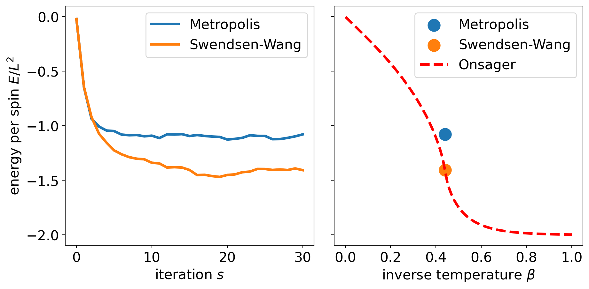
plt.rc('image', interpolation=None, cmap='gray')
kw = dict(xticks=[], yticks=[])
fig, ax = plt.subplots(1, 2, figsize=(10, 5), subplot_kw=kw)
ax[0].set_title('Metropolis')
ax[0].imshow(x_MH.reshape(L, L))
ax[1].set_title('Swendsen-Wang')
ax[1].imshow(x_SW.reshape(L, L))
fig.tight_layout()/tmp/ipykernel_1901/3345378395.py:1: MatplotlibDeprecationWarning: Support for setting an rcParam that expects a str value to a non-str value is deprecated since 3.5 and support will be removed two minor releases later.
plt.rc('image', interpolation=None, cmap='gray')
Hamiltonian Monte Carlo
Another auxiliary variable method is Hamiltonian Monte Carlo (HMC) also known as Hybrid Monte Carlo. HMC is among the most widely used methods for sampling probabilistic models over continuous sample spaces. Radford Neal, one of the inventors of HMC, has written a nice introduction that can be found here.
The idea of HMC is to exploit the following physical analogy: we interpret
\[ E(x) = - \log p(x) \tag{75}\]
as a potential energy function of a physical system with degrees of freedom \(x\). Typically, \(x\in\mathbb{R}^D\).
We introduce auxiliary variables \(v\in\mathbb{R}^D\) that follow a \(D\)-dimensional standard Gaussian distribution:
\[ p(v) = (2\pi)^{-D/2} \exp\left\{-\|v\|^2 / 2 \right\} \]
and construct the joint distribution:
\[ p(x, v) = p(x)\, p(v) \propto \exp\left\{- E(x) - \|v\|^2 / 2 \right\}\, . \tag{76}\]
It seems that we didn’t gain anything by introducing \(v\) other than artificially blowing up the problem and writing the joint distribution in some fancy, pseudo-physical way. However, the major insight comes from the fact that if we stretch the physical analogy further, the joint distribution can be viewed as the canonical ensemble defined over phase space:
\[ p(x, v) \propto \exp\left\{- H(x, v)\right\}\,\,\,\text{where}\,\,\, H(x, v) := \underbrace{\tfrac{1}{2} \|v\|^2}_{\text{kinetic energy}} + \underbrace{E(x)}_{\text{potential energy}}\, . \tag{77}\]
Phase space is the joint space of positions \(x\) and momenta (velocities) \(v\) in our physical analogy, and the total energy is given by the sum of the kinetic and potential energy is called the Hamiltonian of the system.
Hamiltonian dynamics
Classical systems with \(D\) degrees of freedom evolve in time by the action of the Hamiltonian \(H(x, v)\). Trajectories in phase space are given by the time evolution of velocities and positions, \(v(t)\) and \(x(t)\). The dynamics of the system is described by Hamilton’s equations of motion (an elegant generalization of Newton dynamics):
\[\begin{align}\label{eq-hmc-dynamics} \begin{split} \dot{v} &= \frac{d}{dt} v = - \nabla_x H(x, v) \\ \dot{x} &= \frac{d}{dt} x = + \nabla_v H(x, v) \\ \end{split} \end{align}\]
where \(d/dt\) is the derivative with respect to time \(t\) and abbreviated by a dot (as in \(\dot{x}\)), and \(\nabla_x, \nabla_v\) are the gradients with respect to positions \(x\) and momenta \(v\).
The hallmark of Hamiltonian dynamics (Eq. \(\ref{eq-hmc-dynamics}\)) of an isolated classical system is that it conserves the total energy. This is clear from
\[ \frac{d}{dt} H = (\nabla_x H(x, v))^T\dot{x} + (\nabla_v H(x, v))^T\dot{v} = (\nabla_x H)^T\!(\nabla_v H) - (\nabla_v H)^T\!(\nabla_x H) = 0 \]
where we used the chain rule to compute the total derivative of the Hamiltonian with respect to time (note that there is no explicit time dependence of \(H\), i.e. \(\partial_t H=0\)).
The trick of HMC is to sample the momenta \(v\) from the collapsed distribution
\[ v^{(s)} \sim \mathcal N(0, I_D) \]
and evolve the system to a proposal state starting from the previous positions \(x^{(s)}\) and the newly sampled momenta \(v^{(s)}\). If the time evolution is based on Hamiltonian dynamics, we know that the Hamiltonian \(H(x, v)\) is conserved. So if \(H(x^{(s)}, v^{(s)})\) is the total energy of the current state, then the Hamiltonian of the proposal state \(\bigl(x(T), v(T)\bigr)\) where \(T\) is the integration time will be the same:
\[ H\bigl(x(T), v(T)\bigr) = H\bigl(x^{(s)}, v^{(s)}\bigr)\,\,\,\text{where}\,\,\, \bigl(x^{(s)}, v^{(s)}\bigr) \xrightarrow[\text{dynamics}]{\text{Hamiltonian}} \bigl(x(T), v(T)\bigr) \,. \]
The probability for accepting \(\bigl(x(T), v(T)\bigr)\) as new state \(\bigl(x^{(s+1)}, v^{(s+1)}\bigr)\) is given by the ratio
\[ \frac{p\bigl(x(T),v(T)\bigr)}{p\bigl(x^{(s)}, y^{(s)}\bigr)} = \exp\left\{-\Delta H \right\}\,\,\, \text{with}\,\,\, \Delta H = H\bigl(x(T), v(T) \bigr) - H\bigl(x^{(s)}, v^{(s)} \bigr)\, . \]
This ratio doesn’t depend on the proposal probabilities, because Hamiltonian dynamics is symplectic, i.e. the chance for going from one point in phase space to another point in phase space is the same for the reverse dynamics (volumes in phase space don’t change under Hamiltonian dynamics, the dynamics of the system is incompressible). So the proposal chain is symmetric and proposal probabilities cancel out in the acceptance step.
Since the total energy of the start and proposal state are the same, we have \(\Delta H = 0\) and the proposed state will be accepted with probability one.
Example: Harmonic oscillator
Let us consider a concrete example whose dynamics can be solved exactly: the harmonic oscillator which corresponds to a Gaussian model:
\[ H(x, v) = v^2 / 2 + k x^2 / 2 \]
with the following dynamics:
\[\begin{align} \begin{split} \dot{x} &= +\frac{\partial H}{\partial v} = v \\ \dot{v} &= -\frac{\partial H}{\partial x} = -k x\\ \end{split} \end{align}\]
In matrix-vector form we have
\[ \frac{d}{dt} \begin{pmatrix} v\\ x\end{pmatrix} = \begin{pmatrix} 0 & -k \\ 1 & 0 \\ \end{pmatrix} \begin{pmatrix} v\\ x\end{pmatrix} = A \begin{pmatrix} v\\ x\end{pmatrix}\,\,\,\Rightarrow\,\,\, \begin{pmatrix} v(t)\\ x(t)\end{pmatrix} = \exp\{tA\} \begin{pmatrix} v_0\\ x_0\end{pmatrix} \tag{78}\]
where \(\exp\{tA\}\) is a matrix exponential \(\exp\{tA\} = \sum_n \frac{t^n}{n!} A^n\). The matrix powers have a simple structure:
\[ A^{2n} = (-k)^n I, \,\,\, A^{2n+1} = (-k)^n A \]
So the solution of the Hamilton equations is (with \(\omega = \sqrt{k}\)):
\[\begin{eqnarray*}\label{eq-oscillator2} \begin{pmatrix} v(t)\\ x(t)\end{pmatrix} &=& I \sum_{n} \frac{(-)^n}{(2n)!} (\omega t)^{2n} \begin{pmatrix} v_0\\ x_0\end{pmatrix} + \omega^{-1}A \sum_{n} \frac{(-)^n}{(2n+1)!} (\omega t)^{2n+1} \begin{pmatrix} v_0\\ x_0\end{pmatrix} \\ &=& \biggl(I \cos(\omega t) + \omega^{-1}A \sin(\omega t)\biggr) \begin{pmatrix} v_0\\ x_0\end{pmatrix} \\ &=& \begin{pmatrix} \cos(\omega t) & -\omega\sin(\omega t)\\ \sin(\omega t)/\omega & \cos(\omega t) \\ \end{pmatrix} \begin{pmatrix} v_0\\ x_0\end{pmatrix} \end{eqnarray*}\]
The Hamiltonian \(H(x, v)\) is indeed conserved (Exercise).
We can now sample a Gaussian model by exploiting the physical analogy to the harmonic oscillator. We pretend that we can only sample the momenta from a standard normal distribution, and then use the dynamics of the harmonic oscillator to generate a proposal state that is accepted with probability one:
plt.rc('image', cmap='viridis')
class Oscillator:
def __init__(self, k=1., T=1.):
self.k = float(k)
self.T = float(T)
self.A = np.array([[0, 1], [-self.k, 0]])
self.w = np.sqrt(k)
def propagate(self, x, v, T=None):
T = self.T if T is None else float(T)
U = np.array([[np.cos(self.w*T), np.sin(self.w*T)/self.w],
[-np.sin(self.w*T)*self.w, np.cos(self.w*T)]])
return U.dot([x, v])
def calc_hamiltonian(self, x, v):
return 0.5 * v**2 + 0.5 * self.k * x**2
def gradient(self, x):
return self.k * x
k = (10., 0.1)[1]
T = 1000.
x0 = 10.
osci = Oscillator(k, T)
samples = [(x0, np.random.standard_normal())]
while len(samples) < 1e4:
x, v = osci.propagate(*samples[-1])
v = np.random.standard_normal()
samples.append((x, v))
samples = np.array(samples)
sigma = 1 / osci.k**0.5
x = np.linspace(-1, 1., 1000) * 4 * sigma
p_x = np.exp(-0.5 * x**2 / sigma**2 - 0.5 * np.log(2*np.pi*sigma**2))
v = np.linspace(-1, 1., 1000) * 4
p_v = np.exp(-0.5 * v**2 - 0.5 * np.log(2*np.pi))
burnin = 200
kw_hist = dict(bins=20, color='k', density=True, alpha=0.2)
fig, ax = plt.subplots(1, 3, figsize=(12, 4))
#
ax[0].plot(*samples[:burnin].T, color='k', alpha=0.2)
ax[0].scatter(*samples[:burnin].T, c=np.linspace(0., 1., len(samples[:burnin])), alpha=1.)
ax[0].set_xlabel(r'$x^{(s)}$')
ax[0].set_ylabel(r'$v^{(s)}$')
#
ax[1].hist(samples[burnin:,0], **kw_hist)
ax[1].plot(x, p_x, color='r')
ax[1].set_xlabel(r'$x^{(s)}$')
#
ax[2].hist(samples[burnin:,1], **kw_hist)
ax[2].plot(v, p_v, color='r')
ax[2].set_xlabel(r'$v^{(s)}$')
#
fig.tight_layout()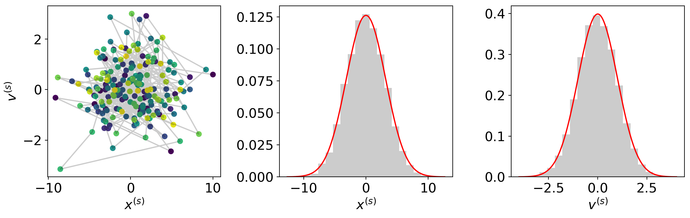
Lecture 8: Hamiltonian Monte Carlo continued
Outline
- Hamiltonian Monte Carlo continued
- Practical Issues (convergence, diagnostic checks)
Recap
In the last lecture we’ve looked at the harmonic oscillator:
import numpy as np
import matplotlib.pylab as plt
class Oscillator:
def __init__(self, k=1., T=1.):
self.k = float(k)
self.T = float(T)
self.A = np.array([[0, 1], [-self.k, 0]])
self.w = np.sqrt(k)
def propagate(self, x, v, T=None):
T = self.T if T is None else float(T)
U = np.array([[np.cos(self.w*T), np.sin(self.w*T)/self.w],
[-np.sin(self.w*T)*self.w, np.cos(self.w*T)]])
return U.dot([x, v])
def calc_hamiltonian(self, x, v):
return 0.5 * v**2 + 0.5 * self.k * x**2
def gradient(self, x):
return self.k * x
k = (10., 0.1)[1]
T = 1000.
x0 = 10.
osci = Oscillator(k, T)Leapfrog integrator
It is only rarely possible to solve Hamilton’s equations of motion in closed form. In practice, we often have to resort to numerical integration methods to solve this system of ordinary differential equations.
The crucial feature for making HMC work properly is the conservation of phase space volume. If phase space volume is not conserved, symmetry of the proposal chain is no longer guaranteed, and we would have to take into account the forward and backward probabilities in the acceptance ratios. These probabilities cannot be computed for general systems. Therefore, we have to look out for symplectic integrators that solve Hamilton’s equations of motion numerically but still conserve phase-space volume.
Leapfrog integration is a simple symplectic integration scheme that is often used as an integrator in HMC. The leapfrog integrator solves a finite-difference version of Hamilton’s equations of motion:
\[\begin{align}\label{eq-leapfrog} \begin{split} v(t+\epsilon/2) &= v(t) - (\epsilon/2) \nabla_x E(x(t)) \\ x(t+\epsilon) &= x(t) + \epsilon v(t+\epsilon/2) \\ v(t+\epsilon) &= v(t+\epsilon/2) - (\epsilon/2) \nabla_x E(x(t+\epsilon)) \end{split} \end{align}\]
where \(\epsilon\) is the time step. The initial positions and momenta \(x(0)\) and \(v(0)\) are the previous state \(x^{(s)}\) and a sample from the standard Gaussian \(v^{(s)} \sim \mathcal N(0, I)\).
The leapfrog equations can be rearranged to avoid unnecessary gradient evaluations:
From \(x(0), v(0)\) compute \(v(\epsilon/2)\):
\[ v(\epsilon/2) = v(0) - (\epsilon/2) \nabla_x E(x(0)) \]
Loop over \(T-1\) integration steps:
\[ \begin{aligned} x(t+\epsilon) &= x(t) + \epsilon v(t+\epsilon/2) \\ v(t+3\epsilon/2) &= v(t+\epsilon/2) - \epsilon \nabla_x E(x(t+\epsilon)) \\ \end{aligned} \]
Last full-step in \(x\) and half-step in \(v\):
\[ \begin{aligned} x(T) &= x(T-\epsilon) + \epsilon v(T-\epsilon/2)\\ v(T) &= v(T-\epsilon/2) - (\epsilon/2) \nabla_x E(x(T)) \\ \end{aligned} \]
Resulting in \(T+1\) gradient evaluations, whereas the original scheme requires two gradient evaluations per time step.
The following demonstration illustrates leapfrog integration for the harmonic oscillator:
def leapfrog(x0, v0, eps, gradient, n_steps):
"""Leapfrog integration
"""
x, v = x0, v0
v -= 0.5 * eps * gradient(x)
for _ in range(n_steps-1):
x += eps * v
v -= eps * gradient(x)
x += eps * v
v -= 0.5 * eps * gradient(x)
return x, v
# comparison of leapfrog with analytical solution
x0 = 10.
v0 = np.random.standard_normal()
n_steps = 10
eps = 1e-1
T = eps * n_steps
traj = [(x0, v0)]
traj2 = [(x0, v0)]
while len(traj) < 30:
x0, v0 = traj[-1]
x, v = leapfrog(x0, v0, eps, osci.gradient, n_steps)
traj.append((x, v))
x0, v0 = traj2[-1]
traj2.append(osci.propagate(x0, v0, T))
traj = np.array(traj)
traj2 = np.array(traj2)
fig, ax = plt.subplots(1, 3, figsize=(12, 4))
ax[0].plot(*traj.T, color='k', alpha=0.5)
ax[0].scatter(*traj.T, c=np.linspace(0., 1., len(traj)))
ax[0].set_xlabel(r'$x(t)$')
ax[0].set_ylabel(r'$v(t)$')
#
ax[1].plot(traj[:,0], color='k', lw=5, alpha=0.5, label='analytical')
ax[1].plot(traj2[:,0], color='r', label='leapfrog')
ax[1].set_ylim(-11, 11)
ax[1].set_xlabel(r'$t$')
ax[1].set_ylabel(r'$x(t)$')
ax[1].legend(fontsize=10)
#
ax[2].plot(traj[:,1], color='k', lw=5, alpha=0.5)
ax[2].plot(traj2[:,1], color='r')
#ax[2].set_ylim(-11, 11)
ax[2].set_xlabel(r'$t$')
ax[2].set_ylabel(r'$v(t)$')
#
fig.tight_layout() 
Comparison to other integration methods
In his review on HMC, Radford Neal compares the leapfrog integrator with other integration methods such as Euler. The following code reproduces his figure 1
"""
Implementation of examples from Neal's HMC review
"""
def integrate(transformation, n_steps, q0, p0):
"""Integrate Hamilton's equations of motion for the one-dimensional
harmonic oscillator using a transformation matrix that implements a
numerical integration method.
"""
z = np.array([q0, p0])
traj = [z]
for _ in range(n_steps):
z = transformation @ z
traj.append(z)
return np.array(traj)
def euler(eps, n_steps, q0=0., p0=1.):
# q(t+eps) = q(t) + eps * p(t)
# p(t+eps) = p(t) - eps * q(t)
T = np.array([[1, eps],
[-eps, 1]])
return integrate(T, n_steps, q0, p0), T
def modified_euler(eps, n_steps, q0=0., p0=1.):
# p(t+eps) = p(t) - eps * q(t)
T1 = np.array([[1, 0.],
[-eps, 1]])
# q(t+eps) = q(t) + eps * p(t+eps)
T2 = np.array([[1, eps],
[0, 1]])
T = T2 @ T1
return integrate(T, n_steps, q0, p0), T
def leapfrog(eps, n_steps, q0=0., p0=1.):
# p(t+eps/2) = p(t) - (eps/2) * q(t)
T1 = np.array([[1, 0],
[-eps/2, 1]])
# q(t+eps) = q(t) + eps * p(t+eps/2)
T2 = np.array([[1, eps],
[0, 1]])
# p(t+eps) = p(t+eps/2) - (eps/2) * q(t+eps)
T3 = T1
T = T3 @ T2 @ T1
return integrate(T, n_steps, q0, p0), T
###############################################################################
## run all three integrators
eps = (0.3, 1.2, 0.1)[0]
n_steps = int(np.floor(2*np.pi/eps))
n_steps = 20
z1, T1 = euler(eps, n_steps)
z2, T2 = modified_euler(eps, n_steps)
z3, T3 = leapfrog(eps, n_steps)
methods = ('Euler', 'modified Euler', 'Leapfrog')
print('Volume preservation?')
for method, trafo in zip(methods, [T1, T2, T3]):
print('{0:>14}: det(trafo) = {1:.3f}'.format(method, np.linalg.det(trafo)))
###############################################################################
## plot trajectories
# exact dynamics
x = np.sin(eps * np.arange(n_steps+1))
v = np.cos(eps * np.arange(n_steps+1))
limits = np.fabs(z1).max() * 1.1
limits = (-limits, limits)
plt.rc('font', size=12)
plt.rc('image', cmap='viridis')
kw = dict(aspect=1.0, xlim=limits, ylim=limits, xlabel=r'$x^{(s)}$')
fig, axes = plt.subplots(1, 3, figsize=(12, 4), sharey='all', sharex='all',
subplot_kw=kw)
axes[0].set_ylabel(r'$v^{(s)}$')
for ax, method, z in zip(axes, methods, [z1, z2, z3]):
ax.set_title(method)
ax.scatter(*z.T, c=np.linspace(0., 1., n_steps+1))
ax.plot(*z.T, ls='--', color='k', alpha=0.3)
ax.plot(x, v, color='k', alpha=0.3, lw=3)
ax.scatter(x, v, c=np.linspace(0., 1., n_steps+1), marker='*')
fig.tight_layout()Volume preservation?
Euler: det(trafo) = 1.090
modified Euler: det(trafo) = 1.000
Leapfrog: det(trafo) = 1.000
Hamiltonian Monte Carlo
Hamiltonian Monte Carlo uses the leapfrog integrator to solve Hamilton’s equations of motion. The resulting proposal state is then accepted or rejected according to the Metropolis-Hastings criterion on the augmented \((x, v)\) space (phase space). That is, we accept the new state with probability
\[ \min\left\{1, \exp(-\Delta H)\right\} \]
which holds since Hamiltonian dynamics and the leapfrog integrator preserve volume (otherwise we would have to take into account the proposal probabilities for the forward and backward dynamics).
Algorithm: Hamiltonian Monte Carlo
Generate an initial state \(x^{(0)} \sim p^{(0)}(x)\) using some initial distribution. For \(s=0, 1, 2, \ldots\) cycle over the following iterations:
Generate new momenta \(v^{(s)} \sim \mathcal N(0, I)\)
Integrate Hamilton’s equations of motion using the leapfrog algorithm resulting in a proposal state \((x', v')\)
Accept \((x', -v')\) with probability
\[ \min\left\{1, \exp\bigl(H(x^{(s)}, v^{(s)})-H(x',-v')\bigr) \right\} \]
as new state \((x^{(s+1)}, -v^{(s+1)})\)
We have to negate the momenta at the end of the trajectory to make the proposal symmetric. Since Hamiltonian dynamics is reversible, flipping the sign of the momenta guarantees that if we reach \((x', v')\) starting from \((x, v)\) with Hamiltonian dynamics, then we will go back to \((x, v)\) using a dynamics that starts from \((x', -v')\).
def store(args, storage=None):
if storage is not None:
storage.append([np.copy(arg) for arg in args])
def leapfrog(x, v, gradient, eps, n_steps, traj=None):
"""Leapfrog integration
"""
store([x, v], traj)
for _ in range(n_steps):
v -= (eps/2) * gradient(x)
x += eps * v
v -= (eps/2) * gradient(x)
store([x, v], traj)
return x, v
class CoupledOscillator:
"""Coupled oscillator with force constants stored in attribute 'K'"""
def __init__(self, K):
self.K = np.array(K)
self.v, self.U = np.linalg.eigh(self.K)
self.w = np.sqrt(np.clip(self.v, 0., None))
def propagate(self, x, v, eps):
"""Move system from (x, v) to new state using Hamiltonian dynamics."""
x, v = self.U.T @ x, self.U.T @ v
X = np.cos(self.w*eps) * x + np.sin(self.w*eps) / self.w * v
V = -np.sin(self.w*eps) * self.w * x + np.cos(self.w*eps) * v
return self.U @ X, self.U @ V
def energy(self, x):
return 0.5 * np.sum(x * (x @ self.K), -1)
def gradient(self, x):
return x @ self.K
def hamiltonian(self, x, v):
return self.energy(x) + 0.5 * np.linalg.norm(v, axis=-1)**2
def covariance_matrix(sigma1=1., sigma2=1., rho=0.):
"""Build two-dimensional covariance matrix.
"""
assert -1. <= rho <= 1.
Sigma = np.diag([sigma1, sigma2]) \
@ np.array([[1, rho], [rho, 1]]) \
@ np.diag([sigma1, sigma2])
return Sigmasigma1, sigma2, rho = 1., 1., 0.95
K = np.linalg.inv(covariance_matrix(sigma1, sigma2, rho))
osci = CoupledOscillator(K)
# start position and velocity
x0 = np.array([-1.5, -1.55])
v0 = np.array([-1., 1])
n_steps, eps = 250, 0.035
n_steps, eps = 25, 0.25
xvals1 = xvals2 = np.linspace(-1., 1., 101) * 2.5
X1, X2 = np.meshgrid(xvals1, xvals2, indexing='ij')
grid = np.transpose([X1.flatten(), X2.flatten()])
logp = -osci.energy(grid).reshape(len(xvals1), len(xvals2))
# exact dynamics
traj1 = [(x0, v0)]
while len(traj1) < n_steps + 1:
traj1.append(osci.propagate(*traj1[-1], eps=eps))
x1, v1 = np.array(list(zip(*traj1)))
H1 = osci.hamiltonian(x1, v1)
# leapfrog integration
traj2 = []
leapfrog(x0, v0, osci.gradient, eps, n_steps, traj2)
x2, v2 = np.array(list(zip(*traj2)))
H2 = osci.hamiltonian(x2, v2)
# plot
plt.rc('font', size=16)
limits = (-2.2, 2.2)
kw = dict(xlim=limits, ylim=limits, aspect=1.0)
fig, axes = plt.subplots(2, 2, figsize=(9, 9), sharex='col',
sharey='all', subplot_kw=kw)
axes = list(axes.flat)
for ax, x in zip(axes, [x1, v1, x2, v2]):
ax.plot(*x.T, color='k', alpha=0.3)
ax.scatter(*x.T, s=10, c=np.linspace(0., 1., len(x)))
axes[2].set_xlabel(r'$x_1$')
axes[2].set_ylabel(r'$x_2$')
axes[0].set_ylabel(r'$x_2$')
axes[3].set_xlabel(r'$v_1$')
axes[3].set_ylabel(r'$v_2$')
axes[1].set_ylabel(r'$v_2$')
for ax in axes[:2]:
ax.set_title('exact dynamics')
for ax in axes[-2:]:
ax.set_title('leapfrog')
axes[0].contour(xvals1, xvals2, np.exp(logp), 3, alpha=0.5)
axes[2].contour(xvals1, xvals2, np.exp(logp), 3, alpha=0.5)
fig.tight_layout()The exact dynamics conserves the Hamiltonian (as it should), whereas the leapfrog dynamics does not exactly preserve the Hamiltonian:
fig, ax = plt.subplots()
ax.plot(H1, lw=3, color='r', ls='-', alpha=0.7, label='exact dynamics')
ax.plot(H2, lw=3, color='k', ls='--', alpha=0.7, marker='o', label='leapfrog')
ax.set_xlabel(r'time step $n\epsilon$')
ax.set_ylabel(r'Hamiltonian $H(x, v)$')
ax.set_ylim(2.0, 2.8)
ax.legend(loc=(1.1, 0.5));Comparison with standard Metropolis-Hastings
class Metropolis:
def __init__(self, model, state, n_samples=1e2, stepsize=1e-1):
self.model = model
self.initial_state = np.array(state)
self.n_samples = int(n_samples)
self.stepsize = float(stepsize)
self._reset()
def _reset(self):
self.counter = 0
self.state = self.initial_state
self.n_accepted = 0
def __next__(self):
if self.counter >= self.n_samples:
raise StopIteration
self.counter += 1
# random walk
x = self.state.copy()
X = x + self.stepsize * np.random.standard_normal(x.shape)
# accept/reject
diff = self.model.energy(x) - self.model.energy(X)
accept = np.log(np.random.random()) < diff
self.n_accepted += int(accept)
if accept: self.state = X
return self.state
def __iter__(self):
self._reset()
return self
@property
def acceptance_rate(self):
return self.n_accepted / self.n_samples
class HamiltonianMonteCarlo(Metropolis):
def __init__(self, model, state, n_samples, eps, n_leapfrog):
super().__init__(model, state, n_samples, eps)
self.n_leapfrog = int(n_leapfrog)
def __next__(self):
if self.counter >= self.n_samples:
raise StopIteration
self.counter += 1
# leapfrog integration
x = self.state.copy()
v = np.random.standard_normal(x.shape)
h = self.model.hamiltonian(x, v)
X, V = leapfrog(
x, v, self.model.gradient, self.stepsize, self.n_leapfrog)
# accept/reject
H = self.model.hamiltonian(X, -V)
accept = np.log(np.random.random()) < h-H
self.n_accepted += int(accept)
if accept: self.state = X
return self.state# 2d Gaussian
sigma1 = sigma2 = 1.
rho = 0.98
Sigma = covariance_matrix(sigma1, sigma2, rho)
model = CoupledOscillator(np.linalg.inv(Sigma))
# running HMC and random walk Metropolis
n_samples = 1e3
eps, n_leapfrog = 0.18, 20
initial = np.array([-1.55, -1.5])
hmc = HamiltonianMonteCarlo(model, initial, n_samples, eps, n_leapfrog)
hmc_samples = np.array(list(hmc))
# to be fair, we allow for 'n_leapfrog' more sampling steps in Metropolis
# sampling
metro = Metropolis(model, initial, n_samples * n_leapfrog, eps)
metro_samples = np.array(list(metro))[::n_leapfrog]
print('acceptance_rate: {0:.2%} (HMC), {1:.2%} (Metropolis)'.format(
hmc.acceptance_rate, metro.acceptance_rate))
# plotting
burnin = int(0.1*n_samples)
limits = (-3.5, 3.5)
x = np.linspace(*limits, num=101)
grid = np.meshgrid(x, x, indexing='ij')
grid = np.transpose([grid[0].flatten(), grid[1].flatten()])
prob = np.exp(-model.energy(grid)).reshape(len(x), -1)
px = np.exp(-0.5 * x**2 / sigma1**2 - 0.5 * np.log(2*np.pi*sigma1**2))
py = np.exp(-0.5 * x**2 / sigma2**2 - 0.5 * np.log(2*np.pi*sigma2**2))
kw_panel = dict(xlim=limits)
kw_scatter = dict(alpha=0.1, s=10, color='k')
fig, axes = plt.subplots(2, 3, figsize=(9, 6), subplot_kw=kw_panel)
for ax, samples in zip(axes[:,0], [hmc_samples, metro_samples]):
ax.scatter(*samples.T, **kw_scatter)
ax.contour(x, x, prob, 5)
ax.set_ylim(*limits)
for ax, samples in zip(axes[:,1], [hmc_samples, metro_samples]):
ax.hist(samples[burnin:,0], bins=21, density=True, color='k', alpha=0.2)
ax.plot(x, px, color='r', lw=3)
for ax, samples in zip(axes[:,2], [hmc_samples, metro_samples]):
ax.hist(samples[burnin:,1], bins=30, density=True, color='k', alpha=0.2)
ax.plot(x, py, color='r', lw=3)
fig.tight_layout()acceptance_rate: 89.70% (HMC), 63.75% (Metropolis)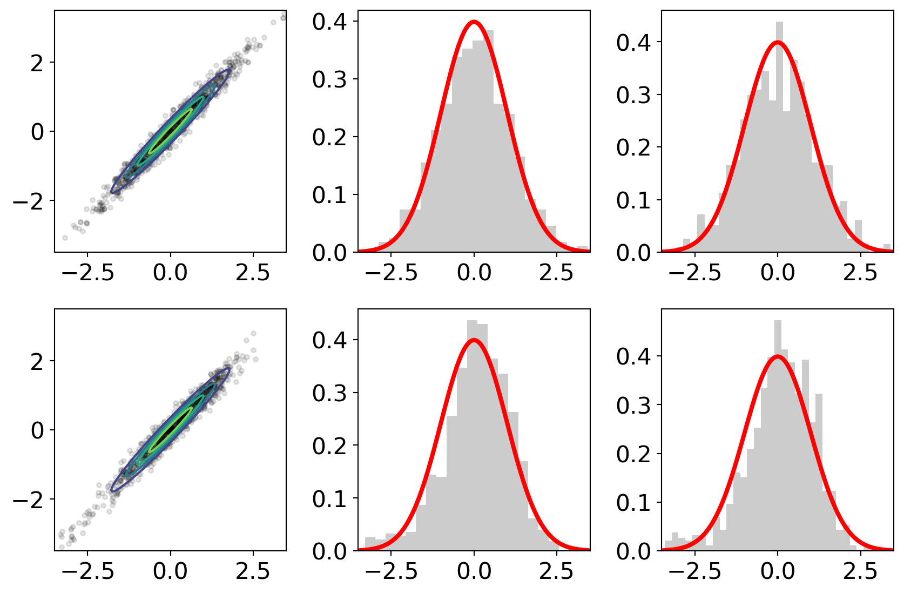
methods = ('HMC', 'Metropolis')
fig, ax = plt.subplots(figsize=(12, 4))
for samples, method in zip([hmc_samples, metro_samples], methods):
ax.plot(samples[burnin:,0], label=method, alpha=0.5,
color={'HMC': 'k', 'Metropolis': 'r'}[method])
ax.set_xlabel(r'iteration $s$')
ax.set_ylabel(r'first coordinate $x_1^{(s)}$')
ax.legend();Behavior in high-dimensional sample spaces (another example from Radford Neal):
"""HMC in high dimensions: example from Radford Neal's HMC review
"""
class RandomStepsize:
"""Randomized stepsize mixin.
"""
def __init__(self, lower, upper):
self.lower = float(lower)
self.upper = float(upper)
self._value = None
assert self.lower <= self.upper
@property
def stepsize(self):
self._value = np.random.uniform(self.lower, self.upper)
return self._value
@stepsize.setter
def stepsize(self, value):
pass
class MetropolisWithRandomStepsize(Metropolis, RandomStepsize):
def __init__(self, model, initial, n_samples, lower, upper):
Metropolis.__init__(self, model, initial, n_samples, lower)
RandomStepsize.__init__(self, lower, upper)
class HMCWithRandomStepsize(HamiltonianMonteCarlo, RandomStepsize):
def __init__(self, model, initial, n_samples, lower, upper, n_leapfrog):
HamiltonianMonteCarlo.__init__(
self, model, initial, n_samples, lower, n_leapfrog
)
RandomStepsize.__init__(self, lower, upper)
ndim = 100
sigma = np.linspace(0.01, 1., ndim)
model = CoupledOscillator(np.diag(1/sigma**2))
initial = np.zeros(ndim)
n_samples = 2000
# hmc
n_leapfrog = 150
hmc = HMCWithRandomStepsize(
model, initial, n_samples, 0.0104, 0.0156, n_leapfrog)
samples_hmc = np.array(list(hmc))
print(hmc.acceptance_rate)
# metropolis
metro = MetropolisWithRandomStepsize(
model, initial, n_samples * n_leapfrog, 0.0176, 0.0264)
samples_metro = np.array(list(metro))[::n_leapfrog]
print(metro.acceptance_rate)0.8660.25031burnin = int(n_samples/10)
# plotting
fig, axes = plt.subplots(2, 2, figsize=(9, 9), sharey='row', sharex='col')
for ax, samples in zip(axes[0,:], [samples_metro, samples_hmc]):
ax.scatter(samples[burnin:].std(0), samples[burnin:].mean(0))
ax.axhline(0., ls='--', color='r')
axes[0,0].set_ylim(-0.7, 0.7)
for ax, samples in zip(axes[1,:], [samples_metro, samples_hmc]):
ax.plot([0., 1.], [0., 1.], ls='--', color='r')
ax.scatter(samples[burnin:].std(0), sigma)
axes[0,0].set_title('Random walk Metropolis')
axes[0,1].set_title('Hamiltonian Monte Carlo')
axes[0,0].set_ylabel(r'sample mean $\{x_i^{(s)}\}$')
axes[1,0].set_xlabel(r'sample variance $\{x_i^{(s)}\}$')
axes[1,1].set_xlabel(r'sample variance $\{x_i^{(s)}\}$')
axes[1,0].set_ylabel(r'$\sigma_i$')
fig.tight_layout()
A practical issue in applications of HMC is that the algorithm requires the gradient of minus log \(p(x)\). For some models it is far from straightforward to implement the gradient. Moreover, the gradient evaluations are on top of the evaluations of \(\log p(x)\), which are typical for MCMC approaches based on Metropolis-Hastings. Some remedy is provided by the possibility to use automatic differentiation to compute the gradient without implementing it explicitly. This strategy is used, for example, in the STAN software for statistical inference or in probabilistic programming packages such as tensorflow probability, PyMC 3, or pyro.
Another issue of practical importance is the question how to choose the algorithmic parameters, i.e. the number of integration steps \(T\) and the step size \(\epsilon\). Some attempts to choose these parameters automatically has been proposed and implemented in the NUTS algorithm.
A special case of HMC is Langevin dynamics which omits the acceptance/rejection step altogether and has gained some popularity in Bayesian deep learning when combined with stochastic gradient methods.
Lecture 9: Practical issues and diagnostics

Figure from Iain Murray: Advances in Markov chain Monte Carlo methods
Challenges in MCMC
Local exploration: MCMC samplers typically employ a proposal kernel that changes the current state only locally. The magnitude of changes in the variables is controlled by the step size or a similar algorithmic parameter. The step size is limited by the need to maintain a reasonable acceptance rate. The time it takes for a diffusive random walk to explore a distance scales with \[ (\text{distance} / \text{step size})^2 \]
Convergence: Typically, the chain starts from a highly improbable state, far away from any mode (local peak in the probability density function). To find a nearby mode, takes some time, again scaling unfavorably with dimension. But even if a mode has been found, it is not guaranteed that the Markov chain will find other modes in a reasonable amount of simulation time. These other modes could be more important in the sense that they carry more probability mass; so missing out on these modes can result in highly biased approximations.
Mixing: To find all relevant modes is one of the greatest challenges when sampling high-dimensional probabilistic models with multiple peaks (which is the rule rather than the exception). There are many reasons for having to deal with multi-modal distributions. A common reason are symmetries such as invariance under permutation of labels resulting in the label-switching problem in Gaussian mixture modeling. None of the methods that we discussed so far are particularly suited to explore multi-modal probability distributions. A common approach is to use tempering to flatten the probability such that the Markov chain can explore sample space more freely, and simulate a chain of tempered distributions, either sequentially (e.g. in Annealed importance sampling (AIS)) or in parallel (e.g. in Parallel tempering). Unfortunately, there is not enough time to discuss these important methods.
Balancing density and volume: Even if all relevant modes are found eventually, our algorithms might not visit them in due proportion. A probability peak might be very pronounced, but only carry a small amount of probability mass. If “jumps” between modes happen infrequently, the fraction of samples per mode give a bad estimate of the actual propoartion of probability mass under those modes.
Example: Bimodal distribution
Let’s illustrate some of these problems on a simple probability distribution that has two modes. Multimodality offers one of the largest challenges for MCMC, which allows us to demonstrate some typical problems on a relatively simple example. We discretize the distribution so we can easily analyze the Markov chains by the eigenvalues of their transition matrices.
import numpy as np
import matplotlib.pyplot as plt
from scipy.special import logsumexp
def make_target(centers, widths, weights, n_states):
"""
Return a discrete probability distribution (a probability vector)
defined on a discretization with `n_states` bins of the interval [-7, 10].
The probability distribution is bimodal with gaussian peaks at `centers` and
standard deviations `widths`.
The peaks is weighed according to `weights`
"""
x = np.linspace(-7., 10., n_states)
dist = np.subtract.outer(x, centers)
log_weights = np.log(weights)
log_weights -= logsumexp(log_weights)
logp = (
- 0.5 * dist**2 / widths**2
- 0.5 * np.log(2 * np.pi * widths**2)
+ log_weights
)
logp = logsumexp(logp, axis=1)
logp -= logsumexp(logp)
return np.exp(logp)
def make_proposal(n_neighbors, n_states):
"""
Return a n_states x n_states transition matrix that puts equal
probability on the transition to the state's `n_neighbors' next
neighbors and zero probability to all other states.
"""
Q = np.sum([np.eye(n_states, k=k) for k
in range(-n_neighbors, n_neighbors+1)], 0)
return Q / Q.sum(1)
def metropolis_hastings_discrete(
X, p, Q, init_state, n_samples, seed=None
):
"""
Metropolis-Hastings for discrete target `p` with proposal matrix `Q`
"""
if seed is not None:
np.random.seed(seed)
n_accepted = 0
x = init_state
samples = [x]
# standard Metropolis-Hastings loop
while len(samples) < n_samples:
y = np.random.choice(X, p=Q[:,x])
r = Q[x,y] * p[y] / (Q[y, x] * p[x])
if r > np.random.random():
x = y
n_accepted += 1
samples.append(x)
return np.array(samples), n_accepted / n_samplesMixing
For the following, we set the two peaks in our example to have equal mass (i.e. the integral over the density around both peaks is the same), but choose one to be slim and tall, and the other relatively broad and shallow.
We will see that with the particular proposal distribution and stepsize we chose, the samples are not a very good representation of the target distribution, since the proportion of samples under each peak is quite far from the proportion of actual probability mass under the peaks:
from ipywidgets import interact, Dropdown
# setting bimodal toy system
centers = np.array([-4.0, 4.0])
widths = np.array([0.2, 2.0])
weights = np.array([0.5, 0.5])
n = 100 # number of states
X = np.arange(n) # sample space
p = make_target(centers, widths, weights, n)
# use local proposal chain
stepsize = 5
n_samples = 1e4
# random walk with uniform proposal and reflective boundary
Q = make_proposal(stepsize, n)
@interact(
seed=Dropdown(
options=[41, 1234, 43],
value=41,
description="Seed: "
)
)
def plot_samples(seed):
"""
Run the sampler with given RNG-seed and plot the samples as well as
the target distribution.
"""
samples, acceptance_rate = metropolis_hastings_discrete(
X, p, Q, X[-1], n_samples, seed
)
print(f"acceptance rate: {acceptance_rate:.1%}")
print(f"{np.mean(samples<25):.1%} of all samples are in left mode")
# plot results
plt.rc('font', size=14)
fig, ax = plt.subplots(figsize=(9, 5))
ax.plot(X, p, color='r', lw=2, alpha=0.7)
ax.set_title(f"Probability distribution with two peaks of equal mass\n"
f"but {np.mean(samples<25):.1%} of all samples are in left peak")
ax.hist(samples, bins=40, density=True, color='k', alpha=0.2);Assessing whether our chain has visited each peak in due proportion is in general a very hard problem, because the true proportions are not known (and estimating the proportions is equivalent to the original problem we’re trying to solve).
What we can say though is this: If multimodality is present, and our chain visits at least two different modes (otherwise we might not even know that more than one mode exists), then if the number of jumps between those peaks is low, the proportion of samples under each peak is very likely a bad estimate of the true proportion. This is one of the reasons why visual inspection of the samples is important. (We will elaborate on this below.)
Convergence
Convergence rates for Markov chains
The speed of convergence of a Markov chain \(P\) with stationary distribution \(\pi\) depends on how quickly contributions to the distance
\[ \left|p^{(S)} - \pi\right| \tag{79}\]
die out as \(S\to\infty\). Distance (Equation 79) is dominated by the second largest eigenvalue \(\lambda_2\) of \(P\). Since the Markov chain is assumed to be irreducible and aperiodic, we have strictly \(|\lambda_2| < 1\). If \(u_2, u_3, \ldots\) are the eigenvectors of \(P\) with eigenvalues \(1 > |\lambda_2| \ge |\lambda_3| \ge \ldots\), then we can write the initial distribution as \[ p^{(0)} = \pi + a_2 u_2 + a_3 u_3 + \ldots \] After \(S\) transitions, the initial \(p^{(0)}\) will be propagated to \[ p^{(S)} = \pi + a_2 \lambda_2^S u_2 + a_3 \lambda_3^S u_3 + \ldots \] and therefore \[ \left|p^{(S)} - \pi\right| \sim |\lambda_2|^S \]
def metropolis_map(Q, p):
"""
Construct Metropolis kernel from proposal kernel and target distribution
"""
# M = np.clip(Q, 0., (Q * p).T / p)
M = np.min([Q, (Q * p).T / p], axis=0)
i = np.arange(len(M))
M[i,i] = 0.
M[i,i] = 1 - M.sum(0)
return M
def second_eigval(M):
"""
Return the second largest (by absolute value) eigenvalue of square matrix `M`
"""
return np.sort(np.abs(np.linalg.eigvals(M)))[::-1][1]
def propagate(M, p0, n):
"""
Apply Markov-transition `M` to initial distribution `p0` (vector) `n` times and return
the resulting distribution (vector)
"""
P = [p0.copy()]
for _ in range(n):
P.append(M @ P[-1])
return np.array(P)stepsizes = (5, 10, 15, 20, 50)
distances = []
rates = []
p0 = np.eye(n)[-1]
for stepsize in stepsizes:
Q = make_proposal(stepsize, n)
M = metropolis_map(Q, p)
P = propagate(M, p0, 10000)
d = np.fabs(P - p).sum(1)
distances.append(d)
rates.append(-np.log(second_eigval(M)))colors = plt.rcParams['axes.prop_cycle'].by_key()['color']
fig, ax = plt.subplots(figsize=(9,5))
for i in range(len(stepsizes)):
ax.plot(distances[i], alpha=0.3, lw=5,
label='step size={0}'.format(stepsizes[i]))
t = np.arange(10000)
for i in range(len(stepsizes)):
label = r'$\exp\{-\lambda_2 s\}$' if i == 0 else None
ax.plot(np.exp(-rates[i]*t), ls='--', alpha=0.9,
color=colors[i], label=label)
ax.set_xlabel(r'iteration $s$')
ax.set_ylabel(r'$|\pi - p^{(s)}|$')
ax.legend()
ax.set_ylim(0., 1.);
Achieving fast convergence rates: Parameter tuning
In our simple discrete example we can analyze the eigenvalues of the Markov transition matrix to assess the convergence behaviour and set our algorithmic parameters in a way that minimizes the magnitude of the second largest eigenvalue. In real-world applications with high dimensional sample spaces and continous variables we are usually not so lucky. We need a heuristic that offers us some guidance.
In our example we’ve seen that the convergence rate depends on the step size. This is generally the case. Another thing that changes with stepsize is the acceptance rate. For a vanishingly small stepsize, the acceptance rate is close to one but the chain does practially not “move” at all and exploration of the typical set will be very slow (corresponding to a large second eigenvalue). On the other hand, if we set the step size to a very large value, the proposal distribution will mostly suggest points outside the typical set, which will get rejected most of the time, so again the chain does not “move” very much and stays at the same point most of the time with some occasional large jumps in between.
This suggests that one can tune algorithmic parameters of MCMC methods (such as stepsize) by aiming for an acceptance rate that lies somewhat in between those extremes. Gelman et al, Chapter 12.3 quote desired acceptance rates between 0.44 and 0.23, depending on dimension. These are rules of thumb, motivated using the assumtion of a (single, multivariate) normal distribution.
Let’s investigate the stepsize/acceptance-rate behaviour for our discrete toy example, where we have the luxury of knowing the second largest eigenvalue:
stepsizes = range(1, 101, 5)
rates = []
acc = []
for stepsize in stepsizes:
Q = make_proposal(stepsize, n)
M = metropolis_map(Q, p)
rates.append(-np.log(second_eigval(M)))
_, acceptance_rate = metropolis_hastings_discrete(
X, p, Q, X[-1], 50_000
)
acc.append(acceptance_rate)
fig, ax = plt.subplots(figsize=(5, 5))
ax.scatter(stepsizes, rates, s=200, color='k', alpha=0.7)
ax.set_ylabel(r'-$\log|\lambda_2|$')
ax.set_xlabel('stepsize');
ax2 = ax.twinx()
ax2.scatter(stepsizes, acc, s=200, color="red", alpha=0.7)
ax2.set_ylabel("acceptance rate", color="red")
ax2.set_ylim(0, 1)
ax2.tick_params(axis='y', color='red', labelcolor='red')Warmup phase (“Burn-in”)
As we’ve seen, the Markov chain does not start from the stationary distribution, so \[ \mathbb E_{p^{(s)}}[f] \not= \mathbb E_p[f]\, , \] and the difference can be substantial for small \(s\), thereby inducing significant bias to the Monte Carlo estimator:
\[ \frac{1}{S} \sum_{s=1}^S f\bigl(x^{(s)}\bigr). \]
To minimize the bias from this initial phase in which the chain has not yet achieved convergence, it is common practice to discard the first samples \(x^{(0)}, \ldots, x^{(B)}\). This phase is often called warm-up or burn-in. It is assumed that the samples \(x^{(B+1)}\) will approximately follow the target distribution \(p\). The Monte Carlo approximation then becomes: \[ \frac{1}{S-B} \sum_{s=B+1}^S f\bigl(x^{(s)}\bigr)\, . \tag{80}\]
The question that arises in practice is of course how to select \(B\), or in other words how to assess after how many steps the chain has reached approximate converge.
Monitoring convergence
Determining whether or when our simulation has reached approximate convergence is unfortunately not very easy in most cases. The converse however is usually relatively straigtforward: Cases in which chains have not reached convergence are often easy to spot. Several concepts are of help:
Trace plots
The first is to inspect the samples of each random variable individually. One of the most useful tools is to plot the sequence of samples for each of the simulated variables as an actual sequence, with the iteration number \(s\) on the x-axis and the sample \(x^{(s)}\) on the y-axis. Such a plot is commonly called a trace plot. This kind of plot can reveal several problems if they’re present, e.g. non-stationarity (i.e. if the chain has not yet converged) or infrequent jumps between multiple modes. We will see an example below.
Simulation of multiple chains
Another useful strategy is to run multiple independent simulations either in parallel or in sequence, and to start each of the simulations at very different initial points. This can reveal problems in the simulation that would be impossible to discover with a single simulation run only. An example of this is illustrated in the left plot of figure Figure 1, which shows two independent simulations that were started at different points in the sample space. Each sequence individually looks stationary, and if only one simulation would have been run, one might have concluded that the samples give a good representation of the desired target distribution. Observing that the second simulation also looks stationary but covers a different subset of the sample space, reveals that the target distribution has at least two modes and our simulations underexplore the sample space. We need to adapt the simulation parameters (e.g. increase stepsize)!
n_chains = 2
# two peaks of small equal width
# relatively large stepsize
# chains both start within typical set
p1 = make_target(np.array([-3.0, 5.0]), np.array([1.0, 1.0]), weights, n)
initial_states = [X[20], X[70]]
Q = make_proposal(10, n)
samples1 = [
metropolis_hastings_discrete(
X, p1, Q, initial_states[i], 2_000, seed=3 + i
)[0]
for i in range(n_chains)
]
# two peaks of very large equal width
# very small stepsize
# chains both start outside typical set
p2 = make_target(np.array([-3.0, 5.0]), np.array([10.0, 10.0]), weights, n)
initial_states = [X[0], X[-1]]
Q = make_proposal(1, n)
samples2 = [
metropolis_hastings_discrete(
X, p2, Q, initial_states[0], 2_000, seed=40
)[0],
metropolis_hastings_discrete(
X, p2, Q, initial_states[1], 2_000, seed=2
)[0],
]
fig, axs = plt.subplots(1, 2, figsize=(9, 3))
axs[0].plot(samples1[0], label="Chain 1", alpha=0.7)
axs[0].plot(samples1[1], label="Chain 2", alpha=0.7)
axs[0].set_xlabel("iteration $s$")
axs[0].set_ylabel("state")
axs[1].plot(samples2[0], label="Chain 1", alpha=0.7)
axs[1].plot(samples2[1], label="Chain 2", alpha=0.7)
axs[1].set_xlabel("iteration $s$")
plt.show() # to make quarto show the captionConvergence metrics
Third some statistics have been designed to help assessing whether the samples from multiple independent simulation runs mix well. The most widely used such statistic is the “potential scale reduction” \(\hat{R}\), sometimes also called Gelman-Rubin statistic, or simply r-hat. The basic idea behind that statistic can again be motivated from Figure 1: Looking at the left plot we see that the variance of the samples within each individual sequence is much lower than the variance between different sequences. Before the between-sequence and in-sequence variances are compared, the sequences are split in half and thus the number of sequences is doubled. This can again be motivated using figure Figure 1. Without splitting the sequences in half, the between-sequence variance would approximately be equal to the within-sequence variance on the right plot in figure Figure 1.
Assume that after splitting we have \(K\) sequences each with a number of \(S\) samples. We refer to a single sample in sequence \(k\) at iteration \(s\) as \(x^{(s)}_k\). \(\hat{R}\) is then calculated in the following way: First \(B\) and \(W\), the between- and within-sequence variances are computed: \[ \begin{aligned} B &= \frac{S}{K - 1} \sum_{k=1}^K \left(\bar{x}_k - \bar{x}\right)^2, \quad \text{where} \quad \bar{x}_k = \frac{1}{S} \sum_{s=1}^S x^{(s)}_k, \quad \bar{x} = \frac{1}{K} \sum_{k=1}^K \bar{x}_k \\ W &= \frac{1}{K} \sum_{k=1}^K \sigma_k^2, \quad \text{where} \quad \sigma_k^2 = \frac{1}{S - 1} \sum_{s=1}^S(x^{(s)}_k - \bar{x}_k)^2 \end{aligned} \]
From these the potential scale reduction \(\hat{R}\) can be calculated: \[ \hat{R} = \sqrt{\frac{\frac{(S - 1)}{S} W + \frac{1}{S} B}{W}} \]
This quantity is larger than 1 but we want it to be close. Gelman et al quote \(1.1\) as an upper threshold. Nowadays usually tighter thresholds are desired.
Let us re-visit the two examples of figure Figure 1, but let us also add a third example that demonstrates what “good” simulation runs look like. We also calculate \(\hat{R}\) for all three examples. The result is shown in figure Figure 2
def r_hat(chains):
"""
Calculate Gelman-Rubin potential scale reduction statistic.
"""
# double the number of chains by splitting each chain in half
chains = np.concatenate([np.split(c, 2) for c in chains])
# now have K chains, each with S samples:
K, S = chains.shape
# Between-chain variance:
B = S * np.var(np.mean(chains, axis=1))
# Within-chain variance:
W = np.mean(np.var(chains, axis=1))
var_plus = ((S - 1) * W + B) / S
return np.sqrt(var_plus / W)initial_states = [X[20], X[70]]
Q = make_proposal(60, n)
samples3 = [
metropolis_hastings_discrete(
X, p1, Q, initial_states[0], 2_000, seed=0
)[0],
metropolis_hastings_discrete(
X, p1, Q, initial_states[1], 2_000, seed=1
)[0],
]
fig, axs = plt.subplots(1, 3, figsize=(9, 3), sharey=True, sharex=True)
axs[0].plot(samples1[0], label="Chain 1", alpha=0.7)
axs[0].plot(samples1[1], label="Chain 2", alpha=0.7)
axs[0].set_xlabel("iteration $s$")
axs[0].set_ylabel("state")
axs[0].set_title(r"$\hat{R}$: " + f"{r_hat(samples1):.3f}")
axs[1].plot(samples2[0], label="Chain 1", alpha=0.7)
axs[1].plot(samples2[1], label="Chain 2", alpha=0.7)
axs[1].set_xlabel("iteration $s$")
axs[1].set_title(r"$\hat{R}$: " + f"{r_hat(samples2):.3f}")
axs[2].plot(samples3[0], label="Chain 1", alpha=0.7)
axs[2].plot(samples3[1], label="Chain 2", alpha=0.7)
axs[2].set_xlabel("iteration $s$")
axs[2].set_title(r"$\hat{R}$: " + f"{r_hat(samples3):.3f}")
plt.show()Dependent samples
When taking the step from standard Monte Carlo sampling to Markov-Chain Monte Carlo, we deliberately gave up the property that the samples are drawn independently. This dependence between successive samples means that the variance of the MCMC estimator is higher than that of standard MC estimator based on the same number of draws.
It can be shown that the asymptotic variance of the MCMC estimator converges against \[ \text{var}\left[\frac{1}{S}\sum_s f\bigl(x^{(s)}\bigr) \right] \xrightarrow[S\to\infty]{} \frac{1}{S} \text{var}_p[f] (1 + 2 \sum_{t \ge 1} \rho_t) \tag{81}\] where \(\rho_t\) is the autocorrelation of the sequence of samples at lag \(t\) \[ \rho_t = \text{corr}[f(x^{(s)}), f(x^{(s + t)})] \, . \tag{82}\] The higher the autocorrelation, the larger the variance of the MCMC estimator. For uncorrelated samples \(\rho_t=0\) and we are back to the standard variance of Monte Carlo estimators: \(\text{var}[f]/S\).
Effective sample size
Another way to look at this is that correlations decrease the effective sample size (ESS).
A way of defining an effective sample size \(S_\text{eff}\) is as the number \(S_\text{eff}\) of hypothetical independent standard-MC samples required to achieve the same variance as we achieve with the \(S\) correlated samples from our MCMC estimator: \[ S_{\text{eff}} = \frac{S}{1 + 2 \sum_{t \ge 1} \rho_t} = \frac{S}{\text{IACT}} \tag{83}\] where \(\text{IACT} = 1 + 2 \sum_{t \ge 1} \rho_t\) is the integrated auto-correlation time.
# autocorrelation analysis of bimodal target
def autocorrelation(x, n=None):
"""
auto-correlation of a times series
Parameters
----------
x: array containing time series
n: Optional integer specifying maximal lag for which to compute the auto-correlation
If `n` is None, the maximal lag is defined as the first lag for which the sum of
two successive lagged autocorrelations is negative.
"""
x = x - x.mean()
rhos = []
max_lag = len(x) if n is None else n
l1 = 0.0
l2 = 0.0
for i in range(max_lag):
autocov_i = np.mean(x[i:] * x[:len(x) - i])
if (n is None) and (i > 1) and (l1 + l2 < 0):
break
rhos.append(autocov_i)
l2 = l1
l1 = autocov_i
if n is None:
rhos = rhos[:-1]
return np.array(rhos) / np.var(x)np.random.seed(41)
stepsizes = (5, 10, 15, 20, 60)
n_samples = 20_000
ac = []
n_effs = []
for stepsize in stepsizes:
Q = make_proposal(stepsize, len(p))
S, acceptance_rate = metropolis_hastings_discrete(
X, p, Q, X[-1], n_samples
)
ac.append(autocorrelation(S*1., 10000))
n_effs.append(
round(
n_samples / (1 + 2 * np.sum(autocorrelation(S * 1.)))
)
)
print(f"stepsize={stepsize}: acceptance-rate={acceptance_rate:.1%}, ESS={n_effs[-1]}")
fig, ax = plt.subplots(figsize=(9,5))
for i in range(len(stepsizes)):
ax.plot(ac[i], alpha=0.3, lw=5,
label=f"stepsize={stepsizes[i]}, $S_{{eff}}$={n_effs[i]:d}")
ax.axhline(0, ls='--', color='k', alpha=0.7)
ax.set_xlim(0, 4000)
ax.set_xlabel(r'lag $t$')
ax.set_ylabel(r'autocorrelation $\rho_t$')
ax.legend()stepsize=5: acceptance-rate=57.4%, ESS=7stepsize=10: acceptance-rate=59.1%, ESS=10stepsize=15: acceptance-rate=47.0%, ESS=21stepsize=20: acceptance-rate=36.6%, ESS=27stepsize=60: acceptance-rate=30.4%, ESS=908<matplotlib.legend.Legend at 0x7fb0e5dd4730>
Practical summary (from Vihola’s lecture notes)
When using MCMC, always do the following checks:
Plot MCMC traces of the variables and key functions of the variables. They should look stationary after burn-in.
Make multiple MCMC runs from different initial states and check that the marginal distributions (or the estimators) look similar. This test reveals if your chain is “almost reducible”.
Plot sample autocorrelations of the variables and functions.
Calculate the effective sample size and check that it is reasonably large.
Calculate \(\hat{R}\) and check that it is close to 1 (< 1.1)